| 青薔薇伯爵と男装の執事～発見された姫君、しかして結末は～ (ウィングス・ノヴェル) | |
| 和泉統子 | |
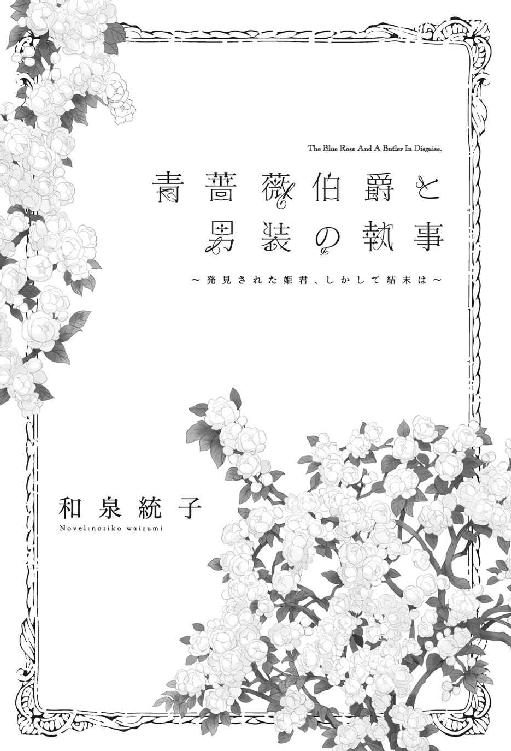
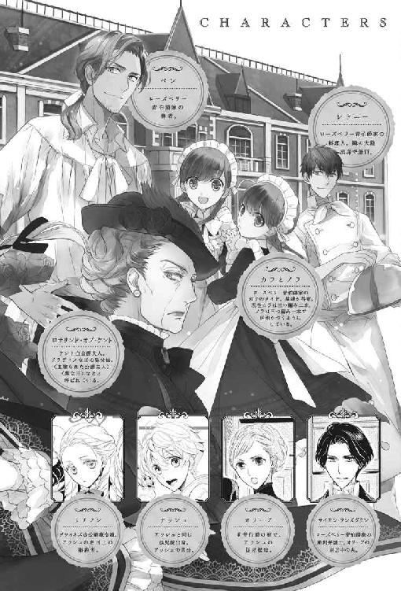
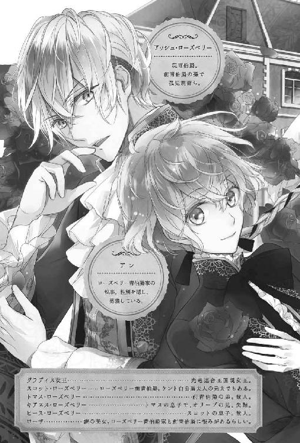
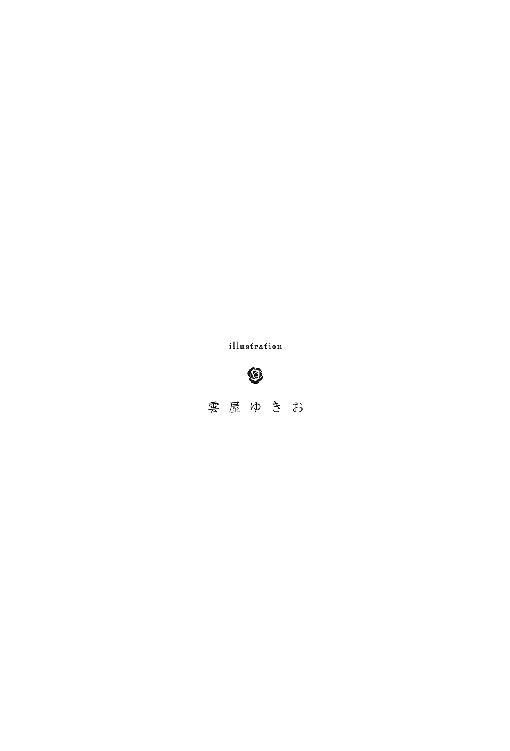
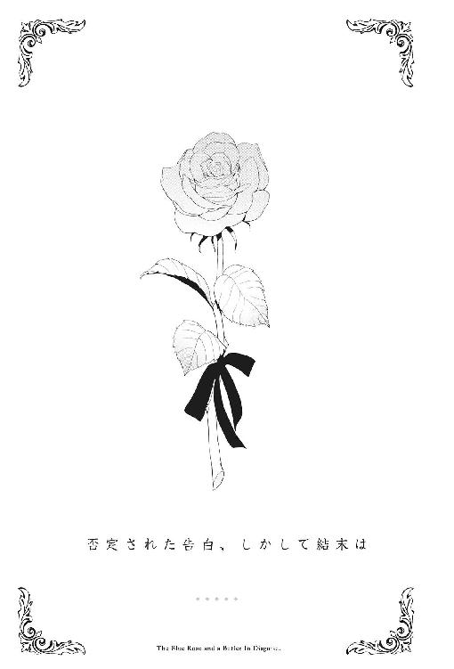
〝あなたは〈灰〉なんかじゃないわ〟
もう十年以上前のことなのに、ついさっき言われたことのように、アッシュの耳にその声は残っている。
〝僕の名は、〈灰〉だ。あんたの息子......異教徒には、別の意味がある名前なのかもしれないけれど〟
アッシュの冷めた返しに、彼女は困ったような顔で微笑んだ。
〝ええ、異教徒の私達には、同じ綴りで同じ発音で、ある樹木を意味する単語があるわ。私の息子はその樹木から名を貰ったの〟
そう言って、腕の中で眠る幼子を彼女は愛しそうに見遣った。
〝この子のお祖父様にあたる方はとても植物に造詣が深い方で、ご自身の息子に、その樹木の名をつけたかったそうなの。どんな土地にも根付いて、成長が早くて丈夫で様々な用途に用いられる秦皮のような人になって欲しいと。私達はこの樹木のことを〈アッシュ〉と呼ぶの〟
そんな願いを込めて〈アッシュ〉と呼ばれるはずだった子供は、どういう理由からか〈ヒース〉と名付けられたのだそうだ。
白竜王国の風が荒ぶる野で唯一花を咲かせる強い植物〈ヒース〉も、多分、彼の両親の様々な願いや祈りを含んでいたのだろう。
しかし、〈ヒース〉は、彼女と手を取り合って親も家も捨てた。
その後〈ヒース〉の名に反し頑強な体だか運だかに恵まれなかった彼は、生まれてくる息子の顔を見ることなく、夭折した。
そして、彼女は遺された息子に〈アッシュ〉と名付けたのだ。
〝秦皮は世界をその内側に収めるくらい大きな樹木になるの〟
〝へっ、えぇええ──────────？〟
アッシュは幼い子供らしくない応じ方をした。
優しい言葉をかけられても、それにどう応えればいいのか、生まれてこのかた誰からも教わっていなかったから。
〝世界を？ その内側に収める？ ただの木が？ 偉大なる〈妖術使い〉エフラム様でさえ、そんなこと、できやしない〟
アッシュは彼女の言葉をあざ笑った。いや、己の存在自体を。
〝僕は、〈灰〉だ。偉大な〈妖術使い〉エフラム様と比べたら、何もかも燃え尽きたあとの塵ほどの価値もない。ましてや、エフラム様にさえできないようなことができる秦皮になどなれない〟
赤子の頃から周囲に言われ続けた言葉を、そのまま口にする。
役立たずの烙印を押されたアッシュとは正反対に、一族の詩人達が数多の言葉を連ね、こぞって褒め称える偉大なる偉大なる長。
奇跡の〈妖術使い〉エフラム。
アッシュの母方の祖父は、生きているうちから伝説の人だった。
遠く遙か昔、この世界には、多くの神々と妖精、それに神獣達が人間と共に助け合って暮らしていたと言う。
〈妖術使い〉とは、妖精や神獣と心を通わせ、神々と人間の間を取り持つ能力者で、彼らの最も優れた者が一族を治めていた。
しかし、いつしか唯一神アドナイだけを信奉する福音教徒達が数を増やし、数多の神々と彼らを信奉する者達を徐々に滅ぼしていった。
大陸の大半が福音教徒達に征服されたのを見た四色の竜達は、古き神々を信じる者達と妖精や神獣達が安心して暮らせるよう、自分達の体を海に沈め、四色竜諸島を創った。
けれども、竜達の犠牲をもって得た平穏な時間さえ長くはなく、最後まで福音教徒達に抵抗した小竜島の一族や島の神々も妖精や神獣達も、数百年に及ぶ長い長い福音教徒達との戦いの中で力を失い、その多くが異界へと去ったと、一族の神話は語る。
一族の百人に一人も〈妖術使い〉が生まれなくなった時代に、突出した〈妖術使い〉の力を持って生まれたエフラムを、一族の者達が熱烈に信奉したのは無理のないことだった。
どんなに力のある〈妖術使い〉でも、〈火〉〈風〉〈水〉〈地〉の全ての妖精を使役することはできない。
それが、エフラムが生まれる前の一族の常識だった。
だが、エフラムは性質の異なる四つの妖精を使役できた。
彼のような〈妖術使い〉が長として一族を率いれば、もう一度、故郷の島を取り戻すことが叶うだろうと一族の誰もが夢見た。
──なのに、偉大なるエフラム様は連合王国の戦争に駆り出され、限度を超えた妖術を使うことを強いられ、力尽きて死んでしまった。
彼の死を強く嘆いた一族は、異界からエフラムを呼び戻すために、ありとあらゆる術を用い、星を仰ぎ、これが神々の定めだと、一人の乙女を掠い、エフラムの血縁者と娶せ、子を宿らせた。
──そして、失敗した。
期待はずれの役立たず。
母親にとっても父親にとっても。
一族の誰にとっても、お前は何もかも燃え尽きたあとの灰。
生まれ落ちたその日から、幾度となく自分に投げつけられた言葉を、アッシュは淡々と受け止め続けた。
伝説の〈妖術使い〉エフラムと、彼には及ばぬとも〈妖術使い〉の称号を得た父の血を確かに引くのに、アッシュは〈風〉の妖精も〈火〉の妖精も、比較的扱いが容易いとされる〈地〉や〈水〉の妖精さえも、使役することはできなかったから。
使役するどころか、まるで異教徒達のように、妖精も神獣も見ることさえ適わなかったから。
浅黒い肌と濃い色の髪や瞳を持つ一族の人間を名乗るには、髪の色も瞳の色も、そして肌の色も薄く、それこそ灰のようだったから。
アッシュは本当に一つも一族の者らしいところがなかったのだ。
〝エフラム様が素晴らしい方だったのは知っているわ。でも、四色の竜の伝説に出てくる世界樹は、秦皮の樹なのよ？〟
周囲の大人達の誰からも疎まれていたアッシュに優しい言葉をかけてくれた女性が、他ならぬ異教徒だったのは、ある意味、必然だったのかもしれない。
〝全ての生き物のために自分を差し出した秦皮の樹。その樹と同じ名前のあなたが、ただの〈灰〉なわけがないわ〟
──彼女が、僕のことを〈灰〉だと思わないのならば。
この世でたった一人、彼女だけでも、自分を灰のように無価値な存在だと思わないでいてくれるならば。
──他の誰に嫌われても、構わない。
そう、その時、アッシュは思った。
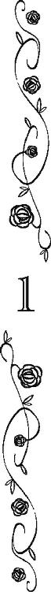
「......あんた、今から何をしようとしている？」
今現在、世界でもっと栄華を極めていると謳われる中央王都。
その華やかな街の中心は、偉大なるグラディス女王陛下の壮麗な白亜の建物が連なる王宮である。
そして、その王宮の周囲には、公爵家やら侯爵家やら連合王国の貴族達の中でも最高に高貴な人々の、豪奢な屋敷が建ち並ぶ。
アンが執事その他を務めるローズベリー青伯爵の屋敷も貴顕なる方々の贅沢な邸宅に挟まれて存在していた。
......ただし、件の館は輝かしい太陽の中の黒点のように、廃墟同然の佇まいであったが。
「......あんた、今から何をしようとしている？」
以前はローズベリー青伯爵邸のほとんどの窓からカーテンが消えていた。
しかし、今はアンのご主人様がカラとノラにカーテンを縫うようお金を渡されたので、二人が選んで縫った光の加減によって微妙に色を変える深い青色のカーテンが、屋敷のあちこちの窓を飾るようになっていた。
その青いカーテンの合間から、なんとか薄い陽光が差し込むような夜明け寸前の時間に、屋根裏を目指していたアンは、背後から唐突に呼びつけられ、かなり驚き、振り返った。
「ご主人様！ もうお目覚めになったのですか？」
アンの年若いご主人様は睡眠時間が短くても平気なタイプのようなのだが、それにしても早い。
──夕べは夜中の三時過ぎまで起きていらっしゃったようなのに、こんなに朝早く起きられるなんて、大丈夫なのでしょうか？ 睡眠時間が短いことは、健康によろしくないでしょうに。
と、ほぼ徹夜の自分を棚に上げて、主の体を気遣うアンである。
「僕が目覚めていたら、何か問題でも？」
「いいえ、そういうわけではございません」
敬愛するご主人様から不機嫌そうに尋ねられて、アンはブンと音がしそうなほど勢いよく首を振った。
問題でもと問われれば、実はご主人様の健康的に問題だと思ってはいる。
が、そこに踏み込むのは、まだ一年にも満たない付き合いしかないただの執事──しかも、残念ながら正式には認められていないっぽい──としては、差し出がましい気がする。
──ご主人様が実の弟様のように可愛がっているナッシュ様や、正式な婚約者であるリアノン様を差し置いて、ただの使用人に過ぎない私がご主人様の体を気遣って、忠告めいたことを言うのは、やはりおかしいですよね......。
自分はご主人様の家族でもなんでもないただの使用人なのだから──そう思う。
そして、そんな思考が、胃に何か重い物が落ちたような気持ちにさせる。
アンは改めて首を振った。
「失礼しました、ご主人様。朝のお茶を用意致しましょうか？」
薔薇の実をはじめとする各種薬草をアンが効能と味を吟味・研究を重ねてブレンドした特製の薬草茶は、薬草類にもお詳しく、気難しいご主人様もお好みのようで、朝から所望されることが多いのだ。
いつも顰めっ面の──というのも、青伯爵家の財政再建中でご主人様の悩みがつきないせいだとアンは心を痛めている──ご主人様が、アンの薬草茶を飲まれる時だけは少し和らいだ表情をなさる。
ので、アンとしてはなるべく特製の薬草茶を淹れて差し上げたいのである。が。
「じゃなくて！」
ご主人様は睡眠が足りていないためか、はたまた別のご理由からか。
お気の毒にも（ええ、まったくである）いつもの倍くらい頭が痛そうな顔をして、アンを見下ろされた。
「あんた、人の質問に答えろよ？ そんな格好をして、何をしようとしてるんだ？」
「そんな格好......？」
言われて、アンは自分の格好を見下ろした。
子供の頃に老ハワードから譲り受けた厚手のセーターは、アンの年齢よりも多い年月を経た古い古い品だ。
譲り受けて以来、大事に使ってはきたが肘に当て布をしたり、うっかり引っかけたところを別の毛糸で繕ったりしていて......有り体に言って、強烈に貧乏くさい。
前青伯爵の甥だったキアヌスの古着を解いて仕立て直したズボンも、膝に継ぎを当てるほど使い込んだ物だし、頭に被った帽子もベンか誰かのお下がりで、いつ購入されたか解らないほど古い。
ともかく身につけている物の全てが、何度も洗濯され、日に晒されたためか型はすっかり崩れているわ、色あせているわで、正直、貧民街の小僧のほうがまだマシな格好をしていそうである。
「これはこれは......見苦しい格好をお見せしまして、大変申し訳ございません、ご主人様」
こんな格好では連合王国の中でもきっての歴史を誇る名門ローズベリー青伯爵家の執事だとは、とても名乗れない。
かくも不格好で執事らしくない服を着ているところを主に見つかるとは執事失格だと、アンが落ち込みつつ頭を下げると。
「......だから」
ご主人様は不機嫌そうに──と言っても、その表情はデフォルトのようなものなのだが──前髪をかき上げなさった。
「人の質問に答えろよ？ あんた、今から、何を、しようとしているんだ？」
「はい。それは、ご主人様に薬草茶を」
アンがハキハキ答えかけた瞬間、ドンと言うかバンと言うか、とにかく凄い音がした。
──ご、ご主人様？
拳で壁を力一杯叩いたご主人様に、アンは言いかけた言葉を飲み込んだ。
「──僕に！」
（アン的には）なぜなんだか、ご主人様は額に青筋を立てていらっしゃる。
「僕に！ お茶を！ 淹れようと！ 思う前は、何をしようとしてたんだ？ あぁ？」
......などと言葉だけ聞いたら下町の不良少年みたいなのだが、ご主人様の並はずれて整った品格溢れる（※アン視点です）顔のおかげで下品な印象は受けない。
しかし、たいそうご立腹中なのは心の底から認識できたので、ついついアンは一歩下がってしまう。
「......そ、それは、はい。あの......屋根を塞ごうかと」
そうして抱えていた板の束を持ち直しながら、アンは小さな声で答えた。
別に悪いことをしているわけではないのだが、ついアンが萎縮してしまったのはご主人様があまりにも不機嫌そうだったからである。
さて、一般的に屋根というシロモノは、定期的に葺き替えられるものである。......少なくとも、大貴族の邸宅では。
だが、先代青伯爵の頃から長年借金に苦しんできたローズベリー青伯爵家では、ここ十数年屋根の葺き替えをする余裕がなかった。
その結果、母屋の屋根に大人が通れるほど大きな穴が開いたのが一年ほど前だ。
ちょうど前青伯爵スコットとその弟トマスが大怪我を負う事故が起き、二人が亡くなるわ、莫大な借金問題やら前青伯爵の孫捜しやらでゴタゴタしていたため、屋根の本格的な修理はできず。
あり合わせの板と油紙などでアンが素人ながら塞いだものの、この一年でそれもすっかり腐食してしまった。
と言って、大工を呼んで本格的な修理を行うには、まだまだ財政的余裕がない。
中央王都は豪雨地帯ではないが、晩春から夏にかけてよく雨が降る。
なんとしても雨が多い時期を迎える前に、屋根を修理しなくてはと思って悩んでいたところ、折良く、アンは王宮での短時間労働仲間だった従僕のツテで一人の官僚と知り合った。
字が汚いのを気にする彼の代わりに提出書類を清書する内職を請け負ったのだが、聞けば彼は製材所の次男坊だという。
それでアンは、労働の対価として上等の板を少しばかり分けて貰えるよう話をつけたのだ。
昨夜、彼が最初の給料として届けてくれた板は、屋根を塞ぐのに十分な量と質があった。
お誂え向きに、本日の天気は快晴である。
朝一番に天気を確認したアンは今日最初の仕事は屋根塞ぎだと決意し、所持している数少ない服の中でも特に汚れたり破れたりしても問題のなさそうな服を張り切って着込んだのであった。
「......屋根を、塞ぐ？」
予想外の回答だったらしく、ご主人様は印象的な青灰色の瞳を見開かれた。
「はい。屋根裏から屋根に登って、この板で塞げば、雨が多くなる時期を迎えても、雨漏りの心配をしなくて済むかと」
アンは抱えていた板の束を、視線で示しながら答える。
さて、これで納得なさっただろうと思いきや。
「......なんで、大工でもないあんたがそんなことをするんだ？」
と、ご主人様の不機嫌な調子の尋問は続いた。
「はい。それは、当家は大工を呼ぶには......そのぅ......」
「ああ、そうだったな」
アンがなんと説明すべきか言葉に迷っていると、アン以上に青伯爵家の財政状況をガッチリ把握しているご主人様は、面白くもなさそうな口調で口早に肯定された。
「だからって、あんたが屋根に登る必要はないだろ？」
「必要はあります。私は当家の執事ですから、屋敷の管理は、当然私の仕事です！」
誇らしさに胸を張って、アンは答える。
己は輝かしい歴史を持つローズベリー青伯爵家の、この連合王国いや世界中を探しても見つかりそうにない立派なご主人様の執事なのだと思うと、アンは嬉しくてしかたがない。
執事である以上、屋敷の管理はアンの神聖な仕事なのである。
今日は、神がアンを祝福しているかのように晴天だ。
手に入れた良質の木材で、今までのあり合わせの板で塞いだ箇所を少しはマシにできるだろうと、アンは心底張り切っていた。
......それなのに、である。
「執事の仕事に、屋根の修理は含まれていない」
忠誠を捧げるご主人様に冷厳なる口調で目一杯否定されて、アンは床に凹みそうになった。が。
「そんなことはありません」
即、姿勢を正して反論する。
ご主人様に口答えをするのは使用人として誉められたことではないが、真に優秀な執事はご主人様の誤りを正す気概が不可欠だと、アンの養父である老ハワードも言っていたから（多分）問題ない（はずだ）。
「当家の屋敷の管理は、執事の仕事です。当然、修理・修復も執事たる私の管轄にあります」
そもそもこの件は、当家の執事を自負するアンとしては、絶対に譲れないところなのである。
「......百歩譲って」
アンの全身に溢れる一歩も退かないという気迫を目の当たりにしたせいか、ご主人様も譲歩の言葉を口にされた。
世間からは傲岸不遜の塊のように言われていらっしゃるが、アンのご主人様はこのように使用人に対しても譲歩すべき時は譲歩される方なのである。
やっぱりご主人様は、素晴らしい方ですね！ ──と、アンが改めて主を誇らしく思っていると。
「屋敷の管理の担当者が、ベンでもシドニーでもカラやノラでもなく、あんたにあることは否定しないが」
──おお！
一瞬アンは「ご主人様が、お屋敷の管理は私の仕事だと、認めて下さった！」と感動した。
管理者だと認めて頂けたということは、即ち、アンが執事であることを認めて下さったのと同意である（はずだ）。
が、次の瞬間。
「実際に屋根を修理するのは、あんたより腕力のあるベンのほうが適切だと思うんですがぁああ────？」
などと言われ、アンの上昇した気持ちは、容赦なく地面近くまで叩き落とされた。
──腕力を問題にされれば、確かに私はベンより劣ります。劣りますが！
しかし、屋根の修理に腕力は必須ではない（はずだ）と、アンは強く思う。
それに、ベンが屋根の修理をできない正当な理由を、アンは持っていた。
「ベンには無理です」
「なぜ？」
「重過ぎます」
ベンの名誉のために言葉を添えるならば、けして彼は太っているわけではない。
ただ、連合王国民の紳士平均よりも上背が五インチは高く、かつそれに見合うだけの筋肉もキッチリついているというだけである。
「あの大きな体で屋根に上がったら、余計に穴を拡大させるだけです」
「それを言うなら、あんただって......」
と、アンの体を頭の天辺から爪先まで、ご主人様は何度も見られた。そして。
「......屋根板が腐っているのなら、あんたが乗っても同じだろ。これ以上、屋敷を破壊するようなことをするなよ」
微妙に視線がアンから外れているのは、誰が見てもアンが瘦せぎすで、体重が重いとは言いにくいからかと推察する。
「私はベンの半分も目方はないですし、前に登った時も平気でした」
そこに勝機を見出し、アンが言葉を重ねれば。
「......今日は風が強いから、あんたみたいに細くて軽い人間は吹き飛ばされるんじゃないか？」
今度は体重が軽いことのデメリットを、ご主人様は持ち出される。
──うっ。......どうしてここまで強行にご主人様は、私に屋根を修理させまいとしていらっしゃるのでしょうか？
アンには屋根の修理などできっこないと思っていらっしゃるのだろうかと、悲しくなる。
──前回私が応急修理をした箇所は、お世辞にも美しく修復できたとは申せませんがっ！
今回は、前回より質の良い木材を手に入れている。
それに初めての時と違って、前回の経験も活かせるはずだ。
本職の大工には及ばずとも、前よりは見目良く修復できる自信がアンにはあった。
「多少風はありますが、これくらいなら平気です。それより、中央王都はこれから雨が多くなる季節ですから、よく晴れた今日のうちに、済ませてしまったほうがいいと思うのです」
アンが「絶対に私がやります」と顔にデカデカと書いて強く切り返すと、ご主人様は、（アン的には）なぜなんだか、心底うんざりした顔で天を仰がれた。
──ご主人様？
「──解った」
しばらく何事か思案されていたご主人様が出した結論は。
「だったら、僕がやる」
「とんでもありませんっっ！」
主の申し出に、即座にアンは眉と声を大きく跳ね上げた。
「何を仰いますか!? ご主人様に、そんなことはさせられませんっっ!!」
傍目には廃屋寸前のボロ屋に見えていても、ローズベリー青伯爵邸は四階建てなのだ。
万一屋根から転がり落ちたら、大怪我どころか命にかかわる高さだ。
──それに屋根を歩いておられる時に、腐った板を踏み抜いておケガをされるかも知れませんし！
そもそも大工道具が危険だ。
鋸だって金槌だって、ちょっとしたことで、ご主人様の手や足を傷つけてしまう可能性があるではないか。
──それから、屋根裏とか屋根の上とか、釘がそのまま出ている箇所がありませんでしたっけ？
そんな所を踏んだり、手を突いてしまったりしたらどうなる？
釘が錆びていたら、破傷風の心配もしなくてはならない。
──ああ！ そう言えば、屋根裏部屋の天井は低いから、ご主人様みたいに長身の方が歩かれると、梁に頭をぶつけられるかもしれないです！
......とかなんとかかんとかエトセトラ。ほんの三十秒ほどでありとあらゆる危険のバリエーションを百ほども思いついてしまったアンは決死の表情で叫んだ。
「屋根から落ちられたら、大変なことになります！ ご主人様が、屋根の上に登るのも、大工仕事をするのも、危険過ぎます！ 絶対に絶対に駄目です!!」
と、形相を変えたアンにご主人様も目を剝く。
「ああぁ？ あんたが落ちたって、大変なことになるだろうが!?」
「私は大丈夫です！ 今まで一度だって屋根から落ちたことはないんですから」
「僕だって大丈夫だ！ 自慢じゃないが、今まで一度だって屋根から落ちるような間抜けなことはした覚えがない！」
「ですが、ご主人様は当家の屋根に登られるのは初めてではないですか。この屋敷の屋根は急勾配で滑りやすいんです！ それに、屋根から落ちなかったとしても、金槌や鋸で指をケガしてしまうかもしれないじゃないですか！」
「────ああぁ？」
しまった！ ──と、主の声が、床を這うように低く低くなったことに気づくのが遅かった。
「誰がそんな間抜けなことするって？ 僕がそんな不器用な人間だとでも、言いたいんですかぁああ────？」
「い、いえ！ そんなことはありません、ご主人様！」
アンは大慌てで首を左右に振った。
確かに今の発言は過保護過ぎて、ご主人様をバカにしているようにも取られかねない。
もちろんご主人様がとても優秀で有能で、万事そつがないタイプの人間であることは、アンも常々周囲に自慢にするくらい承知している。
何年も田舎の村の孤児院で過ごされていたから、大工仕事を行う機会もおありだったろうと思う。
容姿や頭脳に限らず何事にも秀でていらっしゃるご主人様だからして、おそらくアンが屋根を修理するより、遙かに素晴らしい仕事をなさるだろうとも思う。
その点はアンも微塵も疑っていないのだが。
「もちろんご主人様はなんでもおできになる方であることは、私も十分承知しております。おりますけれども、万が一ということもあります！ とにかく執事としましては、ご主人様に危険なことはさせられません！」
「それを言うなら、僕だってあんたに────」
言い返された言葉が、不意に途切れた。
──......ご主人様？
胸の前で腕を組んだまま、むっつりとご主人様は黙り込まれている。
「──」
「──あ、あの......、ご主人様......？」
いつにも増して不機嫌そうなご主人様に、アンが躊躇いがちに声をかけると。
「アッシュもアンさんも、こんな早朝から何を言い争ってんの？」
と、ご主人様が弟のように可愛がっている少年が階段を上ってひょっこり現れた。
「ナッシュ！」
途端、飛ぶような勢いでアンのご主人様は弟分の少年の傍に走り寄った。
「もう起きたんだ？ 少し熱があるんじゃないのか？ もう少し寝ていたほうがいいぞ、お前」
先刻までのアンに向けていた怖い声とはぜんぜん違う。
アンに背中を向けておられるので表情は見えないが、ナッシュの頭をクシャクシャと撫でながら、怒っているような心配しているような、複雑で優しい声で話しかけていらっしゃる。
「うん。そう言われても、アッシュとアンさんが騒いでたから、何事かと思ってさ」
アンのご主人様とは対照的に、竜喘息の発作に襲われている時をのぞいて、ナッシュは常に機嫌が良い。
いや、発作に襲われている時だって、つらそうではあるが人を不愉快にさせるような言動をしない。
──言動をしないと言いますか、無邪気の塊みたいでナッシュ様の言動は悪く取りようがないと言いますか。
今も他の人が言ったら嫌味になりそうなことを、明るく無邪気な口調でさらりと言ってから。
「あれ？ アンさん、その荷物は、今から大工仕事しようとしてる？ もしかしてココの屋根？ だったら、オレがやろうか？」
「却下」
アンが持っている材木を見たからか、先ほどの二人の会話を漏れ聞いていたからか、ナッシュが大工仕事を志願するのとご主人様の駄目出しは、ほとんど同時だった。
「屋根の上で発作が起きたら、どうする気ですかぁああ？ 竜喘息の治療とか骨折の治療はできても、屋根から落ちて死んだ人間を生き返らせる術は、いくら僕でも持ち合わせていないんですけどぉおお────？」
と強い口調でナッシュと（アン的には）ついでのようにアンに申し渡される。
そうして、ご主人様は再び胸の前で腕を組んで、それはそれは深い溜息を吐かれた。
「──解った。大工を呼ぶ。だから、ナッシュも、それからあんたも屋根に登ったりするなよ！ 絶対に、だ！」
「......ですが、ご主人様。今月、当家にそのような余裕は」
「なんとかする！」
アンが反論を言い終わる前に嚙みつくような勢いで、ご主人様は叫ばれた。
──大丈夫でしょうか？
ご主人様を疑うわけではないが、不安になる。
過日、ご主人様は女王陛下や方々の貴族達からかなりの額の婚約祝い金を頂いたが、それの半分で以前のローズベリー青伯爵家の領地をいくらか買い戻された。
そして、残り半分を改良された新種の牧草の苗の購入に使われた。
なんでも牧草の質が上がると飼っている羊の毛の質も上がり、その羊毛を使って非常に高価な毛織物が作れるそうだ。
だから、羊の毛も今の何十倍も高く取引されるようになるらしい。
たくさんの羊を飼うより、一頭当たりの羊が生み出す利益が大きいほうが村人の労力も少なくてすむわけだから、領主にも領民にも利がある素晴らしい施策だとアンは主を誇らしく思う。
ただ、この投資の結果が出るのは数年後になりそうだ。
以前は借金の利子に消えていた領地からの収入は、借金が消え、元からの領地と買い戻した領地に加え、リアノンとの婚約で彼女が結納金代わりに持ってきた領地の分、大幅に増えた。
が、管理する領地も広くなった分、今のところそれらは領内の橋やら道やら堤防やら......あれやこれや、整備のために消えている。
個人的な趣味や賭け事にお金が消えているわけではなく、将来を見据えて計画的に使われているのだから、ある意味頼もしいことである。
それでも今現在、ローズベリー青伯爵家に入ってくるお金は入るやいなや片っ端から出ていくような状況で、執事のアンも屋敷の維持費用を最低限しか主から貰っていない。
そして、今月の予算では、とてもとても屋根を塞ぐために大工の手間賃を出すことは無理だった。
「アンさん、アッシュの言う通りにしようよ」
脳内出納帳をひっくり返して困惑しているアンの袖を、ナッシュは引っ張った。
「もし、オレらが屋根から落ちて大怪我でもしたら、アッシュってば、心痛で死んじゃうかも。そっちのほうが損失は大きいでしょ？」
「......ぁ？ 誰が、心痛で、死ぬって？」
ナッシュの軽口に、アンのご主人様は口の端を曲げて、彼の額を指で弾いた。
「死ぬわけないだろ。ローズベリー青伯爵家をこのままにしておいては、僕は殺されても死にきれないな」
「さすがご主人様です！」
二人の会話の前半をきれいにスルーして──いくらご主人様がお優しい方でも、（アン的には）執事ごときのために、ローズベリー青伯爵ともあろう方が心痛で亡くなるなどありえないからである──アンはすかさず感嘆の眼差しを主に向けた。
「ローズベリー青伯爵家が以前のような栄光を取り戻すまでは、たとえ誰かに道半ばで殺されそうになろうとも、絶対に死なないと覚悟なさっているんですね！ さすが青竜王国の伝説の騎士の末裔でいらっしゃいます！ 執事の私不肖ジョージ・ハワードも、ご主人様のためにこの命に代えても屋敷とご主人様、ご家族様をお守り致します！」
「──────」
感動に胸を震わせ、勢い込んで告げるアンに、ご主人様は棒でも飲み込んだような顔で数秒黙り込まれた。
その横で目を丸々と大きく見開いたナッシュが、物言いたそうな顔でアンとアッシュを交互に見ている。
「......とりあえず」
咳払いを一つ入れて、アンご自慢のご立派なご主人様は口を開かれた。
「お茶を淹れてくれ。それから......ああ、この屋敷には、懇意にしている大工はいるのか」
「はい。ご主人様のお祖父様であられるスコット様が、青伯爵家を継がれた頃から付き合いのある大工の親方がいらっしゃいます」
「じゃあ、屋根の修理はそいつに頼んだほうが無難だろうな。そいつに連絡して、屋根の修理をあんたが適正と思う価格で頼んでくれ」
「はい、ご主人様！」
勇んで台所へと向かうアンの背後で、ご主人様が深い深い深い溜息を吐かれる気配がした。
──やはり、大工を呼ぶのは経済的に厳しいのでしょうか......？
主の溜息の理由を、アンはそう察した。
──ちゃんと交渉して、できるだけ安く、でも、当分屋根は葺かなくてもいいようにしなくては。
幸い良質の木材は、すでに揃っている。
材料費の分、安くできないか交渉できるかもしれない。
アンはあれこれ考えながらも、まずは特製の薬草茶を淹れるべく、台所へと急いだ。
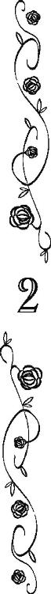
「へェ、こちらが、新しいご主人様でサ？ 先代からご贔屓に与っております、あっしは大工のコンと申しまサ」
「へっ、えぇええ──────」
執務机越しにアッシュはいつもより念入りに語尾を伸ばしながら、小柄な相手を観察した。
小竜島訛りの大工は、元は墨のように黒い髪を持っていたようだが、今は首の後ろで束ねた髪の半分以上が白くなった老人だ。
腰も大きく曲がり、老いて皺深い顔をさらにしわくちゃにして愛想良く笑んでいる。
浅黒くくすんだ肌は日に焼けたものか、それとも元々の色か。
「......ずいぶんお年を召しているようだが、屋根なんて登って問題ないのか？ あんたが屋根から転がり落ちても、うちは遺族への見舞金なんてとても出せないんだけど？」
アッシュの言葉に、大工は自分の額をピシャリと叩いて、しゃがれた声で笑った。
「こりゃ先代のスコット様と違って、口の悪いお方だナ。ハワードさんも苦労なすってるだろうヨ？」
「いえ、そんなことはありません！ ご主人様はコン親方の体を心配なさっているんですよ。もちろんコン親方が屋根の上で産湯に浸かったような方だと私もご主人様も存じ上げておりますが、それでも親方が七十近いお年の方だというのは事実ですし」
久しぶりに青伯爵家の執事の名たる〈ハワード〉で呼ばれたアンは嬉しそうな笑顔で、いつもの倍くらい明るい声でハキハキと答えた。
アッシュとしては、それがなんだかとてもとても面白くない。
──そもそも僕が心配しているのは、言葉通り親方の体ではなく、事故の見舞金なんですけどぉおお？
どうしてこの男装の執事は、ここまで善意の方向にアッシュの言葉を曲解できるのか、毎度毎度のことながら不思議である。
──なんだって僕が、この爺の心配をしなきゃならないのさ？
しかも、よりによってこの爺をと、アッシュはいつもの倍くらい不機嫌な顔になる。
「そうでしたか。スコット様と違って、ずいぶんと回りくどい言い方をなさるんでサ」
それを埋め合わせるかのように、大工は愛想良くニコニコと笑顔を振りまいた。
「ところで、ハワードさん、申し訳ないんですがヨ、屋敷の玄関前であっしの子分どもが待っているんでサ。そいつらを問題の箇所まで案内して下さいませんかナ。あっしは、ちょっと青伯爵閣下と手間賃のことで相談したいんでサ」
大工は何度も頭を下げながら、アンにそんなことを頼む。
「手間賃のことでしたら、私が」
「いや、僕が聞く。あんたは、コン親方が言う通りにしてくれ」
「......はい」
一瞬訝しそうな顔を見せたが、アンは素直に頷き、一礼すると部屋を出て行った。
それを見送って。
「──まさか、ローザ様が言う通り、ローズベリー青伯爵邸に、お前がいようとはナ」
大工のコンは一瞬で、別人のように声も顔つきも変わった。
「それは僕の台詞だ」
つまらなさそうな表情で、アッシュは相手を見返した。
一族の人間は、故郷の島を追われてから、旅芸人をしている者が多い。
芝居に踊り、歌、曲芸。
出し物の度に衣装を替え、別人が出て来たように演じ分けねばならない。
そしてまた、そういう職業的な理由からだけでなく、異教徒達──アッシュ達を〈異教徒〉と呼ぶ福音教徒達──からの迫害を避けるため、各地を流浪しながら自分の姿や印象を即座に変える術を身につけていくのだ。本当の自分がどんな人間だったのかさえ、解らなくなるほどに。
目の前の老人の正体は、〈地〉の妖精を使役することができる〈妖術使い〉だった。
異教徒達が〈魔女〉だの〈悪魔〉だのと呼んで、処刑台に送る筆頭的存在である。
そんな彼が異教徒の国でただの職人のフリをして生き抜くには、好々爺の仮面くらい造作なく被れなければ無理だったのだろう。
大工は建築現場から建築現場へと動く職業だから、一族の者でなくても一箇所に腰を落ち着ける者は少ない。
だからこそ非福音教徒が多いとされる流民達の中でも、最も市井の人々に受け入れられることが多い職業だ。
......という一般論はおいて。
「ローズベリー青伯爵家が懇意にしている大工があんただなんて、どういう話なんだか」
本気で不思議だ。
伝説的な〈妖術使い〉エフラムの姉の夫で、現在の長の父親。
一族でも長老格になるこの老人には、異教徒でその上青竜王国の名門貴族だなんて、天敵にも等しいはずだ。
──しかも、母さんの復讐の相手だし。
母にとってそれほどの相手ならば、この老人にとっても先代のローズベリー青伯爵スコットは遺恨のある相手ではないのだろうか。
アッシュが繰り出した質問に、相手は声をあげて笑った。
先刻とは違う張りのある声で。
「そいつを言うなら、現在のローズベリー青伯爵があっしの孫だなんて、どういう話だヨ？」
曲がっていた背筋は二十代の青年のように伸び、好々爺風の笑顔は猛禽類のように鋭く、酷薄そうな表情に変わっている。
「へっ、えぇええ────。あんたが僕を孫だと思っていたとは、初耳だ」
「そうだナ。何もかも燃え尽きたあとの〈灰〉。可哀相に母親に呪われた子供サ」
挑発するかのような目つきで、コンは唇の右端を上げた。
「偉大なる我が長エフラム様の血を引きながら、〈妖術使い〉の才能は欠片も受け継がなかったお前。ただの〈星見〉になり、さらにその〈星見〉の修行さえも投げ出し、こともあろうに異教徒達と暮らすようになったお前。お前があっしと、あっしの自慢の息子の血を引くとは、まったく考えたくもない話だヨ。あの子がお前を息子と認めようとしなかった気持ちはよく解るサ」
「へっ、えぇええ────────────」
傷つけるために放たれただろう言葉を、アッシュは笑いながら右耳から左耳に流した。
生まれてこの方、周囲のあらゆる大人達から口々に同じことを言われてきたアッシュには、聞き慣れ過ぎてその言葉の刃はすっかり切れ味をなくしている。
──そういうことも気づかないんだろう？
自分一人だけがアッシュを罵る存在だと、目の前の老人は思っているのか。
「だが、あっしも息子も考えを改めたのサ。エフラム様が生まれ変わるには、器がいるナ。最初、あっしらはエフラム様の娘ローザ様の子供が器になると思っていたサ。けれど、お前も知っての通り、お前も、お前の弟や妹もエフラム様の器にはなりえず、しかも、〈灰〉のお前以外、育たなかったナ。そうして、二年ほど前だったか、ついに〈星見〉達は、ローザ様はもう子供が望めないと託宣した。それから、あっし達はエフラム様の血縁の乙女を血眼になって探したサ。けれども、ついに見つけられなかった。ならば、エフラム様の甥であるあっしの息子の子でも、エフラム様の娘御ローザ様の子でもなく、エフラム様の孫の子供が器になるだろうと、考えを改めたのサ」
「......ぁ？」
何を言われたのか、解らなかった。
否、反射的に理解することを頭が全力で拒否していた。
「異教徒ごっこも、貴族ごっこもお仕舞いだって話サ」
執務机の上に飛び乗ると、〈妖術使い〉はアッシュを見下ろした。
「長の命サ。エフラム様の娘御の子、何もかも燃え尽きたあとの〈灰〉は、速やかに一族の元に帰れ。そして、一族が定めたお前の花嫁を娶るんだナ。〈星見〉達は十四ヵ月と十一日後に、エフラム様を迎えることができると託宣をしているのサ」
受けた衝撃をそのまま顔に出す愚行はなんとか回避したが、アッシュは一瞬立ち上がれないほど動揺した。
〈星見〉になると定められた子供は、己の誕生日を知らされない。
自分自身の運命を占うことは、神々に禁じられた行為だからだ。
だから、アッシュはその託宣が正しいか、空を仰ぎ、判断することができない。
しかし、一族の〈星見〉達を束ねる巫師ならば、アッシュの生誕日時を正確に記憶していることだろう。
彼女が未来予知を誤ったのは、それこそアッシュの両親がエフラムの再来たる子を得ると断言した一度きりだ。
──一族が定めた花嫁？ 十四ヵ月と十一日後？
瞬間、脳裏を掠めたのは、明るい蜂蜜色の巻き毛。自分を見上げる大きな金色の瞳。
〝ご主人様は、お優しい方です！〟
〝あなたはとても賢くて優しいから、きっと、たくさんの人を幸福にするわ。〈世界樹〉のように〟
「──っっ」
胸の中の祭壇のような場所にある記憶。
その神聖とも言って良い記憶の中の女性と、アンが被ったことに、先刻よりさらに激しくアッシュは動揺した。
──〈花嫁〉？
異教徒で青竜王国の貴族に仕える男装の少女を、再来するエフラムの母に一族が選ぶ確率は、どう考えても０だ。
──って言うか、〈花嫁〉という単語で、なんで僕はアンのことを思い出すのさ？
その理由に心当たりがあるだけ、自分で自分が腹立たしい。
──そもそもなんだよ、一族が定めた花嫁って？
「──勝手なことを言う。今さら僕に、一族の元に戻れと？」
そう言いながらも、実は一族の元に帰るのはアッシュにとって既定のことだった。
十年前、アッシュは死に行く彼女に誓った。
アッシュ・ローズベリーを幸せにすると。
その〈聖誓〉を果たせば、どのみちアッシュはこの屋敷を去らなければならない。
この屋敷に、アッシュ・ローズベリーが二人も存在するわけにはいかないのだから。
しかし、この屋敷を出ても、アッシュには帰る場所がない。
居るべき場所もない。
だから、死ぬまで世界を流離う、一族の元に戻るしかない。
故に言われるまでもなく、戻ることを前提に動いていたのだが、一族が選んだ女を嫁にしろとまで言われると、冗談も休み休み言えと言いたくなる。
「勝手？ 勝手なことをしているのはお前サ、〈灰〉。一族の〈星見〉となるべく育てられて、正式な〈星見〉になる前に、逃亡したお前。本来なら追いかけて連れ戻すものを、一族の義務を果たすその時まで、お前を自由にしたのは、あっし達の温情サ」
「へっ、えぇええ────────」
アッシュは呆れ果てて、天井を見上げた。
温情とは、聞いて呆れる。
期待はずれの失敗作と、保護者を亡くした異教徒の子供。
役立たずの子供が二人揃って異教徒の村に留まることを選んだ時、大人達は厄介払いができたとしか思わなかったはずだ。
「ここでお前がアッシュ・ローズベリー青伯爵を騙り続け、赤公爵の娘と結婚するなんて、一族が許すとでも？ そのことに気づかないほどあっしの孫はバカじゃないと、四色の竜と四種の妖精と、天と地の間におわす全ての神々に、あっしは祈るサ」
相手の発した言葉と視線に、妖術の前触れを感じたアッシュは、小さく舌打ちした。
〈地〉の〈妖術使い〉は、基本屋外の土の上で術を使うものだが、力のある〈妖術使い〉ならば、建物の木材や石材を通じて、〈地〉の妖精を呼び出すことができる。
コンがどれほどの〈妖術使い〉だったか、アッシュは正確には知らないまま、一族を離れた。
だが、現在、一族の中で最も力のある者として長に選ばれたアッシュの実父の、さらに父親である。
伝説的な〈妖術使い〉エフラムとも遠縁にあたり、かつ彼の姉の夫に選ばれたということを考えれば、それなりの術者であろう。
「四色の竜と四種の妖精と、天と地の間におわす全ての神々の名において、僕はリアノン・グウィネズと結婚しない」
アッシュは一族の中で用いられる正式な誓い文句で、リアノンと結婚しないことを〈聖誓〉した。
コンの唇の両端が、満足そうに上がる。
「だったら、貴族ごっこはお仕舞いにして、何の不都合があるサ？ くどいようだが、まさかお前、本気でローズベリー青伯爵になれるなんて思っていまいナ？ 確かにお前にはローズベリー青伯爵家の血が混じっているだろうが──それが、エフラム様を生まれ変わらせえなかった要因の一つだろうナ──、それでもお前は一族の子サ。四色の竜と四種の妖精と、天と地の間におわす全ての神々を裏切って、よもや異教徒になるとは言うまいナ」
──異教徒になる？
そんなことはできないと、アッシュは即座に自答した。
彼女が最期まで赤子の頃から教え込まれた信仰を捨てきれなかったように、自分も一族の神々を、そして一族を捨てることはできない。
それはアッシュにとって、骨の髄まで刻み込まれた呪縛のようなものだ。
「大竜島の貴族なんて、異教徒の中の異教徒サ。しかも、スコット・ローズベリーは一族から〈青い薔薇〉を奪った大悪党サ。お前の母親が奴を憎むのも」
「〈青い薔薇〉を奪ったってどういうことだ？」
コンの口から思わぬ単語が飛び出して、アッシュは相手の言葉を遮った。
「スコット・ローズベリーが研究し、追い求めていた〈青い薔薇〉が一族にあったのか？」
コンは猛禽を思わせる瞳をスッと眇めた。
「──エフラム様にもそしてあっしや他の一族の者達にも分け隔てなく親切に振る舞い、何かと一族を庇い......何年もかけて、スコット・ローズベリーはエフラム様と一族から信頼を得ていったヨ。だが、エフラム様を死地に追いやった張本人があいつサ。小竜島を一族から完全に奪い、女王に捧げるためにナ」
アッシュの前にローズベリー青伯爵家の当主をしていたスコット・ローズベリーは、薔薇作りに精魂を傾け、ついには連立王国有数の財産を誇った青伯爵家の財政を破綻させた。
そんな、ただの道楽者ではなかったのか。
「その上、あの男はエフラム様の〈青い薔薇〉を奪い、何年も何年も隠していたのサ」
「それは、いったい」
「失礼します、ご主人様」
アッシュがコンを問い詰めようとした瞬間、アンが扉をノックした。
すかさずコンは執務机から飛び降り、瞬く間に腰を曲げ、好々爺の仮面を被る。
「それじゃ、今日のところはこれで、作業に移らせてもらいまサ。あっしらへの支払期日はしっかり守って下さいナ」
さりげなく要求を念押しして、コンはアンと入れ替わるように部屋を出て行く。
「コン親方？」
「ハワードさんが自慢なさるように、新しいご主人様はお優しい方サ。あっしらにもとても良くして下さるナ」
アンにと言うよりむしろアッシュへ聞かせるための台詞のようだ。
「はい。親方もどうか屋根の修理をよろしくお願いします」
無邪気に会話を交わす執事と大工に、アッシュは猛烈に腹が立った。
「アン！」
「は、はい」
コンが部屋から出て行くと、アッシュは強い口調でアンを呼んだ。
「先代とあの大工はどういう関係なんだ？」
「はい。先代はお若い頃、緑竜王国のエフラム王太子殿下と非常に親しくされてまして。コン親方は元々殿下専用の大工さんだったそうです」
が、王太子が戦死し、それに伴い緑竜王国では内乱があった（と、いうことになっているらしい。異教徒側の歴史認識では）。
混乱を収めるため、結局グラディス陛下がかの国の王を兼任し、陛下の名代としてマールバラ白公爵が緑竜王国に赴いた。
五つある白公爵家のうち、かつて筆頭公爵家として国王より権力を持っていると囁かれたマールバラ白公爵家だったが、緑竜国王代理を拝命した頃は、ケント白公爵家の台頭にすっかり地位を落としていた。
そのため小竜島全土という広大な領地を委ねられても、異教徒の住む辺境に飛ばされたと、本人は非常に不満だったらしい。
何事も白竜王国風に行うことを好み、白竜王国人の召し使いを大量に連れていった。
それに伴い、緑竜王国の王宮にいた生粋の緑竜王国人の職人は大半が解雇されることとなった。
「それで職を求めて中央王都にやってきたコン親方の一団をスコット様がエフラム殿下と関係の深い人達だからと、白竜王国と青竜王国で大工の仕事ができるように各方面に頼まれたんですよ。それに恩義を感じて、コン親方も昔はよくお屋敷の修繕に通って下さったそうなんですが......」
そこまではいつもの明るく元気良くハキハキとした口調で話していたアンだったが、急に歯切れが悪くなった。
「どうした？」
「老ハワードが言うには、二十年ほど前にスコット様と何か仲違いをなさったそうで。それでも、時々ケント白公爵邸や近辺のお屋敷を仕事で訪れた時に、私や他の使用人達に声をかけられることがあって。多分スコット様と仲直りをされたかったのだと思うのですが」
「それだけにしては、あんた、ずいぶん奴と親しげだったけど？」
「グラディス女王陛下が時々、コン親方に仕事を回されるのです。エフラム殿下が亡くなったのは、光竜連合王国とイベリア帝国との一大決戦の場。世に言う〈対至福艦隊戦〉の時、エフラム殿下が嵐の中で必死に戦い、帝国海軍の船を一隻残らず沈めて下さったことが、連合王国の勝利に繫がったと、陛下は緑竜王国の人々にとても感謝されていて、コン親方みたいに殿下と近しかった方には特に便宜を図られているのです」
女王が異教徒であるアッシュ達一族に感謝し、コンに便宜を図っていたというのは不思議な感じがした。
アッシュが一族と生活を共にしていた頃、大人達は女王の名代のマールバラ白公爵が緑竜王国に入って以来、迫害はより酷くなり、一族の者が大竜島から小竜島に戻るのも難しくなったと、誰もが嘆いていた。
──女王が命じて迫害していたわけではなく、マールバラ白公爵自身の仕業だったのか......。
「......ああ。そんなことよりも」
「はい、ご主人様」
「つまり、あんたは王宮の短時間労働で、コンとさらに親しくなったと」
「はい。私が十三代目のジョージ・ハワードを襲名したことも、とても喜んで下さいまして」
──その一点で、あの爺に対する好感度が突き抜けてるわけか。
「へっ、えぇええ──。じゃあ、うちの内情とかもわりと話してたんだ？」
「そんなことは致しませんよ！ 執事がご主人様のことや屋敷内のことを他人に言うわけがないではないですか」
吃驚したようで、アンは目を丸くしている。
「ただ......当家の内情という点では、私が当家の執事になったことも、コン親方には言うべきではなかったかもしれません......」
叱られた子犬みたいにしょげ返られて、アッシュはアッシュで困惑する。
疑うなど酷いではないか！ 的な方向に、彼女の思考がいかないのは毎度不思議である。
「──ま、あぁ？ あんたが執事になったのは隠していてもばれることだから、口にしても別にいいんじゃないの？」
思わずそう言ってやると、彼女のただでさえ人好きのする顔が、パァっと陽が差したように明るく輝く。
「はい！」
いつもより大きい声の返事に、アッシュは己が失言したかもしれないことに気づいた。
──ぁ？ アンのこと、執事だって認めたような物言いになったか？
彼女が有能で優秀な執事であることは間違いないが、それでもこのまま執事にしておいていいのかと、アッシュは迷っている。
だから、なるべく彼女を執事として認めているような言動はすまいと思っていたのだが。
──ああ！ 今はそんなことよりも、だ！
アッシュは無理やり思考をアンの問題から引き剝がした。
「前青伯爵スコット・ローズベリーは、エフ......」
エフラムの名前を言いかけて、アッシュは言い淀んだ。
エフラムやグラディス女王達の父の時代、緑竜王国は白竜王国の圧倒的な武力に押され、国土の大半を植民地化された。
グラディス女王の父は狡猾な男で、長であった父を失ったエフラムを王太子と呼び、自分は幼い彼の摂政であると言い、緑竜王国を己の統治下に置いた。
異教徒達向けに〈緑竜王国〉を名乗っていたが、小竜島に住む者達は自分達が国王に統べられているとは思っていなかった。
島の一族は偉大なる〈妖術使い〉の長に率いられるものだからだ。
エフラムは一族にとってはあくまで長であり、王太子などではなかった。
しかし、そこをあれこれ主張しても始まらない。
「前青伯爵は、エフラム王太子殿下と親しかったのか」
馴染まない単語をアッシュは口にした。
「はい。緑竜王国には、あの国でしか咲かない珍しい薔薇があるそうで。ああ、そう言えば、ご主人様が好まれる薬草茶に入れております薔薇の実も、スコット様がエフラム殿下から分けて頂いた品種の物です」
「──エフラム殿下からの薔薇の実？」
〝その上、あの男はエフラム様の〈青い薔薇〉を奪い、何年も何年も隠していたのサ〟
それは、コンの言っていたことと関係があるのだろうか。
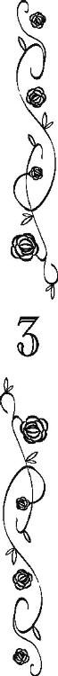
一族の偉大なる〈妖術使い〉エフラムが、スコット・ローズベリー前青伯爵に寄贈した薔薇。
アンに確かめると、それは小竜島にしか自生していないとは言え、青い薔薇とはあまり関係のなさそうな赤みがかった黄色の花をつける一重の貧弱な薔薇だった。
──その薔薇の実。薔薇の種。
スコット・ローズベリーが使った金の流れを追うと、目が回るような額を惜しみなく出して、驚くほど遠い国々から様々な薔薇の苗や肥料などを取り寄せたことが判っている。
そんな男のすることだから、エフラムから小竜島に自生する薔薇を分けてもらったことも、たいした意味はないのかもしれない。
「薔薇を薔薇の種で増やすもんだと思っているとか、あんたもあんたの父親も、本気で青い薔薇を探していたのか？」
椅子にふんぞり返ったまま、午後からアッシュの仕事を手伝いにやってきたサイモンに問うと。
「青い薔薇だって植物には違いないんだから、種くらいあるだろう。薔薇の種を欲しがって、何がおかしい？」
鞄の中から書類を出してアッシュの執務机に積み上げながら、サイモンはムッとした顔で答えた。
「新種の薔薇が咲いても、その薔薇の種で同じ花を咲かせることは難しいんだよ。だから、同じ薔薇を咲かせようと思ったら、芽接ぎと言って、接ぎ木をして増やすやり方をするんだ」
アッシュが薔薇作り初心者向けの説明をしても、サイモンはまだ不満そうに眉根を寄せた。
「そういうものなのか？ しかし、女王陛下は青い薔薇の種に拘られているぞ」
「臣下も陛下も、園芸に疎いというわけか」
そう鼻で笑ってから。
ふと気づいて、アッシュは執務机越しにサイモンを真顔で見上げた。
「女王陛下が青い薔薇の種に拘っているというのは？ 何かあったのか？」
「ああ、まぁ......」
口元を左手で押さえながら、サイモンは視線を泳がせた。
「サイモン？」
重ねて問うと、息苦しそうにサイモンはクラバットを緩めた。
視線は明後日の方向を向いたままだ。
「その、以前......陛下がどこぞの王族や貴族達から求婚され、青い薔薇を持ってきたらという断り文句を言い出された頃、その......某貴族が、見事な青い薔薇の花束を用意して求婚した」
「へっ、えぇええ──。その某貴族って、某白侯爵ってこと？」
サイモンが言いたくなさそうな顔をした理由を即座に当てると、彼は嫌そうな顔をさらに顰めた。
「察しがついたんなら、口にしなくてもいいだろ」
いかにも不満そうな声で、返してから。
「ともかく某貴族が青い薔薇を渡した時に、陛下が『本当の青い薔薇を持ってきて下さったのか、この薔薇の種を頂き、それを育て、青い薔薇が咲くのを見届けてから、花嫁となりましょう』と返されてな。某貴族は退散せざるをえなかったんだ」
それでも、口早に経緯を説明してくれた。
──結局、バカ親切って言うか、バカ素直なんだよね、サイモンってさ。
そう思っても「教えてくれてありがとう！」などとは口が裂けても言うアッシュではない。
「ああ、つまり、その某白侯爵は、絵の具か何かで青く色づけした水を白薔薇に吸わせて、青い薔薇を作ったんだな」
むしろ傷口に塩をすり込んでいる。
「はいはい、閣下のご明察の通り。だから、青い薔薇を欲しがる諸外国の王や国内の貴族達は、花より種を欲しがる」
サイモンももうアッシュのこんな物言いには慣れたようで、書類を分けながらぞんざいに頷いた。
「──」
「......ローズベリー青伯爵閣下？」
黙り込んだアッシュを、サイモンが心配そうな顔で覗き込んでくる。
──まったく。
アンがサイモンの善良さに太鼓判を押した理由が、解った気がする。
一時期本気で殺すつもりになった相手が暗い顔をしているからと言って、本気で心配するバカはなかなかいないと思う。
野心家ではあろうが、所詮大貴族の息子だ。心底悪党になるには、育ちが良過ぎるのだろう。
「ケント白公爵夫人は、スコット・ローズベリーは小さい頃から美しい薔薇を作ることに夢中になっていて、それがいつしか青い薔薇を作る夢になったのだろうと言った」
「......閣下？」
前後の脈絡のない発言に、サイモンは戸惑ったような声をあげたが、アッシュは無視した。
「女王陛下は、理由は解らないが、青い薔薇を欲しがっている。女王陛下が求婚を受け入れるのは、青い薔薇を持ってきた相手だけと公言しているせいで、この国の独身男性貴族と大陸の独身男性王侯貴族は、皆、青い薔薇を探している」
「あ、ああ」
「そして、あんたが言うには、女王陛下は本当は花ではなく、種を欲しがっている」
ちなみに薔薇の実と薔薇の種はほぼ同義である。
「今日、僕が入手した情報によれば、スコット・ローズベリーは、緑竜王国のエフラム王太子が持っていた〈青い薔薇〉を奪い、何年も隠し持っていたらしい」
「............は？」
サイモンは瞠目し、アッシュの顔を二度見した。
「けれど、僕が調べた限り、先代が青い薔薇を咲かせた記録はない。当家に青い薔薇の種もない」
アンがその点は断言したから、間違いない。
「ならば、考えられることは、エフラム王太子の〈青い薔薇〉は、植物の青い薔薇ではなく、宝石だか工芸品だか何か特別な品の渾名みたいなものじゃないか。そして、女王陛下が本当に求めている物も、それじゃないのか？」
「しかし、そうであれば、スコット様はそれを手に入れた時点で、女王陛下に献上しているんじゃないか？」
サイモンに推理の穴を突かれ、アッシュはハッとした。
初めて女王と会話をした時、女王の口ぶりから、スコット・ローズベリーは女王に〈青い薔薇〉の探索を頼まれていたのではないかと思った。
まるで聖杯を探索する異教徒の騎士のように。
エフラム王太子あるいは偉大なる〈妖術使い〉エフラム。
彼から奪った〈青い薔薇〉を、スコット・ローズベリーはどうして女王に献上しなかったのか。
「......つまり、献上しなかったことがばれて、スコット・ローズベリーは陛下の不興を買ったとか？」
アッシュが思いついたのは、それくらいだ。
「その考えはアリだと思うが、だったら、結局その謎の〈青い薔薇〉は誰が、今持っているんだ？」
「それは......結局、コンに訊かないと駄目か」
「コンとは？」
サイモンが到着した時、コンとその弟子達は皆、屋根に上がっていたから、サイモンは彼らに会わなかったらしい。
「屋根を修理している大工。一ぞ......緑竜王国の人間なんだ」
一族と言いかけて、サイモンにも解りやすいようにアッシュは言葉を換えた。
「緑竜王国のって......ひょっとして、異教徒のほうか？」
一神教の福音教徒達から見れば、元々緑竜王国──小竜島──に住んでいた一族が信奉する神々は異教の神だ。
頑として信仰を捨てない彼らを島から追い出し、白竜王国から多くの福音教徒が緑竜王国に入った。
故に現在、緑竜王国に住む者達の多くは、白竜王国から入植してきた福音教徒だ。
彼らは自分達のことを緑竜王国人とは、けして言わない。
連合王国人とか故郷の白竜王国人と名乗ることが多い。
緑竜王国は長らく異教徒達の国だったため、緑竜王国人とばれたら異教徒と間違えられて迫害されるからだ。
だから、サイモンが緑竜王国人イコール異教徒と発想したのは、ぜんぜん不自然なことではない。
──不思議ではない、が。
「それが？」
「気をつけたほうがいい。彼らは何をするか解らない。だいたいちゃんとした貴族の屋敷なら、彼らに大工仕事など頼まない。家の中に入れたら、何を盗まれるか解ったものじゃない」
「ひでぇことを言いなさるナ」
「コン！」
部屋の入り口の所で扉を開けたまま、老人が薄く笑っている。
「白竜王国の女王が緑竜王国民を追い払い、土地を奪うのは悪くないが、緑竜王国民が食うに困って白竜王国民の懐からちっとくすねれば、それは重罪ってわけだナ」
「女王陛下が陛下の威光の届く範囲を広げるのは犯罪ではないが、一個人が盗みを行えば無論犯罪だ」
コンの糾弾に、弁護士らしい詭弁でサイモンは応じる。
「これだから異教徒は」
コンは失笑しながら、ピシャリと己の額を叩く。
福音教徒が一族に差別的に向ける〈異教徒〉という言葉を、一族が福音教徒達への呼称にしたのはいつの時代だったろうか。
──お互いがお互いを〈異教徒〉と呼び合って差別し合うなんて、不毛極まりないな。
今さらながら、アッシュはそんなことを思う。
「屋根は塞いだサ。支払いは期日までにだナ。忘れるんじゃないヨ」
コンはその場で曲芸師のようにトンボを切った。
「！ ロロロ、ローズベリー......青伯爵閣下......！」
「耳元でそんな大きな声を出さなくても聞こえている」
サイモンに摑まれた腕を、煩わしげにアッシュは振り払った。
「き、消えたぞ！」
「目の錯覚だ。トンボ切って、吹き抜けを通って一階の床に降りただけだ」
苦しい言い訳だが、サイモンもあの大工が〈妖術使い〉だと看破するほど一族への知識を持ち合わせていなかったらしい。
「そ、そうなのか......。うん？ そんな変な帰り方をするなんて、何か盗みでもしたんじゃないのか？」
慌てて確かめに行こうとするサイモンの腕を、今度はアッシュがやや乱暴に摑んだ。
一階にコンがいないとか、彼が玄関から出て行った形跡が確認できないとかになれば、さすがにコンの正体を見破るかもしれないと思ったからだ。
それに、アッシュはサイモンに腹を立てていた。
「謝れ」
「は？」
「あんたのおかげで、コンから話を聞く機会を逸したじゃないか」
「え？」
「エフラム殿下の〈青い薔薇〉をスコット・ローズベリーが奪ったという話をしたのは、コンなんだ。まだ、奴から〈青い薔薇〉が何を指すか訊いていないのに」
「あ......」
アッシュの説明にサイモンも事情を納得したようだが、素直に謝るのも業腹らしい。
「しかし、ああいう輩だから、噓を吐い......」
「ああいう輩？」
いつも以上に鋭くなったアッシュの声に、サイモンは言いかけた言葉を飲み込んだ。
「いや、その......異教徒だし」
サイモンの言葉に、アッシュは例の相槌さえ打つ気をなくした。
かつて四色竜諸島は、四色の竜と四種の妖精と天と地の間におわす全ての神々を信じる人達で満ちていた。
けれども、大陸から福音教徒の宣教師と彼らに導かれた大軍がやってきて、長い抗争の末、四色の竜と四種の妖精と天と地の間におわす全ての神々を信じる者達は少数派になり、ついには小竜島の人々だけになった。
そして、それでも福音教徒達は、小竜島の人々の信仰を許さなかった。
異教の神を信奉する者として、小竜島の人々を迫害し、彼らから何を奪っても神のご意志だと豪語した。
土地を失い、流れの民となった者達の一部が生活に困って盗みを働けば、異教徒達は泥棒の集団だとさらに迫害した。
追い詰められ、さらにさらに困窮した彼らは盗む以外に生きる術がなく、盗みの被害が拡大すれば福音教徒達もさらにさらにさらに冷たい目で異教徒を見ないわけにはいかず......悪循環がいつまでも続いている。
その悪循環が生み出した偏見の根深さに、アッシュは溜息を零した。
かなり善良な人間だとアッシュも認めるサイモンでさえ、無条件で異教徒は噓つきで泥棒だと思っている。
──まあ、コンが足の先から頭の天辺まで真っ白な善人だとは、僕も言えないが。
「コンは噓を吐いていない」
一族の人間は、異教徒を相手にしている時は自衛のためにあらゆる噓を吐くが、本来は噓を忌避し、口から発した言葉の真偽に拘る。
何気ない一言でも一族の間では〈聖誓〉と同じくらい重い。
噓であれば死をもって購わねばならないような罪になることさえあるほどに、仲間を欺く虚言の罪は重大なのだ。
そして、コンはアッシュを異教徒とはみなしていない。
つまり、一族であるアッシュに対して、あの場面でわざわざ〈青い薔薇〉なんて単語を持ち出して、コンが一族の忌避する噓をアッシュに吐くわけがない。
また、福音教徒の前で妖術を使ってまで即座に屋敷から出て行ったことを考えると、サイモンの言葉がよほど腹に据えかねたのだと思う。
──僕がアッシュ・ローズベリー青伯爵でいるうちに、コンと接触するのは難しいだろうな......。
「〈青い薔薇〉が何なのか、コンが駄目でも誰か知っている人間がいればいいんだけどな？ 例えば、あんたの父とか」
「俺の父は......普通に植物の青い薔薇だと思っているようだが」
「使えないな」
溜息混じりに言えば、ムッとサイモンの片眉が上がる。
「ならば、グラディス女王陛下本人に当たってみればどうだ？」
アッシュは首を振った。
「自分が求める〈青い薔薇〉が何か、教える気があるならとうに教えているだろう。皆が植物の青い薔薇だと誤解しているのをいいことに、本当に探しているものがなんなのか、あの狸婆、教えずに人にもの探しなんか頼みやがって」
「た、たぬ......────」
女王陛下に対する不敬極まりない単語に、サイモンは目を白黒させた。
「似てるだろ？ 体型といい顔といい」
しれっと言うと、サイモンはアッシュとは反対の方向を向いて空咳を一つ、二つして、その件についてのコメントを誤魔化した。それから。
「......それにしても、リアノン様の一件以来、特に青い薔薇に関しては何の騒動も起こっていないんだろう？ 急にどうしたんだ？」
と、露骨に話を変えた。
白竜王家譜代の白侯爵家の一員としては、口が裂けても女王が狸に似ているとは言えなかったらしい。
「──何も動きがないからこそ、敵の出方が気になる」
一族から招集がかかって、〈アッシュ・ローズベリー青伯爵〉の役を辞めねばならない瀬戸際に来ている......なんて、いくら相手がローズベリー青伯爵家の顧問弁護士でも言えない。
自分が青伯爵役を降りたあと、青い薔薇の件でナッシュが苦労するようなことは避けたい。
数日のうちに、青い薔薇を巡る騒動は収束させたいとアッシュは思った。
そんなアッシュへのサイモンの言葉は。
「青い薔薇より、まずは目の上のたんこぶについての対処を考えているんじゃないかな」
「目の上のたんこぶ？」
今現在の光竜連合王国に、何か火急の用件があっただろうかと、アッシュは首を傾げた。
この半世紀ほど、海を隔てた大陸では、福音教徒達の宗教改革や各国の王侯貴族を襲う批判の嵐が吹き荒れている。
シドニーの故郷ガリアでは、国王一家をはじめ主立った貴族は処刑されたし、北のプルーセン諸国では民衆から突き上げられた国王達がこぞって改革宗派に改宗したという。
かつては大陸中の国を一つにまとめそうなほど勢いがあったイベリア帝国は、エフラムが戦死した〈対至福艦隊戦〉で連合王国に負けて以来、斜陽の一途を辿っている。皇帝の権威が低下している中、改革宗派の台頭で内政も混乱しているという。
その他の国々も内政に手一杯で、とても光竜連合王国に侵略をしかける余裕はない。
翻って光竜連合王国は、グラディス女王（か〈裏女王〉たるケント白公爵夫人）の類い希な善政のおかげで、大陸のゴタゴタの影響はほとんど受けていない。
いや、むしろ貿易に関しては、大陸の争乱を奇貨として、富を増やしているくらいだ。
──一族に対する救済措置の必要性など、女王達は考えてもいないだろうし。
もし、アッシュが連合王国の王ならば一番に乗り出すのが一族の待遇改善だが、異教徒である女王にそれを求めるのは無駄だと解っている。
「今の連合王国で大きな問題となっているのは、女王の後継者問題くらいで、だったら君の父君が真っ先に片付けねばならない課題は、青薔薇を見つけることじゃないのか？」
「いや、だから、真っ先に片付けたいのが、アッシュ・ローズベリー青伯爵閣下だったりするわけで」
「ぁ？ 僕を殺しても、青薔薇の種は手に入らないぞ」
「青薔薇の種の入手云々ではなく......。閣下は、リアノン姫と婚約なさったでしょう」
「それが？」
「ローズベリー青伯爵家は、青竜王国では準王族と言って良い。白竜王国のどの公爵家より古い歴史を持つくらいだ。しかも、現当主は、元々女王の後継者候補の筆頭だった赤公爵家の一人娘と婚約している。〈裏女王〉のたった一人の孫息子で、女王陛下の甥の息子。つまり歴史ある名家の生まれで〈裏女王〉と赤公爵家の後ろ盾がある閣下は、世継ぎのいない連合王国の女王陛下の後継者にいつ指名されてもおかしくないと、俺の父を筆頭に怯える野心家は、それなりにいるようで」
「へっ、えぇええ──────────」
サイモンの懇切丁寧な説明に、いつもの口癖が喉を突いて、アッシュは天井を見上げた。
天井板の向こうに、見えるはずのない星を鮮明に思い浮かべる。
──アッシュ・ローズベリーが、連合王国の王になるだって？
星はそんなことは告げていない。
だから、アッシュは〈アッシュ・ローズベリー青伯爵〉が、女王の次の国王候補に目されているなんて、微塵も考えたことがなかった。
二十歳になるまでに、数多の困難が、彼を襲う。
両親を幼くして失うのも、その一つだ。
祖父母から受け継ぐ財産には、大きな瑕がある。
その瑕を乗り越えられるか、乗り越えられないかは、不特定要因がいくつかあって、アッシュは星が告げる未来の全てを読み切ることができなかった。
──僕の運命は僕の運命で、十四ヵ月と十一日後、どうやら再生したエフラムの父親とやらになるらしい。
あと数ヵ月で子供の父親になると言われたら、初めての男は誰でも狼狽えるものだろうが、花嫁の顔さえ知らないうちにそんなことを宣告されたら、狼狽えるどころの話ではない。
──指くわえて、狼狽えていてもしょうがないし。
ともかく残された期間で可能な限り問題は解決していかねばならない。
「今、君を殺したり、傷つけたりしようと考えているのは、青薔薇が欲しい人より、リアノン様を横取りしたい人達じゃないのか？ 対策を練るならそちらが先ではないかな」
「リアノンの婚約者の命を奪おうとするバカ共をどうにかしないといけないわけか、僕は？」
あの我が儘な姫とアッシュ・ローズベリーが婚約することが、敵を増やすことになるとは。
──婚約は、星の託宣通りだった。だが、それが僕に及ぼす影響は見切れていなかった分、見通しが甘かったか......？
星を仰いでも自身の運命が占えないことが、今さらのようにもどかしい。
「とにかく、身辺には気をつけたほうがいい。──そう言えば、ここの裏庭の薬草園、毒草もあるそうじゃないか」
「なんだ、いきなり？」
話が飛んだことに、アッシュは片眉を上げた。
「その......先日、君とアンが不在の時にナナリー警部がやってきて、薬草園を見ていったらしい」
「ぁ？ そんな話、聞いてないんですがぁああ────？」
「だから、今、報告している！ ......つまり、君に報告しようにも......オリーブも言いにくかったらしくてだな......」
「ふぅううう──ん」
アッシュの揶揄するような視線に、サイモンの顔が赤くなる。
「な、なんだ？」
「いや。執事のアンがいなかったので、オリーブが警部に対応した。そこで尋問された内容が気になったが、僕に直接は言いにくかったので、旦那のあんたに相談したということでいいか？」
アッシュがまとめると、サイモンは照れたような顔で視線を逸らした。
「ご明察の通りだよ。いつ暗殺されても文句が言えない状況で、邸内に毒草を植えているとはいかがなものかと意見されたそうだ」
オリーブがアッシュの頭越しに顧問弁護士に相談したのは、いささか癪に障る。
が、彼女はアッシュのことを嫌っているし、当の弁護士が彼女の（一応）夫である以上、その行動は理解できなくもない。
「毒草と言っても、あれは極少量なら薬になる草だ。それで、アンが懇意の薬師に頼まれて育てているものだし、この僕が自宅栽培の毒草で暗殺されるなんて、警部ともあろう人間が、バカバカしいことを考えるんだな。第一、うちの小心者揃いの使用人に僕に毒を盛る勇気があるわけない」
アッシュがそう言うと、今度はサイモンがニヤニヤと笑った。
「──何か言いたいことでも、サイモン？」
「いや、ここにアンがいたら『私達が悪人に買収されてご主人様を暗殺するようなことはないと、心から信用して下さっているんですね！』と、大いに感動するだろうなと思っただけだ」
「気持ちの悪い口真似はやめろ」
多分、アンなら言うだろう──そう思いつつ、アッシュはサイモンの背中をどついた。
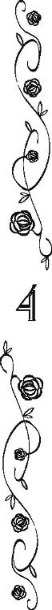
今夜も女王に呼び出され、晩餐会だの舞踏会だの一通り付き合わされたようで、アッシュが帰宅したのは夜半だった。
しかし、アッシュは帳簿の整理をすることにしたらしい。
わざわざ起きて待っていたナッシュは、アッシュが書斎に入ってから寝室に動く様子がないので、大きな溜息を零した。
──ちゃんと寝てるのかなぁ、アッシュ？
孤児院にいた頃も宵っ張りで、ナッシュの看病が必要のない夜は星を観察していた。
それでも村より貴族の暮らしのほうが断然忙しそうで、ナッシュのような持病持ちでないにしてもこんなに寝てなくて大丈夫なのかなと心配になる。
寝室に戻ってきたところを捕まえようと待ち構えていたが、このまま自分も起きているのはつらい。
ナッシュは意を決し、階下の書斎まで降りて、アッシュに声をかけた。
「──アッシュ」
「まだ、起きてたのか？ 早く寝ろ。また、発作を起こしたいのか？」
自分のことを盛大に棚上げにして小言を言うアッシュに、ナッシュは肩を竦めた。
──アッシュって、いつもこうだよね。
母がナッシュのことをくれぐれも頼むと言って亡くなったせいで、アッシュはまるで母親みたいに口うるさい。
「寝るよ。寝る。でも、三分だけ話そうよ。アッシュはいつも忙しいから、この屋敷に来てからなかなか二人では話せないしさ」
「──何か、気になることでもあったのか？」
心配そうな視線を向けられて、ナッシュは「しまった！」と思いつつ、大きく首を振った。
「そういうわけじゃないよ。ただ、その......オレ、このままでいいんじゃないかなと思って」
「このまま？」
青灰色の瞳が、ナッシュには滅多に見せない冷たい光を帯びる。
「だ、だからさ、何もかも上手く行ってるじゃん。アッシュがどんなことでも上手にできるって、オレ、知ってたけど、アッシュってば、これ以上ないくらい立派な青伯爵閣下やってるじゃん。だから、ずっとこのまんまでいいんじゃないかなぁって思うんだ。その......、つまり、最初の計画に拘らなくてもいいってこと。オレは今のままでもぜんぜん気にしないし」
言った途端「バカか」と、小さくアッシュが呟くのが聞こえた。
罵倒されているのにあまり嫌な感じがしないのは、その声が困惑に満ちていたからだろうと思う。
アッシュはいつもそうなのだ。
口は悪魔みたいに悪いけれど、本当はいつも天使みたいに優しい。
自慢じゃないが、特にナッシュには激甘だ。
「気にするだろ。リアノンがいつまでも子供だとでも思ってるのか、ナッシュは？」
「あ......！」
──リアノンのこと、忘れるなんて、オレ、サイテー......。
俯いたナッシュの頭を、ポンポンとアッシュが叩く。
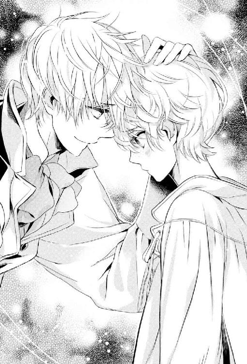
本当の家族にしかできないような優しい仕草で。
「僕はどんなことでも上手くできる。五年後、間違いなくアッシュ・ローズベリーは、リアノンを花嫁に迎える」
「アッシュ......」
未来のことをすでに確定した事実のように、アッシュは言う。
アッシュはなんでもできる。
なんでも上手くできる。
だから、ナッシュには具体的なことは何一つ解らないけれど、きっとアッシュが最初に計画した通り、何もかもが魔法のように上手くいって、何もかもがあるべき所に収まり、アッシュ・ローズベリーはリアノンを花嫁にするのだろう。
──でも、アッシュはどうなるの？
ことを荒立てずに、最初の計画通りに進めることができるのだろうか。
当初の計画では青伯爵家を継いだアッシュ・ローズベリーは王宮になども出入りせず、ひっそりと暮らし、問題が多過ぎる財政状況が改善したら、ナッシュとこっそり入れ替わる予定だった。
──なのに、アッシュ、宮廷でモテモテだし。
前青伯爵スコットは女王陛下にもケント白公爵夫人にも嫌われていて、王宮に招かれることなどなく、社交界から締め出されていた。
だから、表裏両女王とも新青伯爵にも注意を払わないだろうと、アッシュは踏んでいた。
しかし、実際は毎日のように王宮に呼び出され、グラディス女王陛下にも〈裏女王〉と揶揄されるほどの権力者であるケント白公爵夫人にも、アッシュは一目置かれている。
赤公爵が乗り込んできた時、その場を収めるのには良いアイディアだと思った──もちろん、ナッシュ自身が一目でリアノンのことを好きになったのも大きいが──リアノンとの婚約も、さらにアッシュを有名人にしたようだ。
アッシュ・ローズベリーが青みがかった銀髪と青灰色の瞳を持つ長身の少年──ナッシュより五つも年上という実年齢で言えば青年と称してもおかしくない年齢だが──だということは、連合王国中に知れ渡っている。
今となっては人知れず〈アッシュ・ローズベリー〉役をナッシュと交代するなんてできっこないとナッシュは思う。
ローズベリー青伯爵家の執事がナッシュを見つけ出し、書面を寄越した時、アッシュはすぐさま中央王都へ出かけていって、青伯爵家の様々な噂話を仕入れてきた。
莫大な借金があり、爵位を継いでもおそらく借金で首が回らず、一ヵ月もしないうちに債務者監獄行きだろうと。
そうして竜喘息持ちで、すぐに死にかけるナッシュにはローズベリー青伯爵家の借金問題の解決も財政再建も無理だし、監獄に収監されれば即刻死ぬようなものだと、アッシュは言った。
〝だから、しばらくの間、僕が〈アッシュ・ローズベリー青伯爵〉をやるよ〟
ローズベリー青伯爵家の人々が〈アッシュ・ローズベリー〉の顔を知らないのをいいことに、ナッシュも孤児院の院長をしている牧師様も丸め込んだ。
青竜王国には、ローズベリー青伯爵家の血縁者でなくても、ローズベリーを名字とする人々は多い。
そのためナッシュは自分がローズベリー前青伯爵の孫だなんて考えたこともなかった。
ナッシュの父親は、ナッシュが産まれる少し前に亡くなった。
父と駆け落ちした母は、元々孤児だったらしい。
父が亡くなった以上ローズベリー青伯爵家に頼ることもできないと、乳飲み子のナッシュを抱えて無理に無理を重ねたが、とうとう借りていた部屋すら追い出され、途方にくれていた時、アッシュの一族に拾われたそうだ。
滅多に福音教徒を仲間に入れたりしない彼らと母の間でどういう交渉があったのか知らないが、母は〈星見〉達を統べる老婆の世話係となり、一番年若い〈星見〉だったアッシュとナッシュ母子は親しくなった。
それはナッシュとアッシュが同じ〈アッシュ〉という名前だったこともあろうが、ナッシュから見ればとびっきり優しい子供だったアッシュが一族の中で一番福音教徒に偏見がなかったからだと思う。
アッシュとの呼び分けのため、母は己の息子をナッシュと呼んだ。
物心ついた時にはナッシュと呼ばれていたから、自分の名前がアッシュ・ローズベリーだと言われても、正直ナッシュはぴんとこない。
母が亡くなった時、アッシュはナッシュを連れて、一族が旅していたあたりの村の孤児院の扉を叩いた。
〝セシリアに、ナッシュを立派な、そして幸せな福音教徒にするって、約束したから〟
だから、ナッシュは異教徒の集団である一族を出なければいけないと、アッシュは理路整然と説明した。
〝アッシュも一緒？〟
今考えれば愚かだったと思うが、そう尋ねてしまったのは母親を亡くしたばかりで心細かったからだ。
〝一緒だ〟
アッシュは即答してくれた。ナッシュの手をしっかり握って。
〝セシリアに〈聖誓〉したから、ナッシュが立派な福音教徒として幸せになるまで、僕はお前と一緒に居る〟
アッシュは、アッシュ・ローズベリー。
弟分の自分は、ナッシュ・ローズベリー。
一族から離れ、孤児院に入った時から、ずっと、いつでもどこでもそれで通してきたのだ。
血の繫がりなんかなくても、ナッシュにとってアッシュは自慢の兄だった。
ずっとずっとお互いが死ぬまで、それは変わらないはずだった。
──でも、オレと入れ替わったら、アッシュはどうなるんだ？
当初の計画では、アッシュはローズベリー青伯爵家の親族や使用人達から盛大に嫌われてみせると言っていた。
あとで本当の青伯爵になるナッシュが、歓迎して貰えるよう嫌な主人を演じるからと笑っていた。
──けど、そんなのって無理だったよね。
なんでも上手くこなせるアッシュだが、本人が思っているほど器用じゃない。
なんだかんだ言っても、心底他人に冷たくなんてできない。
──ここの屋敷の人達、皆アッシュのこと、おっかないとか口が悪いとか言いつつ、ご主人様としてメチャメチャ認めてるし。
──アンさんなんか、これ以上ないくらいアッシュのこと、崇拝しているし、アッシュだってさ......。
「オレはリアノンちゃんと結婚するとして、アッシュは？ アンさんと結婚するの？」
「ぁ？」
虚を突いてしまったようで、アッシュはこちらを二度見した。
「なんで僕が......ってか、お前......あいつが、女だって知って......？」
「え？」
珍しく言葉を探しながら言うアッシュに、ナッシュは瞬いた。
「あれ？ 皆、知らないの？ ってか、アッシュは知ってたよね？ オリーブさんとかも知ってそうな感じがしたけど？」
「──誰が知ってて、誰が知らないか、僕も完全には把握していない。しかし、まさかナッシュが気づいているとは思わなかった」
「うーんと......」
そこまで驚くことかなぁと思いつつ、そう言えばサイモンさんも時々アンさんとオリーブさんが仲が良すぎるとか愚痴ってたなぁと、思い出す。
ナッシュが大好きなリアノンもアンに夢中で、ナッシュはいつまでも弟分だ（まあ、今後五年以内に下克上するつもりだが）。
リアノンやオリーブの友人が時折屋敷を訪れるけれど、いずれもアンに逢うために訪問している節がある。
「アンさんって、立ち居振る舞いはちょっとエレガント過ぎるけど男性のものだし、話し方も男性だし、肉付きも女性っぽいとは言いにくいよね。だから、オレも最初は騙されていたけど......男性と女性じゃ、ぜんぜん骨格が違うじゃん？」
絵を描くことが天職だと思っているナッシュだが、特に人物を描くのが好きで。
絵のモデルにしたいなと思った人を見る時、ついつい頭の中で服を脱がせるどころか筋肉も脂肪も取り払って、骨になった姿を想定して眺めてしまう。
だから、アッシュに負けないくらい絵になる美少年風の件の執事が女性だと、ナッシュも気づいたのだ。
「......骨格、か......。ナッシュが、天性の絵描きだっての、忘れてた」
「うん。だからさ......」
「だから？」
「だからオレずっとずっとこのままでいいんじゃないかって思うんだよオレは挿絵描きの仕事をしてアッシュは青伯爵の仕事をするアッシュならずっとずっとこのままでも何もかも上手く納めてしまうことができるんじゃないの？」
息継ぎもせず一気に言い切った。
神聖なお祈りのように。
このままアッシュが青伯爵をやりつつ、執事のアンと結ばれるのは難しいことかもしれない。
自分が、青伯爵にならないで赤公爵の姫君であるリアノンと結ばれることも。
それでも、自分が青伯爵になった時のアッシュがどうなるかを考えると、入れ替わらないことが一番いい方法に思える。
ここまで、〈アッシュ・ローズベリー青伯爵〉が有名になった今、下手をすると女王陛下を欺いたとかなんとかアッシュは言われてしまうのではないかと、ナッシュは危惧しているのだ。
「──」
椅子に座っていたアッシュは、ナッシュのその言葉に、今すぐスケッチブックと鉛筆を取りに部屋に戻りたいくらい壮絶に綺麗で、今すぐ自室のベッドでガタガタ震えたいくらい怖い顔を向けてきて。
「──ローズベリー青伯爵家の当主として、天寿を全うするのは、秦皮のアッシュ・ローズベリーだ」
長い沈黙のあとに、そんなことを言った。
──秦皮のアッシュ？
「それって、どういう......？」
「もう寝ろ。睡眠不足のまま考えることなんて、ろくでもないことばかりだ」
「その言葉、そっくりそのまま返すよ、アッシュ」
「......ナッシュ」
「オレはさ、幸せになりたいよ、もちろん。でも、オレだけじゃなくて、アッシュにだってちゃんと幸せになって欲しいんだよ。アッシュが幸せじゃなきゃ、オレは幸せになれないよ」
「ぁ？ 何、意味不明なことを言ってる？ このままずっとこの暮らしが続くなら、僕は盛大に不幸だって、解ってないだろ、ナッシュ？」
「不幸なの？」
「ああ、貧乏なのに、竜喘息のチビは二人もいるし」
「チビじゃないよ」
抗議したが、あっさりスルーされた。
「料理を作るのが死ぬほど好きでしかも才能ありまくりな奴にどうやったら奴が望むだけの道具やら材料やらを調達してやれるのかと悩まないといけないし、同じく裁縫大好き双子とか馬を熱愛するおっさんとかをどうやったら満足させうる物を調達してやれるかとか。夫大好きなのに意固地になってる出戻り娘と、なぜか奥さんにだけは強気に出られない腰抜け男をどうやって元莢に収めるかとか。家の中だけでもてんやわんやなのに、女王は青い薔薇を探せとか言うし、ケント白公爵夫人がどうかすると自分の跡を継がせようと僕に言質を取りにかかるのを躱さないといけないし。〈アッシュ・ローズベリー青伯爵〉を辞められたら、こんなことで悩まなくてもよくなるし」
「......」
本当にしょうがないなぁと、ナッシュは溜息を零した。
アッシュは本当に優しくて、しょうがない。
ローズベリーのお屋敷の人達から盛大に嫌われてやるって宣言したのを、忘れてるんじゃないかと思う。
今から二ヵ月くらい前に、〈聖ブリードの日〉のお祭りがあった。
昔から〈聖ブリードの日〉は、ありとあらゆる雇用主が小作人や使用人達へ功徳を施すことになっている。
そんな使用人達のお祭りの日を前に、アッシュはわざわざ皆から何が欲しいか尋ねていた。
──今の発言って、あの時、皆に聞いた願いを踏まえてのものだよね？
彼らが望んだとおりの物を与えるには、まだまだローズベリー青伯爵家の財力は足りない（もちろん最初遠慮深いベン達は、〈呪われた貧乏伯爵〉たる主に負担をかけない安物をリクエストしたのだが、アッシュときたらキッチリガッチリ追及して、彼らが本当に欲しい物を聞き出していたのだ）。
それでも、〈聖ブリードの日〉当日、アッシュはノラ達にカーテンにする布を選んで、縫うようにとお金を渡していた。
裁縫が大好きだけれども、古着を解いた布からしか縫い物をしたことがない彼女達には、最高の贅沢だったと思う。
料理好きのシドニーに、彼が望むような目の玉が飛び出るほどの高価な調理器具を買い与えはしなかったが、多忙な中アッシュは暇を見てはシドニーを郊外に連れ出し、野草や香草の知識を伝授していた。
その際、ナッシュもアッシュに「シドニーのために図鑑を作るから」と一緒に連れ出され、植物の絵を描かされたのだが、絵が描ければ何でも嬉しいナッシュにも、それはそれは楽しい時間だった。
しかも、できあがったアッシュ特製の植物図鑑──と言っても、ナッシュが植物をスケッチし、裏面にアッシュが効能やら何やらをシドニーの母国語に翻訳した上で手書きした紙を、あり合わせの紐で綴じただけの簡単なものだが──を、シドニーがまるで同じ大きさの金塊を貰ったかのように喜んでくれたので、より嬉しい思い出になったのだ。
維持費が大変だからと、必要な時はケント白公爵夫人から借りるばかりで自家の馬も馬車も持たなかったのに、先日、アッシュは馬を買ってきた。
〝タダみたいな値だったんで、ベンが御者の仕事を忘れないように買ってきた〟
そう口では言っていたけれど、馬好きのベンのためであることはナッシュには──おそらく他の面々にも──バレバレだった。
──超多忙なくせに瀕死の馬を幾晩も徹夜してまで自ら看病したのだから、疑いようなんてないじゃん。
だから、もう十分じゃないかと、ナッシュは思う。
──オレ、世間知らずな子供だけど、普通のご主人様は、使用人の幸せをそんなに一生懸命考えないってことくらいは、知ってるよ。
死んでいく人といくら約束したからって、赤の他人を本当の弟のように面倒を見るなんて、そうそうできることじゃない。
周囲の人間を幸せにするために、折らなくてもいい骨を折る必要はない。
アッシュが口にしたことのどれもこれもが、アッシュが背負わねばならない義務だとはナッシュには思えなかった。
──第一、アッシュなら青伯爵をオレに譲ったあとも、きっと皆のこと心配しているだろうし。
「いくら僕が有能でも、こんなに仕事を山積みされたら、やってられないね。だから」
「ねぇ、アンさんは？」
「ぁ？」
ローズベリー青伯爵家の有能な執事は、〈聖ブリードの日〉を前にアッシュが欲しい物を尋ねたら、言葉を濁すばかりで本心を明かさなかった。
──でも、アンさんが欲しいものって、訊くまでもないと思うんだよね。
ナッシュには、アンの望みを当てるのは、とても簡単なことに思える。
──なんで、アッシュにはそれが解らないんだろう？
なぜ、あんなに他の人達の望みは叶えようとしているくせに、アッシュは彼女の望みを叶えようとしないのだろう？
──なんで、あんなに他の人達の望みは叶えようとしているくせに、アッシュは自分の望みを叶えようとしないのかな？
「アンさんについては、何も悩んでないの？」
だから、ナッシュはそれを尋ねた。
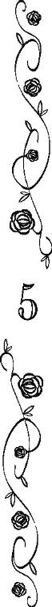
〝アンさんについては、何も悩んでないの？〟
ナッシュが青伯爵の位を継いだ時に、できるかぎり彼の負担が少ないよう帳簿を整理し、入ってきたお金を収入を増やすために適切な場所に投資しておかねばならない。
アッシュがローズベリー青伯爵でいられる期間は、もう幾日残っているか解らないから、睡眠時間を削ってでも仕事は進めねばとアッシュはペンを走らせた。
〝アンさんについては、何も悩んでないの？〟
それなのに、ふとした拍子にナッシュの言葉が頭の中でリフレインする。
〝アンさんについては、何も悩んでないの？〟
悩んでないのと訊かれれば、悩んでいると答えるしかない。ナッシュにはそう返さなかったが。
気がつくと、あの男装の少女のことばかり考えている自分に頭が痛くなる。
「ああ、そもそも答えが出ないから、いつまでも考えないといけなくなるんだ」
と、アッシュは独り言を呟いた。
己の誕生日を知らないアッシュは、自分の未来を〈星見〉できない。
──アンの未来も。
彼女の星を観ることができたら、少しはこの苛立ちも収まっただろうかと、詮もないことを思う。
仮にも〈星見〉の自分ともあろう者が、本当の名前も誕生日も不明な相手に恋するなんて、思いもしなかった。
──だからって、どうしようもないけど。
エフラムを蘇らせるという一族の悲願を成就させるパーツに選ばれた以上、それを拒否することはできない。
福音教徒達の間でこの十年過ごした。
異教徒である一族がどれほど迫害されているか、差別されているか、差別する側から見てきた。
一族が偉大なる〈妖術使い〉エフラムの再来を夢見るのなら、それを手伝わないなんてありえない。
そう考えずにはいられないほど、一族への迫害は激しく、差別は酷いものだった。
そもそもアッシュは、この世界に生まれ落ちた時に一族の希望を打ち砕いている。
再度、一族を失意の海に沈めることはできない。
──アンの大切な〈ローズベリー青伯爵閣下〉であるご主人様は、僕がいなくなってもナッシュが引き継ぐわけだし。
二人とも人好きがする社交的な性格だからか、アンはナッシュと仲が良い。
ナッシュが青伯爵になっても、アンは同じように仕えるだろう。
一族にはアッシュが必要だが、別にアンにはアッシュが必要なわけでもないのだから。
──ただ、僕が青伯爵のうちに女の格好に戻って、女性の仕事をするよう命じるべきか。
一族でも異教徒でも、婦人が男性の格好をして男性の間で立ち居振る舞うようなことは良しとされない。
彼女が今まで男性として無事に過ごせたのは、僥倖だったと思う。
けれど、屋敷が豊かになり、もう少し肉付きが良くなれば、ナッシュのように女性と見破る輩も出てくるだろう。
それならば、今からでも女装（ではないのだが）させたほうがマシなのではないか。
──だが、あんな美形がドレスを着たら、襲って下さいと言わんばかりで危険過ぎる。
と言って、このまま男装を続けさせていいのだろうか。
ぐるぐる思考が螺旋を描く。
──ローズベリー青伯爵を辞めて、顔も知らない女を花嫁にすることが定められた僕が、悩むことでもないか。
答えが出ない悩みに振り回されているのが、バカバカしくなってきた。
自分の人生は、ほどなくローズベリー青伯爵家から切り離される。もちろんあの執事とも。
「ご主人様？」
軽く扉を叩く音に続いて、心配そうな件の執事の声が聞こえた。
──夕べもろくに寝ないで何か仕事してたくせに、まだ起きてたか！
自分のことは棚に上げて、アッシュは盛大に舌打ちした。
「何か？」
「その......今、少しよろしいですか？」
そう言うと、そろりとアンは部屋の中に入ってきた。
──なんで夜中に、男と二人きりになろうと考えるかな、こいつは！
この件についてはみっちり三時間くらい説教を行いたかったが、自分が女だとばれているとは思ってもいなさそうな能天気な相手の顔を見ると、そういう気持ちも萎える。
資料や帳簿を山と積んだ机の向こうに、アンは姿勢正しく立っている。
そして、しばらく逡巡してからアンは口を開いた。
「......コン親方のことですが」
「どうした？」
自分の知らないところで、コンが何か余計なことをアンに言ったのだろうかと、アッシュが身構えると。
「サイモン様に叱られてしまいました。異教徒を軽々しく屋敷に入れるのは良くないと」
しょんぼりとした口調で、アンが言う。
「へっ、えぇえええ────────」
昼間のサイモンとの会話を思えば、いかにも彼はアンにそういう忠告をしそうである。
「で？」
アッシュは立ち上がった。
アンもサイモンと同じようなことを思ったのだろう。
アッシュの知る限り、アンは普通に真面目な福音教徒である。
異教徒は避けたいはずだ。
だから、今後は別の大工を呼ぶという話をしに来たのだろうと予測する。
もし、アンがその種のことを口にしたら、さっさと部屋から閉め出してやると決心し、アッシュはアンのすぐ傍らに移動した。
「あんたもそう思うんだ？」
「いえ。そんなことは」
意に反して、アンは首を横に振った。
「そもそもお仕事がないと、コン親方も弟子の方も困られて、最後の手段でどこかの家に盗みに入られるかも知れません。でも、お仕事があれば、コン親方や弟子の方も盗みを働いたりしなくてもよいわけで、その......」
「......何が言いたい？」
遠回しに異教徒を雇いたくないと言いたいのだろうか。
「はい。これからも、大工仕事が必要になって、親方に払う賃金分の余裕が当家にある時は、親方をお呼びしてもよろしいでしょうか？」
「！」
思いがけない言葉にアッシュは瞬いた。
「あ、あのっ」
思わずアンの顔を真正面から凝視したせいか、彼女は困ったような表情で視線を落とした。
「今日、久しぶりに親方にも弟子の方にも会ったんですけど、皆さん、最後にお会いした時より少し瘦せていらして。お聞きしたら、以前より異教徒に厳しいお家が増えたみたいで、お仕事が少なくなっているという話で。サイモン様の仰ることも解るのですが、でも、コン親方も弟子の方も立派な職人さんで、盗みなどなさるような方々ではないですし、ご主人様がどうしても不安だと言われるなら、私がずっと傍について彼らが変なことをしていないという証人になりますので！」
「──っ！」
「だから、あの、親方をこれからも──ご、ご主人様？」
反射的に抱きつきかけて。
途中で我に返ったため、片腕だけがアンの首に回った。
抱きついては駄目だと思いつつ、中途半端に首に回した腕を下ろすこともできない。
──どんだけ真っ直ぐなんだよ......！
思えば初めて逢った時から、彼女はそうだった。
他者に対して、どんな偏見もなく、悪意もない。
──どうしたらこんなに真っ直ぐに、降り注ぐ陽光のように、分け隔てなく、曇りなく世界を見ることができるんだよ......？
故郷を追われた一族は、どこの土地へ行っても余所者だった。
数多の福音教徒達の間で、圧倒的に少数の一族は異教徒と蔑まれてきた。
その一族の中で、期待はずれのできそこないと邪険にされ続けたアッシュには、居場所が本当にどこにもなかった。
ナッシュはアッシュのことを優しいと言うが、そんなことはない。
──僕は、ぜんぜん優しくない。
ナッシュとその母に拒絶されたら、優しい言葉をかけてくれる人など世界中に一人も居なくなる状況だった。
──だから、媚びただけだ。
あのひたすら優しい異教徒の母子に、ほんの少しでも温かいものを分けて欲しくて、自分はただ媚びただけだ。
そして、自分がナッシュのためにしていることは全て、二人が惜しみなくアッシュに与えてくれたものを返そうとしているだけに過ぎない。
ローズベリー青伯爵家が背負っていた借金の比じゃないくらい、アッシュはナッシュ達母子に返せないほどの恩を感じている。
彼らがいなければ、彼に冷酷なだけの一族の中でアッシュは息さえもできず、死に絶えていただろう。
もうずっとずっと前に、その名の通り灰となって、消えていただろう。
──だから、僕がナッシュに甘いのは、優しい性格だからじゃない。
ナッシュが言う自分の優しさは、月光と同じ。
ただ、陽光を反射しているだけに過ぎない。
相手に何かをしてもらったから、優しくなる。
相手に何かをしてもらうことを期待するから、優しくなる。
そんな風に誰だって誰かに優しくする時、損得勘定が働くものだと思う。
──けれど、コンに優しくしたからって、アンに何の得がある？
何もない。
何もなくても、アンは他人に優しくできる。
いつでも、誰にでも。
──たとえ相手が異教徒であろうと。
そのアンの陽光のような真っ直ぐさがアッシュには疎ましく、そして、太陽を直接仰いだかのごとく眩い......。
「......あの？ ご主人様？ 大丈夫ですか？ 眩暈ですか？ それとも頭痛ですか？ お医者様をお呼びしたほうがよろしいですか？」
「....................................」
アッシュは、無意識に奥歯を嚙み締めた。
言われてみると、とても頭が痛い。
──ああ、頭がイタい。
イタ過ぎると、思う。
思うとも。
本来、女性に──当人にその自覚があるか怪しいにしろ、だ──衝動的に抱きつきかけたのだから、大声で非難されても文句は言えない。
が。
──その反応はなんなのだと、襟首摑んで百万回でも問いただしたいんですがぁああ!!
怒鳴りたいのを我慢したため、奥歯がきしんだ。きしみまくった。
「ご主人様、大丈夫ですか？ 意識はおありですか？ あの、ご主人様？」
己の肩口に額を当てたまま押し黙ったアッシュに、アンの声は焦りまくり心配しまくりである。
「......」
アッシュは泣きたいのか、笑いたいのかよく解らなくなった。
非難めいた響きが、ほんの少したりともその声にないのが、彼女らしいと言えば、とても彼女らしい。
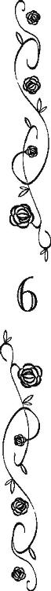
「認めたくないが、僕はあんたに惚れてる」
と、ご主人様に言われた瞬間、アンは我が耳を疑った。
ご主人様の発言が、あまりにも想定外過ぎたからである。
アンの自慢のご主人様は、そんな発言をするような方ではないし、そもそも自分とご主人様もそんな関係ではない。
なのでアンは、まず第一に己の肩口に額を当てている主の様子を、そっと窺った。
──ああ、やっぱり！
「............あの」
「な、なんだっ!?」
肩に置かれた腕が硬く緊張したのが、アンにも解った。
「ご主人様、熱があられるのではないでしょうか？ 顔も、いつもより赤いようですし......」
「────」
沈黙が落ちた。
ここでご主人様の得意技の「へっ、えぇええ────」が返ってこなかったので、アンは逆に狼狽えた。
やっぱりご主人様、体調が悪いのでしょうか？ どうしましょう、お医者様を呼びに行かなくては。いえいえ、まずは祖母君であられるケント白公爵夫人に連絡をして、ご主人様を任せられるような信頼できるお医者様を紹介して頂かなくては！ ──とかなんとか、アンが動転しつつ考えを巡らせていると。
「あんたって、そういう奴だよな、解ってたけどっ！」
こめかみあたりを押さえて、アンのご主人様は溜息を吐かれた。
「人が真面目に告白しているのに、熱でもあるのかとかさぁああ！」
「......あ、あの......？」
言いかけて、アンは躊躇した。
耳を素通りし掛かった言葉が、遅ればせながら胸に引っかかったからである。
──まじめにこくはく？
こくはく？
──告白って......？
〝認めたくないが、僕はあんたに惚れてる〟
時差があった。二十三秒ほど。
先ほど言われた台詞の意味が、キッチリとアンの頭ではなく胸の底に落ちるまで。
そして、その意味が本当に理解できた瞬間、アンは顔から指の先まで真っ赤になって硬直した。
つい三十秒前まで『体調不良により倒れかかったご主人様を支える執事』という認識だったこの状況が、アンの中で勢いよくやばい方向に振り切れる。
「......あ、あのっ！ ご主人様っ！ 私はっ！ 男ですからっ！ ええっ！ そのっ！ だからっ！ つまりっ！」
ほとんど反射で主の両肩を両手で押して、互いの体の接触面を減らしながら動揺のあまり意味不明なことを言う。
──どどど、どうしましょう？
脳内で各種警報が激しく鳴り響いている。
──ご主人様が、同性愛者になってしまわれたのだとしたら!?
そんなことになったら、大変である。
大問題である。
由々しき事態である。
今現在、スコット・ローズベリーの直系男子はアンのご主人様ただお一人しかいない。
彼が真っ当に結婚し、真っ当にお世継ぎを得なければ、青竜王国建国以来連綿と続く名家たるローズベリー青伯爵家は、完全完璧に途絶えてしまう。
お家断絶である。
「だ、駄目です!!」
真夜中だと言うことも忘れて、アンは彼女が目指す真に有能な執事ならけしてあげないような大声を出した。
「ご主人様はローズベリー青伯爵家の当主でいらっしゃるのですから、同性相手にそんな血迷ったことを言ってはいけません！」
肩をがしりと摑んで、僭越ながら説教モードで、アンはご主人様に叫んだ。そして。
「──ぁ？」
睨まれた。
「──い、いいいいえ、あ、あの！ 私が、執事の分際で、ご主人様にこのような説教めいたことを言うのは、ご不快かも知れませんが、その！」
ご主人様がさすがのアンでも焦るくらい怖い表情を向けられたので、アンはワタワタと言い訳を重ねた。
「............あのさぁ、あんたが女だってのは、すでにバレバレなんですけどぉおお──？」
「......え？」
アンは瞬いた。
「............え？」
さっきからずっと耳の調子がおかしいんじゃないかと、アンは自分の聴覚を疑いだした。
「......あ、あの、ご主人様？」
「今さらながら忠告するけど、体を張って他人を庇う時は、胸を庇う相手に押し付けないように」
「ひゃっ！」
執事らしくない奇声を発して、摑んでいたご主人様の肩からアンは万歳の形で両手を離した。
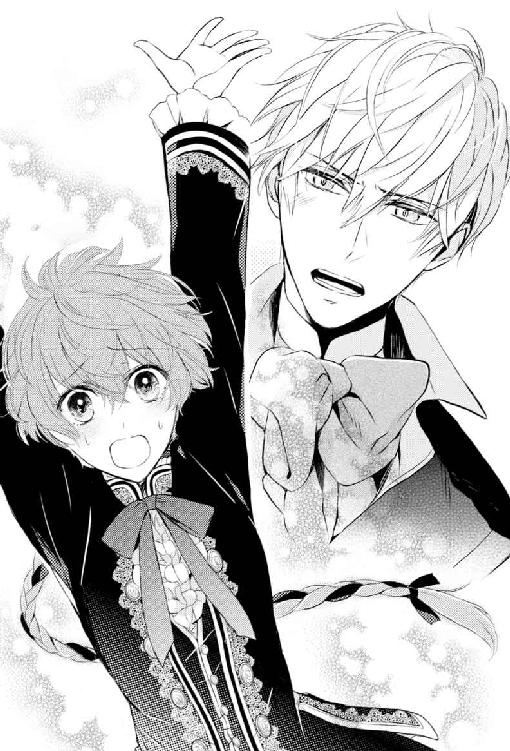
「あ！ あ！ あ！ あ！」
指摘を受けて、主がサイモンに銃口を向けられた際に己が咄嗟に取った所業を思い出すと、もう「あ！」しか出て来ない。
これ以上ないと思うくらい赤くなった顔が、さらに赤くなったのが、自分でも判る。
──母様！
母は正しかった。
老ハワードも正しかった。
オリーブの母親のメアリ様も正しかった。
女の子として貴族の屋敷に仕えることは、危険な目に遭いやすいから、男の子として振る舞いなさいと、大人達は幼いアンに代わる代わる言い含めた。
大人になるにつれて自分の両親のことを理解して、老ハワード達がアンに言ったことの意味もよく解った。
よく解ったと思っていたが。
──ででででも、まさか、ご主人様が私に、えええええっっっ
そんなことは、ありえないのである。
起こってはいけないことなのである。絶対に。
ご主人様が同性愛者になられたほうが、まだマシというものなのだ。
──絶対に、駄目なのに。
こんなこと、起こってはいけない。
絶対に、駄目なのだ。
望んではいけないこと。
頭では解っているのに、気持ちがふわふわしている。嬉しくて。
──嬉しいなんて、思ってはいけないのに。
「......あ、あ、あ、あの、ご、ご主人様には、リアノン様が......」
長い長い時間がかかったが、アンはなんとか「あ」以外の言葉を喉から引き出した。
そう。
そもそもアンのご主人様には、立派な婚約者の姫君がいらっしゃるのだ。
それもほんの数ヵ月前に婚約したばかりの。
可愛くて可憐で、さらに赤公爵の姫君という高貴極まるリアノンが。
──だから、これは、ご主人様の気の迷いです！ ええ、何かの間違いです！
「リアノンと婚約したのは、娘を道具以下だと思ってるあのクソ親父から引き離す方便」
「......え？」
「本人も僕がそういう理由で婚約を持ちかけたのを理解しているし、時期が来たら彼女は自分が選んだ相手と結婚するだろう」
「............え？」
「少なくとも、僕は彼女と結婚するつもりはないし、彼女も僕と結婚するつもりはない」
「で、でも、赤公爵家の姫との結婚は、ご、ご主人様にはとても、ありがたい話で......！」
「僕はリアノンが好きではないし、リアノンも僕のことが大嫌いで、二人とも幸せになれそうにないのに、政略結婚しろと？」
「それは、そのぅ......、あのぅ......、ですから、えぇー......つまり......」
頭の中が、グチャグチャで言葉が出て来ない。
──し、真に優秀な執事ならば、こんな時にどう反応するのでしょうか、老ハワード？
アンの前の十二人の〈ジョージ・ハワード〉達なら、この難問をどう華麗に捌いたのだろうと、半泣きで思う。
アンの前に〈ジョージ・ハワード〉を襲名した十二の執事達（男性）が、ご主人様（男性）に愛の告白をされるなんて目に遭わなかったのは、太陽が東から昇るがごとく明白だったのだが。
「ともかく、駄目です!!」
パニックに陥っていたアンは、子供が癇癪を起こしたかのように叫んでしまった。それこそ執事らしさなど欠片もなく。
「──解った」
そう言うとご主人様は、アンからキッチリ二歩後ずさった。
いつも凍りついた海を思わせる青灰色の瞳が、今日は少し溶けているように見えて、アンの心臓は壊れそうなほど激しく動く。
「あんたにとって大事なのは、あくまでローズベリー青伯爵家の当主で、僕という人間が大事だったわけじゃないんだよな」
「そ、それは......、いえ、あの......」
こんな時、優秀な執事なら、なんと答えるのだろう？
「──最初から解っていたのに、あんたがあまりにも当家のご主人様を大切にするから、勘違いした」
今までに見たこともないような儚げな表情をした主を見て、アンの顔からも血の気が引いた。
自分はただの執事でしかないと解っているのに、ご主人様を抱き締めたくなって、必死で両手を握り締めた。
ご主人様へと駆け出さないよう、両足を踏ん張った。
──だって、だって、私は......私は、ただの執事ですから！
「──悪かった。さっきの言葉は忘れてくれ」
そう言って、部屋から出て行くご主人様を、アンは怖くて振り返ることもできなかった。
「......アン？」
誰も居なくなった部屋にどれくらいいたのか。
床にへたりこんでいたアンの肩を、背後からオリーブが抱いた。
「大丈夫？」
「あ、はい」
反射的に答えて、自分を覗き込むオリーブがとても心配そうな顔をしていることに気づいた。
「オリーブ様？」
「......あのねぇ、あたくし、一応、腐っても青伯爵令嬢でしょう？」
どこから話したらいいのか迷っている風に、胸の前で腕を組んだオリーブは言った。
「もちろんです！ オリーブ様は先代スコット様の姪御様でいらっしゃいますから！」
──青い薔薇のことで、トマス様とスコット様が争われるようなことがなければ。
何事もなければ、彼女の父トマスか彼女の兄キアヌスがローズベリー青伯爵位を継ぎ、アッシュ・ローズベリーが青伯爵家に迎えられることはなかったのである。
──そう言えば、青い薔薇を狙っていた人達はどうなったのでしょうか。
最近、青伯爵家の財政再建に奔走する主を支えて、アンも忙しかったのですっかりこの件については忘れていた。
老ハワードのほうにも、何事も起こっていないようですが──などと考えてしまうのは、今夜起こった出来事のことを考えないようにとの逃避だと、アンも自覚はしていた。
「うん。そうなの。だからね」
言いながら、オリーブは右眉の辺りに手をやり、溜息を零した。
「はい」
「育ちが良い人間なので、夜中に大きな声を出されると、起きてしまうわけなのよ」
「はい。............えっ？」
ほとんど反射で返事してから、アンは隣に跪いているオリーブを二度見した。
「あたくしの寝室、この部屋の隣でしょう。しかも、この部屋、窓が開けっ放しだったから、隣室のバルコニーでは会話が筒抜けになるのよね」
「えっ？ あのっ？ では、そのっ！ つまり、あのぅ......」
どこからどこまで聞かれたのだろうかと、アンは激しく焦った。
「あたくしは、けしてローズベリー卿を好きにはなれないけれども、彼が本気でアンのことを好きなのは、間違いないと思うの」
「そ、そんなことはありません！」
真っ青になって、アンはオリーブに反論した。
そんなアンの反応に、オリーブは小首を傾げた。
そのオリーブの反応に、アンもハッと我に返った。
──ご主人様の従妹叔母に当たる方に、執事の分際でなんてことを......！
「も、申し訳ございません、オリーブ様。立場を弁えず、取り乱してしまいました」
立ち上がって深々と頭を下げると、アンはその場を逃げるように去ろうとした。
が、その腕をオリーブに摑まれる。
「待って。まだ、話は終わってないわ。当代のローズベリー卿は、間違いなくあなたに恋しているわ。本人が告白したのを、あたくし、ちゃんとこの耳で聞いたって、裁判所の証言台にだって立てるわよ」
と、オリーブは弁護士の奥方らしい諧謔を口にして、深刻な顔をしているアンに微笑みかけた。
「そ、それは......ご主人様の気の迷いです！」
摑まれた腕を使用人という立場上振り払うこともできず、アンは泣きそうな顔で反論した。
「ご主人様は、何か勘違いなさっているんです！ わ、私はただの執事ですから！」
ただの執事。使用人とご主人様。その関係は、どこまでも平行線。けして交わることも、一定以上近づくこともない。
──そして、離れることもない。
つかず離れず、ただ、傍に居られる関係。
死ぬ最後の一瞬まで彼を、ただただご主人様と仰ぎたかったのに。
「......でも、女の子だわ」
オリーブが真っ直ぐにアンを見上げて言う。
「わ、私は......！」
──どうして、女の子なんかに、生まれてしまったのだろう？
オリーブは前からアンが女の子だということを知っていた。
アンがこの屋敷に来た時、彼女を男の子として育てようと言ったのは、オリーブの母親が最初だった。
〝女の子として育てたら、セシリアとヒースの二の舞になる可能性がありますわ〟
彼女はアンと年の近い長男キアヌスのことを心配していたのだ。
前青伯爵スコットとその弟トマス夫妻、それから老ハワードとオリーブ。
アンが女の子であることを知っているのは、その五人だけだった。
アンは男の子として扱われることに、まったく異論はなかった。むしろ、男の子として扱われることを喜んだ。
従者の仕事も、執事の見習いの仕事も楽しかったし、やりがいがあった。
青伯爵家の人々は皆いい人達ばかりで、この歴史ある名家の使用人であることが嬉しかった。
年老いて、足腰が動かなくなるまで、青伯爵家のために働こうと決めていた。
この素敵な人達の愛情も信頼も裏切り、捨ててしまった両親の分まで。
──女の子じゃなきゃ、良かった。
そうしたら、こんなややこしい状況に陥らずに、ただの執事として、ずっとご主人様に仕えていられたのに。
「......ご主人様の信頼を、裏切ってしまいました......」
今夜、最後に見た主の傷ついた表情が、胸に痛い。
「別にローズベリー卿は、アンが男じゃなかったからって、怒ってないと思うわよ？」
「そうじゃないんです」
オリーブの言葉に、アンは力なく首を振った。
「そうじゃないんです、オリーブ様。私はローズベリー青伯爵家の執事です。当家のご主人様に忠義をもって仕えるのは当然のことです。ご主人様を敬愛し、大切にするのも当たり前のことです。でも......！」
〝あんたにとって大事なのは、あくまでローズベリー青伯爵家の当主で、僕という人間が大事だったわけじゃないんだよな〟
──そんなことないです！
本当は、そう言いたかった。
アッシュ・ローズベリーという一個の人間が、大事だと。
たとえ彼がローズベリー青伯爵でなかろうとも、大切だと。
──たとえ、ご主人様が。
言えなかった言葉が、胸の淵に沈めていた思いが、堰を切って溢れそうになる。
──でも、こんな気持ちは、間違いです！
自分は、執事だから。ただの執事だから。
呪文のように何度も心の中で呟く。
自分はただの使用人だと。
「......ねぇ、アン」
オリーブは立ち上がって、手を伸ばすとアンの額を撫でた。
ずいぶん前に身長差は逆転してしまったが、この屋敷に来た頃から、オリーブはアンを本当の妹か弟のように可愛がってくれた。
「確かに、アンは孤児で今の身分は使用人だけれど、それでも青伯爵夫人になるのに、それほどたくさんの問題はないと思うわ。アンがどれだけ素敵な女の子か、ローズベリー卿はもちろん、あたくしもサイモンもケント白公爵夫人も......皆、解ってるもの。自分が貴族じゃないことを気にしているのなら、形だけでも、サイモンの親戚の養女にして貰えればいいのよ。我が家は〈呪われた貧乏伯爵〉と揶揄されているんですもの。家柄だの細かいことを気にする親戚も、もういやしないわ。リアノン様のことだって、リアノン様から婚約を破棄したことにすればいいの。だから」
「違うんです、オリーブ様」
オリーブの優しい言葉を、アンは遮った。
これ以上、オリーブの言葉を聞いていたら、誘惑に負けてしまいそうで怖い。
「え？」
「私は、ローズベリー青伯爵夫人にはなれません」
「どうして？ アンだって、ローズベリー卿のこと」
「私は......！」
我慢していた涙が、ついに零れ落ちた。
「私は、ローズベリー青伯爵夫人にはなれません」
それは、天と地がひっくり返っても、自分が望んではいけないことなのだ。
「そんなことないわ」
頰を撫で、涙を拭ってくれるオリーブの手の温かさが、アンには今は逆につらい。
「メアリ様......オリーブ様のお母様は、私の母と仲が良かったそうです。こちらの屋敷に嫁いで来られてから、ずっと私の母はメアリ様付きの侍女として、とてもよくしてもらって。......父が亡くなって、弟が産まれて。幼い子供を二人も抱えた母は、メアリ様を頼って、この屋敷をこっそり訪れました。そうしたら、メアリ様は私だけなら、従者見習いとして引き取ってもよいと仰ったのです。弟は......ローズベリー青伯爵の正当な後継者だから、トマス様やキアヌス様の地位を脅かすから、引き取ることはできないと」
「......アン......？」
母親からアンが女の子であることは聞かされていても、アンが誰の娘かは知らされていなかったらしい。
アンの話の行き着く先を理解したらしいオリーブの瞳が大きく大きく見開かれる。
「私の父の名は、ヒース・ローズベリー。母の名はセシリア・ローズベリー。そして、私の本当の名前は、アンジェリカ・ローズベリー。ご主人様は......アッシュ・ローズベリーは、私の弟です。弟なんです......！」
長らく生き別れになっていた弟から告白されても、姉としては応えようがない。
こういう時に告白して、どうするつもりだったのかと、己に問いたい。
──もし、アンが僕自身のことを好きだと返してくれたなら。
そうしたら、手に手を取って全てを投げ出して、二人で逃げただろうか。
遠い昔、ヒース・ローズベリーが侍女のセシリアと駆け落ちしたように。
「......振られて正解か」
もし、アンがアッシュの気持ちを受け入れてくれたとしても、アッシュには一族の定めがある。
自分には、アンを選ぶ権利はない。
いや、アンに選ばれる権利がない。
偉大なる〈妖術使い〉エフラムの再来を望む一族の悲願を打ち捨てることは、一族の人間に生まれた以上、自分には絶対できないことなのだから。
「──」
生者が強く乞い、心の底から願い招けば、神々は死者を赤子として再びこの世に生まれ変わらせてくれる。
福音教徒達には鼻で笑われそうだが、少なくとも一族ではそう信じられている。
だから、死んでしまった偉大なる〈妖術使い〉エフラムを生まれ変わらせるために、〈星見〉達は星々の動きを見て、より良き刻を選んだ。
一族に僅かに残っていた〈妖術使い〉達は、それぞれの〈風〉〈地〉〈水〉〈火〉の妖精達に力を乞うて幾重にも妖術を巡らした。
そうして、ありとあらゆる術を用い、星を仰ぎ、これが神々の定めだと、アッシュの母を彼女が生まれ育った屋敷から掠い、エフラムの甥に娶せ、子を宿らせたのだ。
偉大なる偉大なる長が、再びこの世界に生まれてくることを、ただただ乞い願って。
──そして、失敗した。
それほどの準備をしたのに、世界のあちらこちらに散った一族が一人残らず祈ったのに、生まれてきた子供は、エフラムの生まれ変わりどころか、彼の万分の一、いや一欠片の妖術の才もなかった。
〝お前は、〈灰〉ね。何の役にも立たない。何もかも燃え尽きたあとの〈灰〉だわ〟
赤子の自分にそんな呪詛を放った母のことを──一般的な母親としてはどうかと思うが──アッシュは恨む気にはなれない。
一族の都合で、生まれ育った家から掠われるわ、顔も知らぬ男の妻とされるわ、難産で死にかけるわした挙げ句、その子供が期待はずれの役立たずだったと言われたら、どんな心優しい聖女でも呪いの言葉の一つや二つ、吐きたくなるだろうと思う。
偉大なる〈妖術使い〉エフラムが転生し、再び一族の元に戻ってくることを願って、策略を巡らし、母の運命を撓めた父や一族の者達への憎しみもない。
あるとすれば、そこまで一族を追い詰めた異教徒達への怒りだが、異教徒には異教徒の信仰があり、都合があることも、子供の頃から幼いなりにアッシュは理解していた。
期待はずれの役立たず。
母親にとっても父親にとっても。
一族の誰にとっても、お前は何もかも燃え尽きたあとの灰。
生まれ落ちたその日から、幾度となく自分に投げつけられた言葉を、アッシュは淡々と受け止め続けた。
それ以外に、何が幼い子供にできただろう？
せめて〈星見〉として一族の役に立てと、アッシュは〈星見〉達に預けられたが、〈星見〉達は〈星見〉達で、自信満々でエフラムの再来が叶うと出した託宣をアッシュに覆されたことを恨んでいた。
その上、両親をはじめ一族の誰もが、アッシュの母が次に産む子に期待し、エフラムのできそこないのアッシュには、愛情どころか一欠片の関心も持っていないことを〈星見〉達は知っていた。
故に遠慮無く、彼らはアッシュを苛んだ。
幼児のアッシュに大人と同じだけの作業量を課し、こなせなければ、それを理由に馬か牛のように鞭で打った。
食事を抜かれることも、十分な睡眠を与えられないことも、日常茶飯事だった。
そんな風に幼少期からありえないほど厳しく〈星見〉の知識を詰め込まれたことが、長じてとてもアッシュの役に立ってはいる。
それでも、酷い子供時代だったことは、誰にも否定できないだろう。
〝エフラム様が素晴らしい方だったというのは知っているわ。でも、知ってる？ 四色の竜の伝説に出てくる世界樹は、〈秦皮〉の樹なのよ？〟
一族の大人からも子供からも、本当に誰も彼もから嫌われていたアッシュに、偉大な〈妖術使い〉エフラムを知らない異教徒の彼女は優しく、温かく微笑んだ。
〝全ての生き物のために自分を差し出した〈秦皮〉の樹。その樹と同じ名前のあなたが、ただの〈灰〉なわけがないわ〟
一族の伝説では、四色竜諸島は、四色の竜達が太古の神々と妖精を信奉する人々を守るため、西の海に身を沈めて創った島だ。
彼らが西の海に向かう寸前、一人の〈妖術使い〉が、なぜ自身の命を人々にくれるのかと問うたと伝説は言う。
その問いに、四色の竜達は答えた。
『古き世界が壊れ、神々が新しい世界を創り直すための器を欲した時、他の誰もが尻込みする中、秦皮の樹だけが名乗り出た』
『我らにはその時、この世界の苗床になる勇気がなかったのに、ただの樹木に過ぎない秦皮の樹にはあったのだ』
『遠い昔、この世界を創るために、古き神々と妖精達と人々のために、秦皮の樹は己の命を捧げた』
『あの時、世界樹となった秦皮の樹の勇気と優しさに報いるために、彼の体から生み出されたそなた達を守る地となろう』
しかし、竜達が己の永遠の命を海に投じて創った古き神々を信奉する人々の楽園は、今やすっかり福音教徒達に踏み荒らされている。
〝──あんたは、異教徒なのに、一族の伝説を信じるんだ？〟
どこまでも可愛げのないアッシュの反応に、彼女は辛抱強く、微笑みを返した。
〝これは、一族だけの伝説ではないわ。四色竜諸島に伝わる古い伝説よ〟
異教徒達の伝説では、四色の竜はどういう理由で島を創ったことになっているのだろうか。
咄嗟にそれを尋ねたく思ったが、素直に尋ねるにはその頃からアッシュには子供らしさが欠けていた。
アッシュが黙っていると、彼女は言葉を続けた。
〝あなたはとても賢くて優しいから、きっと、たくさんの人を幸福にするわ。〈世界樹〉のように〟
〝──僕が？〟
鼻先で笑おうとして、アッシュは失敗した。
〝──僕が、賢い？ 僕が、優しい？〟
バカみたいに、彼女の言葉を繰り返した。もう一度、彼女の口から同じ言葉を聞きたくて。
生まれてこのかたアッシュは、賢いとも優しいとも、言われたためしがなかった。
不幸の源、災いの元凶。
そう罵られることが日常だった。
それなのに、彼女はアッシュがうんと小さい子供のようにその灰のように白い髪を撫でて言ってくれた。
〝ええ、あなたは〈灰〉ではなく、〈世界樹〉ですもの〟
その瞬間。
世界中の誰に嫌われても、いいと思った。
父親に否定され、母親に憎まれても、一族の一人残らず全員から期待はずれと罵られても、それでも構わないと思った。
──彼女が、僕のことを〈灰〉だと思わないのならば。
この世でたった一人、彼女だけでも、自分を灰のように無価値な存在だと思わないでいてくれるならば。
たとえ世界中の人に嫌われても、それでいいと、その時、アッシュは思った。
──あの頃は、本当にセシリアとナッシュさえ僕のことを好きなら、他はどうでも良かった。
いや、どうでもいいと思って、ずっと生きてきた。
──なのに、今は違う。
アンに嫌われたくない。
そう思っている。
初めて逢った時から、一生懸命嫌われるように振る舞っておいて、我ながらかなり虫がいいと思う。
「......そうは言っても、アンが僕であれ、他の誰であれ、誰かを嫌うところなど想像もつかないけど」
自分にさえも聞こえないような小さな声で、アッシュは呟いた。
異教徒のコンでさえ、アンは何の疑問も持たずに受け入れる。
太陽の光のように、彼女はいつでも誰にでも平等だ。
──アンは誰も彼もを受け入れるし、誰にでも優しい。
誰にでも優しいアンが、アッシュにだけはことさら優しいように思えた。
──そう、自惚れていた。
アッシュ・ローズベリーが彼女にとって特別なのは、アッシュ個人に対して何か思い入れがあるからではなく、ローズベリー青伯爵という地位に対してに過ぎなかったというのに。
〝ご主人様〟
アンがアッシュに向けていた感情など、その一言で説明が付くものだったのだ。
アッシュはそう思いながら屋敷の階段を下った。
そうして、特に目的があったわけでもないが、一階まで降りてしまった。
まだ夜は明けていなかったが、頭を冷やすべきだろうとアッシュは散歩に出かけることにした。
玄関を開け、ケント白公爵夫人の豪邸の前を通り過ぎ、意味もなく中央王都の高級住宅街を歩いていると、こんな早朝だというのに、一ダースほどの警官隊が大通りを横切るのを見つけた。
見るとはなしに眺めていると、彼らもアッシュを見つけたらしく、近寄ってきた。
死神みたいにやせ細った男が先頭にいる。
「中央王都警視庁警部のマーク・ナナリーです。アッシュ・ローズベリー卿でいらっしゃいますか」
アッシュの顔を真正面から見ているくせに、律儀にナナリー警部はアッシュに問うた。
以前、リアノンの死体があると思い込んで屋敷にやってきたことがある警部で、アッシュの顔を知らないはずはないのに、だ。
「僕に何か？」
「ちょうど閣下の屋敷に向かっていたのです」
そう言って、ナナリーは陰気な笑いで口元を綻ばせた。
「昨夜発生しましたグラディス女王陛下暗殺未遂事件の主犯として、あなたを逮捕するために」
「ご機嫌いかが、何もかも燃え尽きたあとの〈灰〉？」
石造りの独房に閉じ込められたアッシュに、鉄格子の外から笑いかける女がいる。
「女王陛下の暗殺を企てるなんて、恐ろしい子ね」
そう口にした女は、艶やかに微笑んでいる。
「僕はそんなことしていない」
「あなたが薬草に詳しいことは、祖母君のケント白公爵夫人がよくご存じだわ。陛下が飲まれる薬草茶の天使の薬草と毒香芹をすり替えるなんて、本当に恐ろしいことを思いついたものね」
天使の薬草と毒香芹は、見た目はよく似た植物だ。
そもそもどちらも芹の仲間で、香芹などの他の野菜と間違って摘まれて、料理に使われてしまう事故も少なくない。
摘んだばかりの毒香芹は微かな腐臭を漂わせるので、薬草に詳しい者はそれで区別をするが、芹の仲間には毒はないのに似た臭いを放つ野菜があるため、粗忽な人間は毒香芹が他の野菜に混じったことに気づかないのだ。
そうして、様々な効能がある天使の薬草はともかく、毒香芹のほうは量にもよるが、誤飲すれば死に至るケースがほとんどである。
「幸い有能な侍女が薬草がすり替えられたことに気がついたから、陛下はご無事だけれど」
そこまで言われれば、誰がどう糸を引いたか、バカでも解る。
「──あんたが王宮に潜り込んでいるとは」
リアノンの侍女を辞めさせてから、相手がどこで何をしているのか、アッシュは確認しなかった。
己で調べるには時間が無く、人を雇って調べるほどの経済的余裕もなかったためである。
「〈灰〉のあなたでさえ、青伯爵になれるのよ。王宮の侍女など造作もないわ」
そう人を小馬鹿にするような表情で笑ってみせてから、女は軽く肩を竦めた。
「──と、言いたいところだけれど、あたくしではないわ。あなたが知っている女よ。だって、あなたがその女に天使の薬草だと偽って毒香芹を渡したんですものね」
新参者の侍女が、女王が口にするものを扱えるほど、いくらなんでも王宮の人事もざるではないのだろう。
だから、彼女自身がこの暗殺未遂事件の証人になったわけではないらしい。
だが、女王に近しい侍女をアッシュ・ローズベリー青伯爵を陥れる証人に仕立て上げるだけの権力者が、この女の後ろにいるということのようだ。
「......〈妖術使い〉のコンから、長が僕を招聘したと聞いたが」
「だから、何かしら？ あなたが女王陛下を毒殺しようとしたことに変わりはない。陛下を毒殺しようだなんて、死刑は免れられないわね」
〝お前は、〈灰〉よ〟
異教徒達が、一族の女達を〈魔女〉と呼ぶのもしょうがない──そう、母親の顔を見る度に思った。
指先一つで男を狂わすことができるほど、蠱惑的で美しい顔と肉体に恵まれた彼女の内面は、燃えるような恨みと憎悪に満ちていた。
〝お前は、〈灰〉よ〟
様々な祈りや願いを込めて名前を付ける普通の親とは違い、彼女は息子に呪いの言葉を吐き、それをそのまま名前にした。
〝お前は、〈灰〉よ〟
灰。
何もかも燃え尽きたあとに残った塵。
風に吹き飛ぶほど軽く、何の役にも立たず、場を汚すだけの存在。
そう告げる彼女の瞳は、自分が幼いうちに焼き殺され、本物の灰にされなかったことが不思議なくらい、憎しみに満ちていた。
「──今、僕を殺したら、いくらエフラム様の娘であるあんただって、ただでは済まないだろうに」
アッシュが指摘すると、二十歳の息子がいるとは思えないほど妖艶な母親は、血のように赤い唇で艶然と微笑んだ。
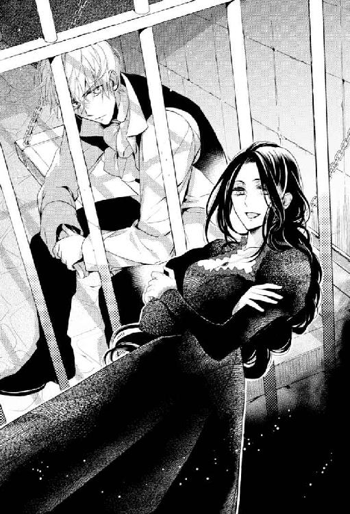
「好きでもない男の、それもこのあたくしを一族の義務だけで妻にするような男の子供を、四度も産まされたわ。女にとって、それ以上に酷いことってあると思う？」
「──僕には、長はあんたに執着しているように見えたけどね」
アッシュの記憶にある限り、父は母を常に傍に置いていた。
「〈エフラム様の娘〉に執着していただけよ。あるいは、生まれ変わったエフラム様の父親になる名誉かしら？ ともかく、あたくしにもう子供が産めないと託宣が下れば、どこにでも好きな所へ行けばいいと放り出す程度の執着だったわ」
「──」
本当は母は父のことが好きだったのだろうか──と、昨日までなら思いもしなかったようなことを、アッシュは思った。
偉大なるエフラム様の娘として、父に崇め奉られた母。
忠誠を誓う青伯爵家の当主として、アンに崇め奉られた自分。
──ひょっとして、母子して似たような人生を歩んでいるのか、自分達は。
「もう一度、同じことをするんですって？」
アッシュが思ったことと相似したことを、母は口にした。そして。
「バカじゃないの、あの男。死んだ人間を生き返らせるなんて、できるわけないのに」
その声に潜む激しい怒りに、アッシュは母親の顔を見返した。
美しい、美しい女性。
もしも、アッシュが普通の子供で、母も普通の母親ならば、アッシュは己の母親の美貌を誇らしく思っただろう。
だが......今、彼女の美貌に痛々しさしか感じない。
「──」
エフラムを産むと運命づけられた自分の花嫁も、いつかこんな顔を我が子に向けるのだろうか。
「さようなら、何もかも燃え尽きたあとの〈灰〉。今度こそ間違いなくお前は、その名の通り灰になるわね」
これ以上ないくらい綺麗な微笑みを見せて、それから母はアッシュに背を向け、独房の前から立ち去った。
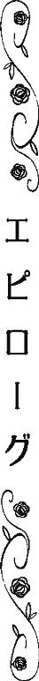
中央王都から北へ馬で一日半。
白竜王国と青竜王国の国境沿い、西の海岸線から船を出せば、丸一日で小竜島──緑竜王国──に辿り着ける。
そんな場所が、初代ローズベリー青伯爵が、同じく初代青竜王国の王から授けられた領地だった。
なだらかな丘の上に陽光を燦々と受けるように建てられたガラス張りの温室。
その中で一人作業をしていた老人は、唐突に体を横に傾けた。
半瞬遅れて、温室のガラスが銃弾によって割れる。
「死にたくないなら、出て来なさい」
一瞬前まで確かに剪定ばさみを持っていた老人は、今、銃弾が飛んできた方向に拳銃を構え、静かに命じた。
殺されかかったというのに、顔色一つ変えていない。
老人の命令に、温室の入り口の向こう、まばらな木立の影から一人の青年が姿を現した。
可もなく、不可もない、全体的に彫りの薄い顔立ちだ。
体つきはいくぶん瘦せているが、それが個性になるほど極端には瘦せていない。
ありふれた茶色い髪と瞳であることもあいまって、どこにでもいそうな典型的な貴族の青年として、中央王都で見かけても一瞬で忘れられそうなほど特徴がない。ただ。
「......やはり、スコット伯父様でしたね」
銃口を向けたまま微笑む口元に醸し出される蛇のような酷薄さが、一目見たら彼のことをけして忘れさせない。
しかも、世間では死んだと言われている先代のローズベリー青伯爵の名前で、老人を呼んだ。
「スコット伯父様はあの父に簡単に殺されたり、大怪我を負わされるような凡人とは違うと、キアヌスは信じておりましたよ」
自分の名前を一人称に使う青年は、さらに口角を上げた。
世間に流布している話では、一年半ほど前にローズベリー青伯爵邸で当主のスコット・ローズベリーは、弟のトマス・ローズベリーと階段上で口論となり、誤って──実はトマスがスコットを突き落とそうとして、と語る者もいる──二人とも階段から転げ落ちた。
その事故で二人は大怪我を負い、日を置かずトマスは亡くなった。
かろうじて生きてはいたが寝たきりになったスコットの代理としてトマスの息子キアヌスはローズベリー青伯爵家の実権を握ると、すぐさま賭け事で天文学的な借金を作った挙げ句、借金苦からか精神に異常を来し、病院に収容された。
そして、甥に裏切られたスコット・ローズベリーは失意のうちに他界し、その不幸の重なりように人々が〈呪われた貧乏伯爵〉とローズベリー青伯爵家を呼ぶようになった頃と前後して、キアヌスは病院から姿を消した。
......真実が那辺にあるにしろ、世間に流れた話では、そういうことになっている。
そして、キアヌスは気が触れたまま街に出て行き倒れたか、それとも彼に恨みを持つ者に殺されたのか、彼の行方が判らぬまま数ヵ月が過ぎ、ローズベリー青伯爵家の人々も世間も、すっかり彼は死んだものとみなしていたのだ。
「つまり、父に殺されたのは執事のハワードのほうだったのですね？ そして父を殺したのは、スコット伯父様で？」
「──さて？」
老人は拳銃を構えたまま、ゆっくりと口を開いた。
「何の話だか。ぼくはウィリアム・ベーカー。ローズベリー青伯爵の館では、ジョージ・ハワードと呼ばれていました。今は、新しいジョージがいるから、老ハワードと呼ばれています」
「またまた」
青年の方も銃口を老人の頭に据えたまま、笑った。
「そんな説明で、このキアヌスの目は誤魔化されません。確かによく化けていらっしゃる。生前のハワードを知っているキアヌスから見ても、不自然に感じませんよ。でも、スコット伯父様は異教徒どもから教わったとかで変装が得意でいらっしゃいますし。そもそも、背後から撃たれた銃弾を避けるなんて器用なこと、スコット伯父様以外の誰ができましょうか？」
「ローズベリー青伯爵家の執事ジョージ・ハワードなら、できて当然の芸当ですが？」
本気でそう思っているらしい老人の言葉に、キアヌスは無言で肩を竦める。
背後から近づく銃弾を察知して避けるのは、〈ありえない〉のだが、そのありえなさっぷりを先ほど間近で見ている以上、何も言えないようだ。
「──キアヌス様、あなたは正気を失い、病院に入れられたのでは？」
今度は老人が質問者に回った。
「最新情報では、キアヌスは病院から抜け出したあと、マールバラ白公爵に匿われていたそうですよ、スコット伯父様。それから、ご存じなかったかも知れませんが、白公爵閣下の令嬢はキアヌスの婚約者なのです。キアヌスが伯父様の跡を継いで、ローズベリー青伯爵になった暁には、キアヌスはマールバラ白公爵の婿でもあるという、非常に特別な存在になるのです」
一人称代わりに己の名前を使うキアヌス独特の話し方は、その薄気味悪さに拍車をかけている。
「ぼくの名前はウィリアム・ベーカーまたは老ハワードです」
そう訂正を入れてから、老人は独り言めいた言い方で呟いた。
「そして、現在のローズベリー青伯爵家の当主はアッシュ・ローズベリー。次の青伯爵は彼の息子です。キアヌス様の出番はありませんよ」
「さて、そうかなぁ？ そもそもローズベリー青伯爵家を捨てたヒースの息子が、青伯爵家を継ぐのはおかしいとキアヌスは思うんですよね」
「青伯爵家を捨てたのは、キアヌス様も同じでしょう」
「キアヌスは、ヒースと違って捨ててないですよ？ 何、言ってるんですか、スコット伯父様？ ちょっと姿を消したのだって、白公爵閣下に頼まれたからだし」
まるで悪びれない青年の言葉に、何か口の中で老人は呟いた。それから。
「──何もかも〈青い薔薇〉のための、マールバラ白公爵閣下の画策と？ 白公爵閣下も、ずいぶん諦めが悪い方だ」
「連合王国の国王になれるチャンスを、白公爵閣下が諦めるわけがありませんよ。そんなこと、このキアヌスにだって判ります。さあ、〈青い薔薇〉を渡して下さい、スコット伯父様」
キアヌスが、老ハワードの言葉に食いつく。
「ここには、そんなものはありません」
「中央王都の屋敷にないことは、さんざん調べましたので判っています。本家の屋敷になければ、他の所に隠されましたか、スコット伯父様？」
「拳銃を突きつけても無駄です、キアヌス様。あなたはぼくから必要な情報を聞き出すまでは、ぼくのことを殺せないと思っている。だから、最初の銃弾にも殺意が足らなかった。翻ってぼくは、あなたを殺すことに躊躇する理由は一つも無い。──ただの一つもね」
虫も殺さぬような穏やかな笑顔の下に紛れもない殺意を覗かせて、老ハワードを自称する老人は言った。
「殺せない相手と立ち向かっている者と、殺すことに躊躇いのない相手に銃を向けている者のどちらが有利か、あなたはご自身の父親の失敗から学習するべきです」
「......フッ。スコット伯父様が生き延びて、あの父が死んだ理由ですか、それが？」
出し抜けに青年は狂気が滲む仕草で体を二つに折ると、声を上げて笑った。それこそ気が違ったような耳障りな笑い方で。
「──もう、頭来るなァ。あの父は確かに愚弄されるに値する男でしたが、それでもキアヌスには父親なんですよ？」
そう言って、青年は持っていた拳銃を地面に放り投げた。
「はいはい、仰るように〈青い薔薇〉を手に入れるまでは、キアヌスにはスコット伯父様を殺すわけにはいかない理由がありますよ。このままなら、あの父と同様キアヌスは勝てませんね。じゃあ、もう一度、ローズベリー青伯爵家を人質にしますよ。それなら、キアヌスだって負けませんよね？」
「ローズベリー青伯爵家を、人質？」
老人は少し眉を顰めた。
そんな相手に、キアヌスは嬉しそうに笑う。
「実はすでに人質に取っています。現当主、なんで今まで生きていたのかキアヌスには解らないヒースの息子を、女王暗殺未遂犯として捕らえてあるんですよ」
「......女王陛下、暗殺未遂犯......？」
今まで平然としていた老人の顔色が、さすがに変わる。
それを楽しそうに舌なめずりして。
「青伯爵家存続のためには〈青い薔薇〉をマールバラ白公爵閣下に売るしかないとスコット伯父様が思い詰めて下さるよう、キアヌスがせっかく頑張って作った借金を、台無しにしてくれた憎き現当主アッシュ・ローズベリーは、今、女王暗殺未遂犯として処刑されかかっています。本当に女王暗殺未遂犯として処刑されてしまえば、いかなローズベリー青伯爵家でも、連合王国がある限り再興はできないでしょう」
「......」
「でも、〈青い薔薇〉をマールバラ白公爵閣下に渡して下されば、閣下がいかようにも助けて下さいますよ？」
「......」
「さあ、〈青い薔薇〉を、スコット伯父様？ ローズベリー青伯爵家がなくなってしまっても、本当にいいんですか？」
最早、拳銃で相手を脅す必要がなくなった青年は、微笑みながら老人に手を差し出した。
「さあ！」
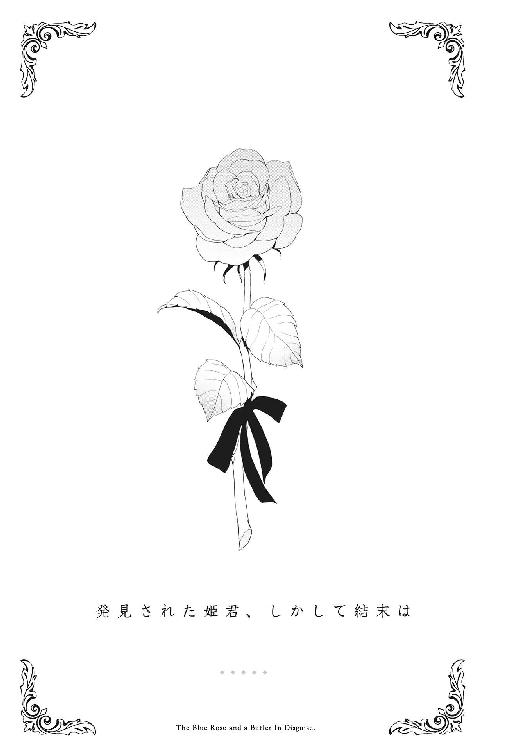
〝──カッコウが自分の子供を自分で育てないのは、カッコウは巣を持たないからなのかしら？〟
その質問をアッシュが彼女から問われたのは、もう十年は昔。
彼女が死ぬ数ヵ月前だったと思う。
〝カッコウにだって塒くらいあるんじゃないの？ あいつらが子供を育てないのは、ただ面倒なだけだよ。──僕の親のように〟
そうすげなく言ったアッシュに、彼女はお伽話を語った。幼い姫が父親に呪われる話を。
〝これは島に伝わる古い古いお伽話なの〟
昔々お妃様を亡くした森の国の王様が、新しいお妃様を迎えました。
しかし間もなく王様は亡くなり、お妃様は継子である王子様に、己を妃にするよう言いました。
王子様は驚き、もちろん断りました。
すると継母は、三年もの間、王子様が蛇になるよう呪いをかけたのです。
蛇に変えられた王子様は森の国のお城から逃げ、三年後、人間に戻ると故郷から遠く離れた海の国で美しいお姫様と結婚しました。
森の国の王子様は海の国の王様となり、妻と子供達と共に幸せに暮らしていました。
しかし、ある日そんな海の国の王様に彼のお妃様は言いました。
「あなたのお継母様に会いに行きましょう。子供達には優しい祖母が必要ですわ」
何度も何度もせがまれて、ついに己のことは一切継母に告げるなと約束して、海の国の王様は妻子だけを森の国のお城へ送ったのです。
海の国のお妃様は約束どおり、王様のことを語りませんでした。なのに、幼いお姫様は継母の口車に乗せられ、父親がどこで彼らを待っているか伝えてしまいました。
すぐに継母は海の国の王様が隠れた方向に向かって、彼が生涯蛇になるよう呪いをかけなおしました。
再び蛇にされた王様は、妻と子供達を見つけると、なぜ継母の元に行くと言い張ったのか、なぜ自分のことを継母に言ってしまったのかと責め立て、妻子に呪いをかけました。
妻には毒蛇になるように、幼い王子様には夜鳴き鳥になるように。
そうして彼の居場所を漏らした幼いお姫様には。
「おまえは巣を持たない鳥になり、自分の子供を育てる権利を得ることはない。おまえの子供達は家なき子になり、孤児のように他者に育てられるのだ」
そんなおぞましい呪いをかけて、海の国の王様は幼い娘をカッコウに変えました。
小さなお姫様は優しい両親と兄を失っただけでなく、己の家を持つことも家族を持つことも叶わない呪いを、実の父親からかけられたのです。
お姫様が将来産む子供は、他人に育てられる運命を実の祖父に背負わされたのです。
幼いお姫様はただ母に連れられ、血の繫がらぬ祖母に会っただけ。
そして狡猾な祖母に騙されてしまっただけ。
それなのに、島のお伽話は言う。
幼いから。
それは過ちの免罪符にはなり得ないと。
〝──うんと小さい頃、自分は、この小さな姫の子供の子供の子供の......そのまた子供なのだと、思っていたの〟
〝ぁ？ むしろその呪いを受けた姫の子孫は、僕達一族なんじゃないの？〟
故郷の島を追われ、定住する家も土地もなく、異教徒と蔑まれながら放浪するしかない。
それはまさしく巣を持たない鳥のような暮らしではないか。
〝一族の人達は、家族を大事にし、子供達をちゃんと自分の手で育てているわ〟
彼女の反論にアッシュは渋々頷いた。
〝......確かに一族は子供を大事にしている〟
国も家もないからこそか、一族はお互いの家族、親族、特に子供に強い愛情を示す。
〝──僕の両親は別だけどね〟
両親が別と言うより、一族全てにとってアッシュが特別と言うべきだろう。
一歳かそこらで、もう擁護が必要でない大人なのだと〈星見〉に判断された。
だから、他の子達のように甘やかされ大事にされたことなどない。
〝エフラム様の娘とその夫君ですもの。しかも、お父様は一族の族長。あなたのご両親は一族の中で一番忙しい方々だわ。そして、あなたには〈星見〉の才能がある。どちらか片方だけの事情なら、あなたは〈星見〉達の元ではなく、ご両親に育てられたはずよ〟
そんな言葉は彼女の優しい噓だと解っていた。それでも信じたいと思ってしまった。
──バカみたいだ。
あんな親でも、心のどこかで自分のことを気に掛けていると信じたくなる己が。
〝......あんた自身は孤児だったかもしれないが、ちゃんと我が子のナッシュを手元で育てているじゃないか〟
正直アッシュはナッシュが羨ましかった。
とてつもなく羨ましかった。彼女が本当の母親だったなら、自分はどれだけ幸せな子供でいられただろうかと、詮のないことを何度も何度も考えるくらいに。
アッシュの指摘に、彼女は泣きそうな顔で微笑んだ。
〝──おまえは巣を持たない鳥になり、自分の子供を育てる権利を得ることはない。おまえの子供達は家なき子になり、孤児のように他者に育てられるのだ〟
そしてアッシュの問いに答えず、彼女はお伽話の王様の言葉を繰り返した。
我が子を呪った可哀相な王の言葉を。
セシリアにはナッシュとは別にもう一人子供がいたことを、アッシュが知るのはそれからずっとずっとあとのことだった。
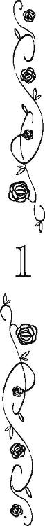
「マールバラ白公爵閣下、キアヌスが〈青い薔薇〉の種を手に入れましたよ」
中央王都のマールバラ白公爵邸。
白竜王国に五つある白公爵家のうち、かつて筆頭公爵家として国王を凌ぐ権力を持っていたのが、マールバラ白公爵家だった。
が、現白公爵はグラディス女王から緑竜王国国王代理を拝命し、普段は小竜島で暮らしていて、権力の中枢から外れた感がある。
このやや流行遅れながらも豪奢な屋敷も主が不在の時が多かったが、今日は在宅だった。
執事の取り次ぎももどかしく書斎に飛び込んできたキアヌスに、窓の外を眺めていた白髪のマールバラ白公爵は胡乱な目を向けた。
「......〈青い薔薇〉の種だと？」
「はい、閣下」
明るい声で話しながらキアヌスは歩を進めた。
「そうそう、やはり老ハワードのふりをして領地の屋敷に引っ込んでいたのは、スコット伯父様でした。あの二人、元から体格やら顔つきやら似ていましたが、なぜ伯父様も自分が亡くなったことにされたのか」
言いつつ、目の前の白公爵をはじめ彼を殺害してでも〈青い薔薇〉を奪おうとする者達の目を眩ませるためだろうと見当はつけていた。
無言で白公爵はキアヌスから手渡された紙包みを開ける。中には、植物の種と思しき物。
「スコット伯父様も、ローズベリー青伯爵家が消滅の危機にあるとなれば、宝を独り占めするわけには......っっ！ か、閣下？」
「愚か者めが！ こんなものが〈青い薔薇〉だと？ 簡単に騙されおって！」
何度も杖で打ち据えられて、キアヌスは無様に床に転がる。
「そ、それは、確かに薔薇の種です。閣下には、見慣れないものかもしれませんが、キアヌスはスコット伯父様の薔薇作りを手伝ったことがあるので、知っているのです」
「薔薇作りだと？ スコット・ローズベリーが本当に青い薔薇を作っていたと思っていたのか？」
「では、スコット伯父様が持つ〈青い薔薇〉とは、何なのですか？」
キアヌスの直球の問いに白公爵は思わずと言わんばかりの表情で、言葉を飲み込んだ。
「......それが解らなければ、お前がローズベリー青伯爵になることは永遠にない」
──おや、まぁ。別にキアヌスは、ローズベリー青伯爵になれなくてもいいんですよ？
もっと高い所に立てるのならば。
──〈青い薔薇〉を手に入れれば、白公爵とてキアヌスを無下には扱えませんよね？
伯父も女王も、そして白公爵も執拗に拘る〈青い薔薇〉。
青い薔薇さえ手に入れれば、女王との結婚が叶うなどと多くの貴族や王族達は思っている。
だが、それがただの植物を意味するものではないらしいことは、白公爵に言われるまでもなくキアヌスも気がついていた。
いや、キアヌスだけでなく彼の父も。
キアヌスの父トマスは、生前〈青い薔薇〉とは白竜王国王家の重大な秘密、それも女王グラディスの王位を覆しかねない醜聞の証拠物ではないかと言っていた。
今現在の彼女が偉大な女王であることを否定する者は、世界中を探してもいそうにない。
しかし、彼女が白竜王国の女王に即位する前、彼女の王位継承権を疑う声が白竜王国内には少なからずあったのだ。
と言うのも、グラディス女王の母レティス妃は、元々は現ケント白公爵夫人の父の妻だった。
ケント白公爵の病没後、ほとんど間を置かず白竜王国国王オリバー五世の妃となり、グラディスは生まれたが、その時期はケント白公爵が父でもおかしくない頃合いだったのだ。
また、オリバー五世は十年も連れ添った王妃エマと離婚するために福音教の教皇と決別し、自らを教皇位と同等の首長であると宣言していた。
光竜連合王国国教会などという反教皇派・改革宗派の教会組織まで立てたのである。
大陸で起こっていた宗教改革に便乗した形だったが、オリバー五世が離婚のために動いたことは見え見えだったため、教皇派はもちろん反教皇派たる改革宗派からも好意的な反応は得られなかった。
加えてレティス妃がグラディスを生んで間もなく亡くなったこと、レティス妃の弟が政争に敗北し妃の一族ごと失脚したこと、王が別の妃を迎えたことなどなどが災いして、グラディスは後ろ盾がなく、父王からも顧みられることが少ない日陰の王女として育った。
レティス妃を父の正妃とは認めなかった前王──オリバー五世から不当に離婚された最初の王妃エマの子だ──オリバー六世が子を残すことなく戦死しなければ、グラディスは女王どころか庶子の王女の地位さえ確保できなかったろう。
グラディスは己が正当な王位継承権を持つ王女であることを主張するために、父王が立てた国教会を支持し、拡大させた。
そのため現在、光竜連合王国の福音教徒は国教会派が主流となっている。
グラディス女王の権勢が揺るぎないものになった今、公の場で彼女の出生時の噂を語る者は皆無となった。
しかし今なお教皇派の福音教徒の中には、グラディスに対する不満がくすぶっている。
──スコット伯父様が女王陛下の出生の疑惑を立証する品を持っていたら？
オリバー五世の血を引いていないことが判明したら、女王の権威は足元から崩れる。
断絶した青竜王国の王家の末裔として、時機を見計らって女王を廃位に追い込み、伯父自らが青竜王国国王いや光竜連合王国の国王になろうとしたのではとキアヌスは疑っている。
──それくらいの野望がなければ、伯父様が犠牲にしたものは大きすぎますよね。
ローズベリー青伯爵家の本家の館で、頑なに老ハワードを名乗る伯父から薔薇の種を手渡された時、九割方の確率で時間稼ぎに渡された偽物だと思った。
それでも素直に受け取って中央王都に戻ってきたのは、白公爵の反応を見るためである。
「つまり、この〈青い薔薇〉の種では、閣下はローズベリー青伯爵家を助ける気にならないと？」
立ち上がりながら、キアヌスは尋ねた。
「畏れ多くも陛下の暗殺を企てるような極悪人とその一族を、なぜ儂が助けねばならぬ？」
「それはその通りですが、マールバラ白公爵閣下ともあろうお方のご令嬢の夫が、大逆の家の人間というのはまずくないでしょうか？ それに、ご存じのとおりローズベリー青伯爵家は、青竜王国王家が断絶した今、随一と言っていいほどの名門で、白竜王国王家よりも古い家柄なんですよ？」
キアヌスが、彼が犠牲にするものの大きさを言い立てると。
「......さて。ローズベリー青伯爵が、女王陛下の薬草茶を毒草茶にすり替えたと儂に告発した男は、誰だったかな？」
「それは閣下が現ローズベリー青伯爵を──ああ、いいえ。もちろんアッシュ・ローズベリーが女王陛下を暗殺しようなどと不届きなことを計画し、それがたまたまこのキアヌスの耳に入っただけでございますよ」
あなたがローズベリー青伯爵を消したいと所望されたので、合法的に奴を消す方法を見つけてあげただけですよ──そう含みを持たせて、キアヌスは口角を上げた。
「──偉大なる女王陛下の忠実なる僕としては当然の仕事をしただけと言いたいのか？」
より高い地位を狙っていても保険は必要だと、キアヌスは予防線を張ることにした。
「さようでございます。しかし、キアヌスはあくまでこのキアヌスが継ぐべきローズベリー青伯爵を僭称している男を告発しただけですよ。そこのところはご理解頂かないと」
「なんだと？ 投獄されたアッシュ・ローズベリーは、ヒース・ローズベリーの息子ではないと、お前は言っているのか!?」
突如、白公爵は目の色を変えた。
「え、ええ、どうもそのようなのです。キアヌスが調べたところによれば、奴が育った孤児院には〈アッシュ・ローズベリー〉という名の子供が二人いたのです」
「なぜ、それを早く言わぬ!? ヒース・ローズベリーの不浄なる血は根絶やしにしなくてはならぬのだぞ！」
その口吻の激しさ、〈不浄なる血〉という穏やかでない言葉に、キアヌスは瞠目した。
マールバラ白公爵は母国白竜王国への愛着が一際強いことで有名だ。
──白竜王国の国粋主義者である閣下が、赤公爵家令嬢と青伯爵家当主夫妻が女王陛下のあとを継ぐという事態を避けようと動くのは理解できます。けれども、ローズベリー青伯爵家の血を根絶やしにではなく、ヒース・ローズベリーの血の根絶を願われるのは......？
一瞬、ローズベリー家の自分を気遣ったのだろうかと考えたが、白公爵はそのように他人、特に目下の者を気遣う人間ではない。
「もう一人のアッシュ・ローズベリーはどこにいるのだ？ 孤児院にまだいるのなら、牢にいるのが偽者だと陛下にばれる前に、殺しにいけ。ただの孤児なら消すのも容易かろう」
「......これはこれは。キアヌスに血の繫がった従弟甥をこの手で殺せと？」
「その子供が居る限り、貴様にローズベリー青伯爵の爵位は回ってこんだろう。貴様にとっても邪魔者ではないか」
「──御意」
「不浄なるヒース・ローズベリーの子供を消せ。そして、スコット・ローズベリーから〈青い薔薇〉の全てを奪うのだ。──それができれば、次女の婿でしかないお前を儂の跡継ぎにしてやる」
どうやらマールバラ白公爵にとってヒース・ローズベリーの息子を殺すことは、それほどの価値があるものらしい。
意外に思いながらキアヌスは白公爵の部屋を辞去した。
「ああ、来ていらしたのですね、プリムローズ従姉様」
中央王都マールバラ白公爵の別邸の一つにキアヌスは匿われている。
屋敷に戻ると、黒いヴェールをつけた喪服の女性が薄暗い居間でキアヌスを待っていた。
時折彼を訪れる喪服のこの婦人のことを、使用人達には親族の一人だと伝えている。
それは建前で愛人だろうと誤解されているようだし、この婦人のことは白公爵家の人々に漏らさぬようにと固く口止めしているから、そう思われるのもしょうがない。
実際には唇一つ許して貰えていないのだが。
「──その名前は、あたくし、嫌いと言わなかったかしら？」
彼女は椅子に腰掛けると、頭を覆う黒いヴェールを剝いだ。
──あぁ......。
何度目にしても息を飲むような美貌である。
「ローザ。それが今のあたくしの名前。プリムローズなんて娘、もうどこにもいやしない」
「キアヌスは従姉様の夫を名乗る男がつけた異教徒風の名前が嫌いなのです。それに、マールバラ白公爵閣下は異教徒が大嫌いですからね。万が一でも異教徒風の名を名乗る女性がキアヌスを訪ねてきたことが耳に入ると、キアヌスとしては非常に困るのです」
向かいの席に座りながら言うと、彼女は小さく片眉を上げた。
「マールバラ白公爵の病的な異教徒嫌いのおかげで、一族も酷い迷惑を被ったわ。──もちろんあたくしもね」
「お労しい。プリムローズ従姉様は、異教徒ではないのに、あいつらに掠われたばかりに」
「あたくしは異教徒よ」
キアヌスの同情を彼女は即座に否定した。
「異教徒の子供を産んだ女は、福音教徒に戻れないとマールバラ大主教が宣言なさっているもの」
連合王国の福音教徒のほとんどが国教会に所属し、女王を首長と仰ぐが、宗教的な指導者は大主教が務める。
現在のマールバラ大主教はその名が示すとおり、マールバラ白公爵の弟である。
白公爵も異教徒嫌いで有名だが、弟の大主教も異教徒を〈人ではない生き物〉と公言するほど差別し、忌み嫌っていた。
「なんと理不尽な」
キアヌスは本気で腹を立てた。
従姉は自分の意志で異教徒の妻になったわけではない。奴らに掠われただけなのに、と。
この美しく、強い従姉がキアヌスは子供の頃から好きだった。
当時、伯父の別邸に隠すように育てられていた彼女とは、年に一度逢うか逢わないかであったが、間違いなく初恋の相手だ。
もう二十年以上昔、彼女が住む伯父の別邸が何者かの襲撃に遭い、彼女が掠われたと聞いた時、どれほどキアヌスは嘆いたことか。
そして、二年前、彼女が異教徒の妻になるという悲運を乗り越え生きていたと知った時、どれほど嬉しかったことか。
「そんなことより、スコット・ローズベリーが生きていたって本当なの？」
父親のはずの男の名を、親の敵のような憎々しい口調で彼女は言う。
「ええ、キアヌスがこの目で確認しましたよ。先代のジョージ・ハワードは従姉様もご存じでしょう？ 彼になりすましていたのです」
「小細工を......。でも、生きているなら逆に好都合だわ。なすすべもなくローズベリー青伯爵家が崩壊するのを見せつけてやれる」
父親であるはずのスコット・ローズベリーをこれほど激しく憎んでいる理由を、キアヌスは彼女の口から聞いたことはない。
だが、愛人の娘と周囲から蔑まれ、実父の別邸に疫病持ちの患者かのように隔離されて育てられた挙げ句、異教徒に掠われ、異教徒の子供を産まされたという彼女の半生を思えば、彼女が父親と青伯爵家を心の底から恨む気持ちは理解できた。
「そして、あの子が死ねば、呪われたカッコウの姫の血とその父王の呪いも絶えるわ」
「......呪われたカッコウの姫？」
何の話かとキアヌスは眉を上げた。
「なんでもないわ。──ローズベリー家から爵位が取り上げられたら、あなたがマールバラ白公爵になれるようあたくしは......いいえ、あたくしも一族も全力で応援するわ。それが彼が死んだあとの一族にとっても、最善の道なのだから。ええ、あの男を......あなたの言葉を借りて言えばあたくしの夫を名乗る男を、あたくしは動かしてみせるわ」
ローズベリー青伯爵家を断絶させたいという彼女の願いと、爵位を継ぎたいというキアヌスの願いは本来相容れないものだった。
それを解決したのが、マールバラ白公爵の嫁き遅れの娘を妻にするという案だった。
マールバラ白公爵の力を使って、現在のローズベリー青伯爵家の当主を破滅させる。
キアヌスはマールバラ白公爵の娘婿となり、あらゆる手を使って白公爵位を手に入れる。
それがキアヌスとプリムローズ──彼女の夫やその親族の異教徒達はローザと呼ぶ──の間で取り交わされた〈聖誓〉だった。
「彼が死んだあと？」
「ああ──エフラム王太子殿下のことよ」
この従姉にしてはどこか歯切れが悪い。
「エフラム王太子殿下というと......〈対至福艦隊戦〉の英雄でしたか？」
忌み嫌われる異教徒の中で、唯一福音教徒も功績を称えざるを得ない人物だ。
「そう。一族では何十年も前に死んだ彼の死を未だに嘆いているのよ。死んだ人が蘇るわけなどないのだから、もっと現実的に対処しなくてはいけないのに」
「所詮異教徒ですから、主の摂理が理解できないのでしょう」
憧れの女性を掠われた恨みもあり、彼の異教徒達に対しての嫌悪感は他の福音教徒以上に強い。
「キアヌスは白公爵の爵位を得るのに、愚かな異教徒の力を借りる気はないんですが」
「今のマールバラ白公爵の領土は小竜島全土よ。異教徒の一族の故郷。彼らを無視して領地経営はできないわ。異教徒だろうと好かれる努力をするべきよ。あなたは賢いから、解るでしょう？」
この美しい従姉から誉められて悪い気はしない。が、反面、なんだかんだ言って従姉は異教徒側の立場で話すことが多くなったと、キアヌスは苦々しく思う。
「なるほど。リアノン姫を手に入れられれば、キアヌスは異教徒とは無縁でいられたのですね」
マールバラ白公爵と交渉する前、キアヌスと彼女は、グウィネズ赤公爵に取引を持ちかけていた。
赤公爵とその令嬢リアノンを使ってローズベリー青伯爵家の断絶とキアヌスの爵位取得を狙ったのだが、失敗してしまった。
ちなみに赤公爵を使った罠でリアノンが生き残ればキアヌスは彼女の婿に収まり、死ぬようなことがあれば赤公爵の遠縁の遠縁だった母方の系統を盾に、キアヌスが世継ぎを亡くした赤公爵の爵位を要求する予定だった。
「竜喘息持ちのセシリアの子と異なり健康で容貌もまったく違う男が爵位を継いだと聞いて、てっきり青伯爵家が詐欺師に引っかかったとばかり。まさか......あんなに頭が回る子が偽者になっているとは計算違いだったわ」
「しかし、今回はキアヌス達の勝ちです」
彼に不利な証言をする者達を、キアヌスは十人以上用意した。
「──ええ、そうでしょうね」
「従姉様の復讐は完遂するわけですね」
──そして、キアヌスは本物のアッシュ・ローズベリーを殺しに行かなくては。
「そう言えば知っているかしら？ あなたが妻にするマールバラ白公爵の次女は、元々はヒースお兄様の許嫁になるはずだったのよ」
「おや、それはそれは。マールバラ白公爵がヒース従兄様を嫌っていらっしゃるのは、そういう事情でしたか」
「ああ......そうね。青伯爵の息子風情がマールバラ白公爵家の婿になるのを断り、ベッドフォード白公爵家の令嬢を選んだ挙げ句、ただの侍女と駆け落ちしたのだから」
それは確かにプライドの高いマールバラ白公爵には許し難いことだったろう。
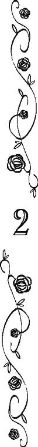
──ご主人様、大丈夫なのでしょうか......。
裁判が行われる日の朝をアンはとても惨めな気持ちで迎えた。
常に前向きで楽天的な彼女としては、とても珍しい。
重い気分ながらそれでも日課である屋敷の鎧戸を開けて、各部屋の点検を行う。
アンのご主人様が屋敷にやってくる前は、屋敷の中は家具どころか絨毯やカーテンまでも引き剝がされて、がらんとしていた。
家族であるナッシュやリアノン、オリーブは元よりアン達使用人の部屋にも必要な家具や調度品を手配されたが、ご自身の部屋や日常で利用していない部屋はほとんど手を入れられなかった。
それでも、全ての部屋にカーテンが戻っているのは、ご主人様が裁縫好きのカラとノラに布を買ってカーテンを縫うようにと指示されたからだ。
双子達の裁縫の腕前が良いことは知っていたが、布を選ぶセンスも抜群だったようだ。
光の加減によって微妙に色を変える深い青色のカーテンは、他に何一つない部屋でも何か荘厳な印象を与えている。
初めてこのカーテンをかけた部屋に入った時、アンは感心しきりだった。
〝このお金で布を買って、カーテンを縫うように〟
そうムッとした顔──多分、照れていらっしゃるのだとアンは微笑ましく思った──で双子達に金貨の袋を渡されたのは、二ヵ月ほど前のことだ。
主が使用人達へ功徳を施す〈聖ブリードの日〉を前に、ご主人様はわざわざアン達に欲しい物を尋ねられた。
その時、ノラ達は真っ新な上等の絹でご主人様の服を作りたいと答えていた。
前のお屋敷で針仕事を仕込まれた双子達は、古着を解いて縫い直したり、小物を作ったりすることは星の数ほどやったそうだが、真新しい布を裁って何かを作ることは一度もしたことがなかったとか。
ご主人様はそんな双子達の話を聞いて、ちゃんと胸に止めておかれたのだろう。
双子達に新しい布を買うお金を渡されるとは、ご主人様はなんて優しい方だろうとアンは感嘆する。
双子達は中央王都中の布屋を巡ったんじゃないかというくらいお店を探し歩いて、この素敵な青い布を見つけてきた。
アンのご主人様はローズベリー青伯爵家の爵位を継いで以来、入ってくるお金から屋敷の生活必需品を揃えつつ、様々な投資や投機を行い、その利益で領地の整備を進められていた。
銅貨一枚さえ無駄なく、常に考え抜かれたお金の使い方をされてきた。
そんなご主人様にとっては屋敷のカーテンを新しい布で作らせるなんて、ある意味無駄な贅沢だったろう。
空き部屋なんだから、カーテンはなくても鎧戸でなんとかなる。
どうしてもカーテンが欲しいなら、古着を扱う店に行けば格安の中古カーテンなどいくらでも見つかるのだから。
──それでも、ノラ達が喜ぶと思って綺麗な真っ新な布が買えるだけの十分なお金を、二人に渡されたんですね。
また、ご自身の服のための布を買うことより、この屋敷のカーテンのための布を買うことを優先されたのは、同じく〈聖ブリードの日〉に廃墟みたいな屋敷の外観をどうにかしてほしいとオリーブ様やリアノン様から言われたからだと思う。
アンのご主人様は、そういう方なのだ。
優しい言葉や愛想の良い笑顔で使用人を甘やかすようなことは、けしてなさらない。
どちらかと言うと言葉も表情も厳しめな方だ。
──でも、いつもご主人様はご自分のことは後回しにして、私達使用人に対して気遣いや思いやりを示されていました。
ご主人様が時折シドニーを連れて郊外に野草狩りに行かれていたのも、そういう思いやりの一つだった。
恐ろしく植物に精通しているご主人様に実地で様々な食べられる野草類を教えられたシドニーの料理は、さらに深い味わいを持つようになり、食事の度に皆を幸せにしてくれる。
懐が豊かになれば、ちょっと贅沢な肉や上等のワインを使った食事を料理人に作るように命じる主は多い。
また、著名な料理人は皆、一流の調理器具を揃えたがるものだ。
上等の食材を用いればもちろん料理も豪勢で美味しい物になるし、良い調理器具で作れば優れた料理になる。
シドニーが〈聖ブリードの日〉に望んだ物も、彼の年収何年分かになりそうな超高価な調理器具だった。
アンのご主人様はそれを彼に買い与えることはなかったけれども、シドニーはご主人様から受け取った植物の知識のほうが貴重だったと言っていた。
〝食材の質や......調理器具の質は......大事。でも......それだけに、頼るのは......料理人として......三流。材料や道具の質が......どうあれ......工夫は......どれだけでも、できる。......閣下が......教えてくれた......野草、香草の......知識......俺の一番の......財産、だ〟
ある日、無口なシドニーが珍しくたくさん喋ったことがあった。
シドニーはとにかく職人気質な料理人で、料理以外のことには一切興味を持たない。
彼を労い、喜ばせる方法として、長年同僚として一緒に働いてきたアンでも、彼の料理を誉めること以外思いつかなかった。
──でも、ご主人様は違いました。
この屋敷にきて日が浅いうちに、自分ができることの中でシドニーが一番喜ぶことを見つけ、実行された。
よくよく使用人に気を配っていなければ、そんな行動はできやしない。
「おはようございます、執事殿」
一階の空き部屋を見回り終わったところで、御者のベンと鉢合わせた。
「おはようございます。今朝のソロウの様子はいかがでしたか？」
「閣下が調合された薬のお陰で、もうすっかり元気ですよ」
ソロウは先日、アンのご主人様がとある貴族から買ってきた牡馬だ。
〝タダみたいな値だったんで、ベンが御者の仕事を忘れないように買ってきた〟
そんなことを仰ったが、重い病気で衰弱していたソロウをベンと一緒に何日も看病された。
獣医から匙を投げられ、安楽死寸前のところをご主人様が買い取ったのだと、他所の使用人達から後で聞いた。
「これからしっかり食べて筋肉が戻ってきたら、女王陛下の愛馬にも負けないくらい綺麗な姿になるでしょう。元々女王陛下に献上されてもおかしくないくらい立派な血統書付きのサラブレットですからね。それにソロウは性格も穏やかで優しくて辛抱強い良い馬です。閣下はたいした目利きだ」
ベンの言葉になんだか泣きそうになって、アンは瞬いた。
維持費を考えれば、必要な時に隣──中央王都では泣く子も黙る〈裏女王〉ケント白公爵夫人なのだが──に借りたほうがマシだという方針の元、アンのご主人様は爵位を継いでからもずっと自前の馬も馬車も購入されなかった。
──なのに、病気の馬を買ってこられた。
完治させる自信がおありだったにしても、ただでさえ寝る間もないくらい忙しく働いていらっしゃる。わざわざそんな厄介事を背負い込まれなくても良かったはずなのだ。
──ご主人様は、きっとソロウを見捨てられなかったんですよね。
馬好きのベンにとっても、ソロウのような立派な馬の世話を任されることは至福だったろう。
──ご主人様は、いつもそうです。
口では冷たいことを言われるが、結局いつも皆にとって一番良いことをなさっている。
「......いよいよ今日ですね」
「ええ」
ベンの言葉に、アンは頷いた。
女王暗殺を企てたなどという無実の罪で捕らえられたアンの大事なご主人様は、本日、裁判を受けることになっていた。
決定的な証拠があり、証人もいる以上、問答無用で処刑しろと言うマールバラ白公爵ら高位の貴族達の主張に、なんとかケント白公爵夫人が食らいつき、裁判を開くことになったのである。
しかし、投獄から一週間あまりでの裁判とあっては弁護士のサイモンをはじめ、アン達はほとんど何の準備もできなかった。
「まあ、あの閣下のことですから、大丈夫だとは思いますよ？」
ベンはアンを元気づけるように微笑んだ。
「......そうですね。サイモン様に何があってもローズベリー青伯爵家は守ると仰ったそうですから、徹底的に戦われるはずです」
「徹底的に、ですか。──あの毒舌閣下が徹底抗戦の構えを見せたら、検察も裁判官も無傷ではいられないでしょうね」
そんなベンの軽口に、アンも小さく笑った。
確かにあのご主人様が徹底的に戦われたら、対峙する検察官達は火だるまになりそうだ。
しかし。
──ローズベリー青伯爵家は守るというのは......ご自身のことは含まれているのでしょうか......？
そこになんとも言い難い一抹の不安が残る。
ご主人様が投獄から昨日までの間、唯一面談に応じたのは弁護士のサイモンだけだった。
そのサイモンにも細かい弁護の方針は伝えず、ただ、毒香芹と天使の薬草の束を用意するようにと指示されただけだ。
その薬草の束は夕べのうちにアンが準備した。
並はずれて賢いご主人様のことだからどんな裁判になろうとも心配はいらないと思いつつも、今日その姿を見るのが別の理由でアンは怖かった。
『私はご主人様とは血が繫がった姉なのです』
それをどう伝えようか、夜も眠れないほど悩んだのに、あの夜以来、アンのご主人様はアンとは会ってもくれなかった。
傷つけてしまったのだろう。
他の誰よりも執事として大切に護らないといけない相手だったのに、なんてことをしてしまったのか。
──全部、私の、せいだ。
最初から血の繫がった弟だと解っていたのに、あまりにも立派で優しくて素晴らしい人物となって現れたので。
──......恋して、しまいました。
〝ヒース様が......あなたの父様が、大好きだった〟
大好きだった。身分違いだと百も承知していて。それでも好きにならずにはいられなかった。胸から溢れ零れた思いが、彼に届いた時は天にも昇る心地だった。
〝それで、満足すべきだったの〟
お互いがお互いのことを愛おしく思っている。
それを知っているだけで、満足するべきだった。身分が違うのだから。彼には彼の責務として、迎えねばならない花嫁がいたのだから。
〝可愛いアンジェリカ。父様はあなたのことが大好きだった。母様もあなたのことが大好きだわ〟
でも、
〝それでも、母様は父様のことが他の誰よりも誰よりも大好きだから、思うの〟
アンジェリカが生まれなければ、ヒース様は死ななくても良かったのではないかしら？
〝ごめんなさい。アンジェリカ。お前が悪いわけではないの。お前は悪くないの。お前を生んだ私が、私が一番悪いの。ヒース様に恋をした私が悪いの。少なくとも恋をしても、絶対に気取られるようなことをしてはいけなかった。ご主人様やトマス様、メアリ様、ケント白公爵夫人、ハワードさん、屋敷の人達皆から、ヒース様を取り上げるようなことをしてはいけなかった......！〟
ローズベリー青伯爵家の人達にも、ケント白公爵家の人達にも、それから、父の婚約者だったベッドフォード白公爵家の令嬢やその親族の方々にも、見つからぬよう逃げて逃げて逃げて。
北の外れの貧しい漁村に、隠れ住んだ。
そうして元々学者肌だった父は、慣れない漁師暮らしで少しずつ体を壊し、弟のアッシュが生まれる前にこの世を去った。
──だから、母様は。
「ハワード」
執事としての名前を呼ばれて、アンが我に返って振り返れば。
「老ハワード！ いつこちらへ？」
自分の育ての親の一人である老人が旅装のまま廊下に立っていた。
「ご当主様が女王陛下暗殺未遂犯として投獄されたと聞いて、飛んできました。どうして、ハワードもベンもぼくに連絡を忘れていたのですか？」
「も、申し訳ございません、老ハワード！」
「申し訳ございません！」
二人揃って頭を下げる。
まったくである。
真っ先に老ハワードに連絡すべきことだった。
「それでマールバラ白公爵様からは、何か連絡がありましたか？」
突然出て来た名前に、アンは目を見開いた。
「マールバラ白公爵様ですか......？」
マールバラ白公爵は小竜島を女王の名代として治めており、大竜島の中央王都から離れていらっしゃることが多い。
ここ数日は珍しく中央王都に滞在しているようだが、前青伯爵の時代から──少なくともアンの知るここ十数年は──さして当家と親しい家ではない。
「キアヌス......様からの連絡も何もないですか？」
「キアヌス様？」
久しぶりにその名前を聞いたアンとベンは顔を見合わせた。
「キアヌス様は......病院から行方不明になられたあとは、まったく......」
「自分にも、まったく何も連絡は来ていません」
二人の回答に、老ハワードは大きな溜息を零した。
「本気で〈青い薔薇〉を枯らす気なら、もう一度接触があると思ったのですが、まずはローズベリー青伯爵家を叩き潰す気らしいですね。さて、どうしたものか。こんな陰謀に巻き込まれて、お若い当主様も吃驚なさっていることだろう」
「いいえ！」
アンは自分でも驚くほど大きな声を出した。
「ご主人様は、ぜんぜん動じていらっしゃいません！ 毒香芹と天使の薬草の束を用意するようにとサイモン様に指示を出されまして。おそらく何かお考えがあるのだと推察致します」
「......確か、女王陛下が飲まれる天使の薬草を毒香芹にすり替えたというのが、容疑でしたか？」
「そうです」
二つの植物はよく似ている。
だから、この二つの薬草の束を作っても、アンのように普段から薬草の世話をしていない者には見分けがつかないのではないかということしか、証明できそうにない。
──ですが、ご主人様にはきっと何かお考えがあってのことでしょうし......。
「......ああ、なるほど。アッシュ・ローズベリー閣下はずいぶんと切れる方らしい」
アンよりずっと薬草類に詳しい老ハワードは、それだけでアンのご主人様がどういう戦いをなさろうとしているのか解ったようだった。
「どうやらぼくがいなくても、大丈夫だったかもしれない」
「もちろん、わたくしは毒だとは存じ上げませんでした。陛下がいつも召し上がる薬草茶──天使の薬草と言われる特別な薬草を使った物ですわ──が、その日に限ってなかったのです。毎日、量を量って使い、翌日の分がなくなりそうな時は、必ず侍医に連絡をして補充をしておりますのに。それがなかったのであります」
法廷では、よくもまあと思うくらい次から次へとアンのご主人様の不利になる証言をする者達が続いた。
最後に出て来たのが、この侍女である。
「薬草茶が当日、誰かに盗まれた可能性はありますかな？」
侍女の証言に、裁判官の一人が質問する。
「陛下の召し上がる食材やお薬はきちんと鍵のついた部屋で管理しておりますが、過去に不心得な使用人がいたと聞いております」
「裁判長、その件については、アッシュ・ローズベリーが陛下の侍従の一人を買収し、薬草茶を盗ませたことが既に確認済みです」
狸に似た体型の検察官が似合わない鼻髭を撫でながら言ったので、アンは憤慨のあまりもう少しで立ち上がって反論するところだった。
──ご主人様は、そんなこと、なさいません！
「僕はそんなことをしていない」
アンの心の叫びが聞こえたかのようなタイミングで、アンのご主人様もしっかり否定なさった。
「残念ながら、あなたに買収された侍従は自白していますよ」
ニヤニヤと検察官は脂ぎった頰を緩ませ、アンは唇を嚙み締めた。
膝に置いた手を、隣に座るベンが心配そうに叩いた。
「さて、侍女殿。薬草茶が切れていることに気づいたあなたは、それからどうなさったんです？」
「急ぎ陛下の侍医団へ使いを出そうとしたところ、ちょうどローズベリー卿がお持ちになったのです。自宅の薬草園で採れた物を、今後は定期的に陛下に献上したいから、ぜひ使ってくれと。その......ローズベリー卿が経済的に困っていらっしゃるのは有名な話でございますでしょう？」
侍女が上目遣いに言うと、検察官はもちろん裁判を傍聴していた貴族達も大きく頷いた。
──当家が経済的に困窮していたのは事実ですが。
経済的に困窮していたから、屋敷の庭の薔薇園を潰し、野菜畑に変えるとキアヌスが言い出した時、それに同意した。
キアヌスにしてみれば、自分が受け継ぐ青伯爵家の財産が青い薔薇を追い求めた伯父のお陰で借金だらけになったことへの報復めいた気持ちもあったのかもしれない。
それはともかく、医者は頼れないと、薔薇園の片隅にあった薬草園を残したのはアンの判断だった。
家庭内で万能薬と言っていい天使の薬草だけでなく、毒香芹も育てていたのはある種の関節炎には薬草となるため、ローズベリー家の薬草園で摘んだ物を購入してくれる薬師がいたからである。
──あの時、僅かばかりの金銭のために毒香芹を残したのが、こんなことになるなんて。
「王宮に薬草茶を納めることができると、ずいぶん懐具合が変わられるようで、とても熱心に頼まれました。わたくしも、早く陛下のお茶の準備をしなくてはと急いでおりましたし、まさか青伯爵様ともあろう方が、陛下に毒を盛ろうとなさるなどと思わず受け取ってしまいました」
そう言って侍女はもう一度姿勢を正すと。
「裁判官様、わたくし、本当にローズベリー青伯爵が毒草を持ってくるなんて、思いもしなくて受け取ってしまったんです」
自己弁護の言葉を重ねた。
「もちろん、あなたに非はないですよ」
検察官はそんな侍女に愛想良く言い、アンのご主人様を向く。
「つまり、あなたは用意周到に陛下の薬草茶を盗み、同じ薬草だと偽って毒草の茶を渡したのですね。あなたが渡した毒香芹は体の末端から徐々に麻痺が始まり、最後に肺や心臓も麻痺させ、呼吸困難に陥り、死に至るそうですな。就寝前に陛下がお飲みになれば、陛下本人が気づいた時には既に手遅れ、声もあげることなく、朝には陛下は亡くなっていた。そして、医者は陛下が持病の心臓発作を起こされたのであろうと判断したかもしれない。そうなれば、陛下の後継者の第一候補とも言えるリアノン様を妻としたあなたは連合王国の王になれる──そう考えられたのでしょう？」
「へっ、えぇええ──────」
被告席でありえないほどふんぞり返って、アッシュ・ローズベリーは例の感じの悪いこと極まりない相槌を打った。
──ご、ご主人様......。
アンの隣でベンが天を仰ぐ。
主人が普段とまったくお変わりがないのは、過日の件を思えば喜ぶべきことかもしれない。
が、裁判官達に悪い印象を与えたのではないかと、常時ご主人様を百パーセント全肯定してきたアンでさえ思う。
「被告人、裁判に関係することで申し述べたいことがあれば、姿勢を正して真摯な態度で述べなさい」
裁判官に言われて片眉を上げると、アンのご主人様は軽く姿勢を正した。
長身のご主人様は元々姿勢が良く、背筋をピンと伸ばした姿は、年齢の割にかなり風格と言うか威風を感じさせる。
位置的には一番低い被告席にいるのに、一段高い場所に立つ小柄な検察官を見下ろすかのようで。
どちらが被告でどちらが検察官か解らなくなりそうだ。
「そもそも僕はその侍女に、薬草を渡した覚えはない」
「そうでしょうとも。あなたがお渡しになったのは毒草ですからな」
嫌味たっぷりに検察官は言うと、裁判官席の斜め前、法廷の一番高い場所に座する女王陛下に一礼し、改めて裁判官を向き直った。
「証人も複数おります。動機の面からも被告アッシュ・ローズベリーが女王陛下を弑しようとしたことは明白。しかも、この期に及んで法廷を侮辱するがごとき態度。反省の色は一切見られません。本官は被告の罪は極刑に値すると考えます」
「お待ち下さい！ 被告は、まだ十五歳の少年ですよ！」
慌てて弁護席からサイモンが立ち上がった。
──まったくです、サイモン様！
アンは大きく頷いたが、サイモンの言葉に同調した傍聴人は少なかった。
「だが、立派な青伯爵の爵位をお持ちだ。成人と同等に扱うべきでしょう」
むしろこの検察官の言葉に、大勢の傍聴人達が頷いた。
裁判官達の顔にも同意しているような表情が見られる。
「──被告から、何か弁明したいことは？」
裁判長が感情の見えない声でアンのご主人様に問う。
「──侍女殿に尋ねたい。僕が渡したとかいう毒香芹は、見た目は天使の薬草そっくりで、普段から多くの種類の薬草を扱っている医者や薬師でなければ、たいていが見間違える代物だ。それを侍女殿はどうやって見分けた？」
「それは......臭いが違いましたわ」
「臭いが違うのに、女王陛下が何も思わず飲まれると？」
「それは......」
侍女は何かを思い出すように視線を天井のほうに彷徨わせた。
「......か、微かでしたもの。げんにわたくしの同僚は何の疑問も持たずに、薬草茶を作ろうとしましたわ。でも、わたくし、変な臭いがすると思い、侍医を呼びつけましたのよ。そうしたら、彼がこれは毒草だと言うじゃないですか！ だから、わたくしは」
「つまり、煎じる前に、気づいたと」
侍女がぐだぐだと話すのを遮って、アンのご主人様は尋ねられた。
「それが何か？」
つんと顎を反らした侍女には答えず、ご主人様は裁判官達に顔を向けられる。
「裁判官、検証のため、この場で毒香芹の毒草茶を淹れたい。無論、僕ではなく、女王陛下の侍医に行って貰ってかまわない」
「そんなことをして何になると？」
不愉快そうに検察官が言う。
「淹れてみれば判りますよ。と言うか、口で説明しても噓だと言われるだけでしょうから、実践して体感して貰ったほうがいい」
「......それは危険なことではないのかね？」
体感と言われて、裁判官の一人が怯えた顔で尋ねた。
毒香芹は有名な毒草だが、実際にどういう代物かよくは知らないのだろう。
アンも栽培はしてきたが、薬師達に摘んだ物を渡すだけで、実際に煎じたことがない。
「実際に飲めば危険でしょうが、湯気に当たるくらいで、死んだりはしないですよ」
「しかし」
「淹れさせましょう」
応えたのは、裁判官でも検察官でもなく、裁判長よりさらに高い玉座から裁判を傍聴していた女王陛下その人だった。
「一応、彼は妾の甥の息子。彼が大罪を犯していたにしろ、一つも弁明させずに死刑にするのは妾も胸が痛みます」
女王の鶴の一声に、大法廷の真ん中に移動式の調理ストーブが持ち込まれた。
女王が普段使う物と同じ黄土で作られた特製のティーポットに水が張られ、よく乾いた毒香芹がその中に投じられる。
「......うっ」
「こ、これは......」
湯が沸くにつれて漂ってきた悪臭に、人々は顔を顰め、鼻を摘んだりハンカチを鼻に押し当てたりしはじめた。
場にいた貴族や高官達の中で下水管の中に入ったことがある者は少なかっただろうが、それに限りなく近い臭いだ。
つまり、ありえないほど強烈な悪臭だったのだ。
「乾いた状態でも毒香芹は物が腐ったような臭いを放っているが、似たような臭いを放つ薬草が少なからずあるから、素人でも玄人でもこんなものだと見逃すことが多い。けれど、煎じると天使の薬草とは似ても似つかぬ、強烈な悪臭を放つ。こんな酷い臭いがする物を侍女殿はどうやって女王陛下に勧めると？」
鼻を塞ぎたくなるような悪臭の中で、アッシュはまるで己が検察官であるかのように証人に尋ねた。
「だ、だだだから、へへへ、変な臭いがすると、わ、わわわたくしは」
鼻にハンカチを強く押し当てているせいか、侍女は何度も言葉を詰まらせながら言い返す。
「あんたが変な臭いがすると思ったのは煎じる前。煎じたあとの臭いの強烈さは、ここで皆さんが体感したとおり。薬草に詳しいこの僕が、毒香芹を煎じた時の悪臭を知っているのに、こんな酷い物を陛下が黙って飲むと思うと？ そこまで頭が悪い人間に見られていたとは、残念ですねぇええ────」
「被告の言いたいことは本席も理解した。が、この悪臭の中では裁判を続けることはできかねる。まずは、その毒香芹茶を片付けたい」
「同意します」
アッシュは頷いた。
一族と共に底辺のスラム街を渡り歩くような暮らしをしたことがあるアッシュは、この場の誰よりもこの臭いに耐性があったが、それでも不快な臭いには違いなかった。
「そして、この悪臭を払うためには、窓を開けて換気することももちろんですが、天使の薬草を焚くことを提案しますよ」
被告席のアッシュの言葉に、裁判長はすぐさま毒香芹茶の入ったティーポットを下げさせた。
次に彼の進言に従い、アンが事前に用意した天使の薬草の束が法廷に持ち込まれ、黄土の皿の上で燃やされた。
香りの良い煙が立ち上がり、先ほどの悪臭が噓のようにかき消されていく。
「.........天使の薬草に、こんな使い方があったとは」
傍聴席で誰かが呟いたのが、アッシュの耳にも届いた。
煎じて婦人病や貧血の治療に使われることが多いので、女王をはじめ傍聴している多くのご婦人方も、天使の薬草がそういう用途のみの薬草だと思っていたようだ。
焚くことで消臭剤になることを知らない者が多かったらしく。
......あの若い青伯爵は、本当に薬草類に詳しいらしい......。
......元々ローズベリー家は、高名な軍医を何人も輩出した家ではなかったか......。
......そう言えば先代も先々代も素晴らしい薬草園をお持ちだった......。
そんな声がヒソヒソと傍聴席から零れてくる。
「──ローズベリー青伯爵閣下が言われたように、かくも悪臭が漂うお茶を陛下に勧めることは難しいかと存じます。それを考慮せずに閣下が計画を立てたとは、考えにくいでしょう。今回の事件は、むしろ薬草にさして詳しくない人間が、閣下を陥れるために仕組んだものと当職は考えます」
裁判が再開すると、サイモンは機を逃さずにアッシュを弁護する言葉を放った。
「──古来より暗殺に毒香芹が用いられた例は多いわ。彼らはいったいどうやってこの悪臭を消したのかしら？」
「傍聴人は静かに」
女王の傍らに立つケント白公爵夫人の独り言にしては大きすぎる声に、裁判官が苦虫を嚙み潰したような顔で言った。
表の女王の口出しは我慢できても、裏の女王のチャチャは聞き逃せなかったらしい。
「古来の暗殺者は、毒香芹の悪臭を中和する薬草を知っていたんですよ、ケント白公爵夫人」
「その薬草を知っているのだな、アッシュ・ローズベリー！」
検察官が息を吹き返したような勢いで叫ぶ。
「僕が侍女に渡したのは、百パーセント毒香芹だけで、他の薬草は渡していないというのが、あなた達検察の調査結果じゃなかったんですかぁああ────？」
「それは......」
言い淀んだ検察官は、ワタワタと書類を確認し、額に浮かんだ冷や汗を拭った。
「そう！ その薬草を貴様は侍女殿に混ぜるように指示したのだろう！ 女王陛下の薬箱の中には様々な薬草が準備されている。件の薬草もあったに違いない！」
「裁判長、検察の推理は破綻しています。侍女殿が協力者であったなら、彼女がローズベリー青伯爵閣下から貰った薬草茶がおかしいと言い出すはずがありません」
すかさずサイモンが検察の推理の穴を突く。
「侍女殿は怖くなったのだろう。最後の最後でローズベリーを裏切っただけだ！」
「へっ、えぇええ──。じゃあ、仮にそうだとすると」
くるりとアッシュは、己の横の証人席に立つ中年の侍女を振り返った。
「侍女殿は、主犯の僕とは違って死一等は免れそうかなぁ？ 良かったねぇええ。でも、間違いなく終身刑にはなるよねぇ？ 検察官の名推理によれば、毒を盛る寸前まで、僕の女王陛下弑逆計画に荷担したんだからさぁああ」
「なんですって!?」
今度は侍女の口から悲鳴があがった。
「終身刑ですって？ なぜ、わたくしが投獄されないといけないの？ わたくしは、ローズベリー卿と組んで女王陛下を毒殺しようなどと大それたことはしていないわ。ただ、ローズベリー卿が毒草を渡したと証言すれば、マールバラ白公爵が夫を昇進させると......」
パニックに陥った侍女が口走った言葉に、法廷は水を打ったかのように静まり返った。
「......ぁ......」
場の全員が無言で自分を見ていることに気づき、侍女は己の失言に気づいたようで、さらに青ざめた。
「──ローズベリー青伯爵が毒草を渡したと証言すれば、マールバラ白公爵がそなたの夫を昇進させると言ったのですね？ そう言えば、そなたの夫はマールバラ白公爵の弟君、マールバラ大主教の秘書官でしたか」
言葉をなくしている裁判官と検察官に代わって、侍女にケント白公爵夫人が確認するように問いかければ。
「ケント白公爵夫人、そのような小者の言うことを信じて、我がマールバラ白公爵家を誹謗中傷するようなことを言わないで頂きたい！ たとえあなたが白公爵夫人であろうとも、名誉毀損で訴えますよ！」
傍聴席の最前列に座っていた白髪の老人が、顔を怒りで赤く染めて、女王の傍らに立つケント白公爵夫人へと叫ぶ。
アッシュはマールバラ白公爵のいかにも神経質そうな険しい顔を見て、小さく肩を竦めた。
青伯爵家の爵位を継いで以来、白公爵とは個人的に関わりを持った記憶はない。
だが、白公爵は熱狂的な白竜王国の愛国者、国粋主義者として知られる人物だ。
赤竜王国王家の末裔のリアノンと青竜王国王家の末裔とも言えるアッシュ・ローズベリーがグラディスの後継者になろうとしていることが許せなかったのだろうと推察する。
──まあ、僕を処刑することは何より緑竜王国の一族にとっては大打撃になるんですが。
赴任当初はともかく、緑竜王国の国王代理を命じられたマールバラ白公爵は、徐々に一族を虐げるようになった。
アッシュの一族を異教徒と蔑む貴族達は多いけれども、マールバラ白公爵はその筆頭だ。
アッシュがエフラムの再来を願う一族の悲願のパーツであることを知っているとは到底思えないが、アッシュを処刑することは一族への最大の嫌がらせになりそうだ。
「検察官、彼女のことを......そして、マールバラ白公爵の関与について捜査を」
──もしも、マールバラ白公爵がこの件で失脚し、緑竜王国の国王名代が別の者に代わったら、一族は少しは楽になるだろうか。
ふとそんなことを思ったが、すぐにアッシュはその考えを打ち消した。
多少は改善されても、やってくる国王名代が異教徒である限り、一族の辛酸の時代は続くだろう。
──エフラム様が再来し、彼が以前のように緑竜王国の代表として、小竜島を統治することが許されれば、あるいは。
「女王陛下！」
マールバラ白公爵は立ち上がって、女王に抗議の声をあげた。
「白竜王国の王家とも繫がりの深い我がマールバラ白公爵家の、陛下とは幼少の頃より親しくさせて頂いたこのヘンリー・マールバラが、青伯爵のような小者を陥れるために小細工を弄したと疑われるとは心外の極み」
「......ええ、ヘンリー。幼馴染みのあなたを疑うわけではないけれど、今の侍女の発言は女王として看過できません。ローズベリー卿にしろあなたにしろ、誰かが誰かを陥れようとしているようです。妾は女王として調査を命じます。この裁判も一度閉廷し、侍女の調査結果を」
その時。
「仮にそこのアッシュ・ローズベリーが女王陛下の暗殺未遂事件の首謀者じゃなかったとしても、彼が犯罪者であることに代わりはないわ！」
不敬にも女王の言葉を遮った女がいた。
それまで傍聴席の端に座っていた喪服の女は唐突に立ち上がり、糾弾を始めたのである。
「なぜならば、彼は、偽者のアッシュ・ローズベリー青伯爵だもの」
──え？
アンは一瞬、我が耳を疑った。
──ご主人様が、偽者のアッシュ・ローズベリー青伯爵？
突然の告発に、アンだけでなく場の全員が女に注目する。
「偽者？ それはどういうことですか？」
裁判官達でさえも、好奇心に駆られてか聞き返した。
「彼は前青伯爵であるスコット・ローズベリーの息子ヒース・ローズベリーと、その夫人のセシリア・ローズベリーの子アッシュ・ローズベリーを名乗っているけれど、真実はそうではないわ」
未亡人のような黒いヴェールで頭を覆った彼女が誰か、アンは本能的に覚った。
──リアノン様の侍女だった人だ......。
彼女がリアノンにアンとの駆け落ちを唆したせいで、危うくリアノンは死ぬところだった。
その後、アンのご主人様は彼女と対峙していた。
現場に偶然居合わせたアンは、二人の関係を把握できなかったが、彼女がローズベリー青伯爵家を憎んでいることは解った。
──あのあと、私はご主人様に、彼女のことをお尋ねすることができなかった。
とても知りたかった。彼女とはどういう関係なのか。
そして、とても知りたくなかった。彼女とはどういう関係なのか。
「彼の父親はヒースではなく、母親もセシリアではないわ」
女性にしてはやや低めの、よく響く声で彼女は断言した。
「スコット・ローズベリー前青伯爵は自分の血縁者に、植物の名前をつけたわ。でも、被告席にいる彼の名は、伝説の世界樹からつけられた〈秦皮〉じゃないわ。何もかも燃え尽きたあとの〈灰〉。何の役にも立たない塵」
「そんなことありません！ ご主人様は素晴らしい方です！」
思わず言葉が口を衝いて出た。
優秀な執事としては法廷の傍聴は静かに行い、目立つような行動をすべきではないと判っていた。
それでも叫ばずにはいられなかったのだ。
アンの自慢のご主人様が、何の役にも立たない塵なんかであるはずがないのだから。
「ご主人様は、偽者なんかじゃありません！」
アンはもう一度傍聴席からご主人様の弁護をした。
「偽者よ。それは世界中の誰よりもあたくしが一番よく知っているの」
アンの叫びに、幼子に言い含めるような言い方で、女は応える。
「こちらのアッシュ・ローズベリー青伯爵閣下が偽者とは、何の根拠があって言われているのか？」
サイモンが弁護士らしい四角ばった言い方で問えば。
「根拠？」
喪服の女は黒いヴェールの下で、艶やかな赤い唇の両端をあげた。
「根拠は、あたくしがそこのアッシュ・ローズベリーを名乗る偽者を産んだ母親だからよ」
言いながら彼女は被っていた黒いヴェールを剝いだ。
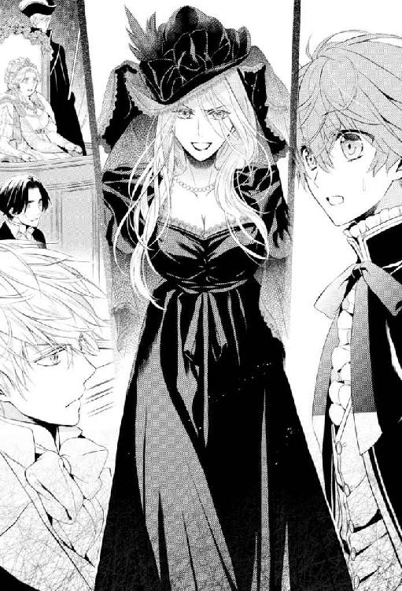
数ヵ月前、リアノンの侍女として現れた時の彼女の髪は黒かった。
しかし、それは染めていたからだったようだ。今、彼女の腰まで流れ落ちる滝のような髪は、青みがかった白銀。
よくよく見れば、その瞳の色は星のように輝く青灰色。
そして、以前もぞっとするほど冷たく整った容貌だと思ったが、その顔が黒ではなく白銀の髪に囲まれると。
「──」
アンは言葉を失った。
アンだけではなく、場の誰もが彼女とアッシュの顔を見比べて、そして、納得した。
逆に血の繫がりがないと言われたら納得できないほど、二人の容貌は酷似していた。
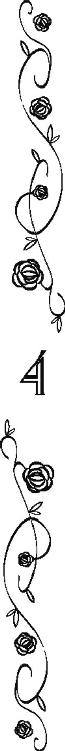
「証人、あなたの名前は？」
アンのご主人様の母親を名乗る女性の登場に、アンのご主人様に降り懸かった嫌疑は、女王陛下暗殺未遂からローズベリー青伯爵詐称に切り替わった。
本来なら別件だから改めて裁判を開くところだが、事の重大性を鑑みて裁判長はそのまま裁判を続行することを宣言した。
「ローザ・ティンカー」
そうして証人席に座った彼女は、躊躇うことなく名乗った。
傍聴席が少しざわめく。
ティンカーが緑竜王国に──つまり、異教徒達によくある姓だったからだ。
ただ、生粋の緑竜王国人すなわち異教徒は、浅黒い肌と黒っぽい髪を持つ者がほとんどで、彼女のような白っぽい髪や薄い色の瞳は珍しい。
「結婚前は、プリムローズ・ローズベリーと」
さらにざわめきが広がった。
──ロ、ローズベリー......!?
アンも立ち上がらんばかりに驚いた。
それは、裁判官達も同じようで、やや上擦った声で質問を重ねた。
「では、あなたはローズベリー青伯爵家の人間なのですか？ それとも、市井のローズベリー家の出身ですか？」
青竜王国には、ローズベリー青伯爵家とは無関係にローズベリー姓を名乗る人々が多い。
アンが前青伯爵から聞いたところでは、青竜王国が建国される前、大竜島の中・北部に住んでいた一族が、〈ローズベリー〉を名乗っていたためだとか。
「役所に提出された書類では、あたくしはスコット・ローズベリー前青伯爵が、愛人の女に産ませた娘ということになっています。その愛人の姓もローズベリーだったため、あたくしはプリムローズ・ローズベリーという名前で育てられました。スコット・ローズベリー青伯爵の別邸で、疫病患者のように隔離されて」
「役所に提出された書類では、というのは、事実は違ったということですか？」
「ええ。あたくしは、スコット・ローズベリー前青伯爵の腹違いの妹と、緑竜王国の......この国の言い方で言えばエフラム王太子殿下の間に産まれたのです」
細い悲鳴のような声があがった。
「......エフラムの、娘......？」
その悲鳴の主である女王陛下は、今にも立ち上がりたいのを玉座の肘掛けを握り締めてこらえているように見えた。
プリムローズはそんな陛下に冷たい視線を投げた。
「父をご存じでしたか、女王陛下。ああ、あなたが父を殺したのでしたね」
「そなた、言葉を慎みなさい。そなたの父だというエフラム王太子殿下が、女王陛下の騎士として亡くなったのは事実ですが、彼は戦場で、戦死したのです」
女王陛下に代わってケント白公爵夫人が厳しい口調で指摘する。
「ええ、嵐の中、女王陛下のために戦えと、無理やりスコット・ローズベリー前青伯爵に出航を命じられて」
「......そなたは、誰からそんな話を聞いたのですか？」
「父の姉からですわ、陛下」
とってつけたように〈陛下〉と呼んだが、彼女の恨みが陛下にも及んでいるのは誰もが聞き取れるような冷たい口調だった。
「前青伯爵は異教徒であるエフラムと異母妹の結婚を認めず、母があたくしを身籠もっても結婚に反対し続けた。だから、父エフラムは異教徒でも連合王国のために戦うことができると証明するため、戦場に向かい、ご存じのように戦死しました。母は失意の底であたくしを産み、それから間もなく亡くなりました。父のことをたいそう愛していたそうですから、父の死に耐えられなかったのでしょう」
アンはプリムローズがスコット・ローズベリーに復讐を誓っていることを知っている。
スコット・ローズベリーのような温和な人物が何をしたのかと思っていたが、彼女の告白に少し納得する。
──ただ、あの方は異教徒だからと、妹様とエフラム様の結婚を反対なさるような心の狭い方ではないはずですが。
「正式な婚礼を遂げずに産まれたあたくしは、スコット・ローズベリー青伯爵の婚外子ということにされました。異教徒の父エフラムの血が混じっていることを、世間に知られたくなかったのでしょう」
淡々と語る彼女の言葉に、ケント白公爵夫人が青い顔で震えているのが見えた。
──ロザリンド様が離婚に踏み切られたのは、この方を本当にスコット様の娘だと誤解されていたからなのでしょうか？
異教徒への風当たりが強い大竜島で子供を育てるには、彼女が異教徒の父を持つことをスコット・ローズベリーが隠さずにはいられなかったということは、アンも理解できる。
しかし、妻にさえも真実を告げず、それが原因で離婚に発展しても、言い訳をしなかったというのも不自然な話だ。
「あたくしが何者かというのは、この場ではあまり意味のない話ですわ。問題は、あたくしの息子が、畏れ多くも女王陛下や宮廷の皆様を欺き、ローズベリー青伯爵になりすましたこと。我が子ながら恐ろしいことですわ」
「しかし、あなたの話が真実なら、彼は先々代のローズベリー青伯爵のひ孫だ。彼が青伯爵を名乗ることに問題があるとは思えない」
サイモンが反論する。
「青竜王国の法律は男系にしか爵位の相続を認めていないのを、弁護士のあなたがご存じないなんてありえないわ」
無論、かつてアッシュ・ローズベリーになりかわって青伯爵位を継ごうとしたサイモンは、その点を百も承知のはずだ。
そして、それでも言わずにはいられなかったのだろうと、アンは思う。
彼が青伯爵の爵位を継いでから、サイモンはずっと彼の仕事を手伝ってきた。
──サイモン様は、ご主人様がどれだけローズベリー青伯爵家のために尽くしていらっしゃったかご存じのはず。
「百歩譲ってこの子にだってローズベリー青伯爵家の血が流れているのだからと継承権を認めるように法律が変わっても、本物のアッシュ・ローズベリーが生存しているのに、彼を差し置いて先々代のひ孫なんて遠い血筋のあたくしの息子がローズベリー青伯爵家の当主になることはありえないわ」
「本物のアッシュ・ローズベリー......？」
傍聴席がざわめく。
ローザまたはプリムローズと名乗る女性は薄く笑って傍聴席を眺めた。そして。
「あら。そこにいるじゃないの。セシリアにそっくりな坊や。そう......セシリアは、ナッシュと呼んでいたかしら？」
傍聴席にいたローズベリー青伯爵家の使用人達は、揃って彼女が指さしたナッシュを見た。
──母様......！
アンは悲鳴を飲み込んだ。
今までどうして気づかなかったのだろう。
証人席のプリムローズと被告席のアッシュ・ローズベリーが瓜二つのように、ナッシュの顔はその頰に散る雀斑を消し去れば、亡くなった母の顔にそっくりだった。
むしろ被告席にいるアッシュ・ローズベリーの色彩は、母とはまったく違う。
弟が生まれて間もなく生き別れたアンは、彼の瞳や髪の色を正確には覚えていなかった。
どちらにしろ成長に伴って、幼少期の髪や瞳の色と違ってくる者も少なくない。
──それに、ご主人様の髪や瞳の色は、父様と同じでしたから。
だから、母と異なっても、アンは違和感を覚えなかったのだ。
「へっ、えぇええ──────」
場の全員がプリムローズの証言から得た情報を整理するのにいっぱいいっぱいで、困惑したり戸惑ったりしていた。
そこへ、いつもの不機嫌そうな表情で被告席に座っているほうの〈アッシュ・ローズベリー〉が、例の感じの悪いこと極まりない口癖を漏らされた。
「あんたは、どうあっても僕を処刑台に送りたいらしい」
母親にそのようなことをされているにも拘わらず、彼はアンが悲しくなるほどまったく動揺していないように見えた。
「──だって四度も失敗したのに、まだ、あの人達、諦めないのよ」
我が子に詰られているほうの彼女も、平然とその美しい顔に冷ややかな笑みを浮かべた。
「バカなのよ、あの人もあの人の一族も。あなたを〈灰〉にすれば大丈夫だと思ったのに、あなたを燃やし尽くして、本物の灰にしないと駄目だった。あなたがいる限り、彼らは何度でも同じ失敗を繰り返す。あなたが生きている限り、何人もの人が不幸になる。あたくし達の体に流れているのは、そんな呪われたカッコウの姫の血。不幸も失敗も、あなたで終わりにするには、あなたが本当の灰になるしかないのよ」
──呪われたカッコウの姫の血？
彼女の言葉にアンは昔々、母から聞いた可哀相な王様とその家族の話を思い出した。
巣を持たぬ鳥になれと、父王に呪われた姫の救いのない話。
〝可愛いアン。母様は他の鳥になりたかったけれど、カッコウにしかなれなかった。でも、お前は、お前だけはどうかこの屋敷でカッコウ以外の鳥になって〟
〝居場所を見つけて。お前だけの〟
〝どうか巣を持たない鳥のような暮らしを、お前がしませんように〟
〝お前が、お前の子供を自分の手で育てる事ができますように〟
〝母様は、毎日いつだって......死ぬまで......いいえ天国に昇っても、お前のために祈っているわ〟
別れ際にアンを抱き締めて、何度も何度もアンが幸せになることを祈ってくれた母。
その母と、目の前の女性はなんとかけ離れているのだろうか。
「......呪われたカッコウの姫の血ねぇええ？」
小馬鹿にしたような顔で、アンのご主人様は頰を指で搔かれた。
母親の言葉に一筋も傷つけられることがなかったと言わんばかりに。
「ま、あぁ？ 確かに同じようにローズベリー青伯爵家の血を引いていて、しかもご丁寧に同じ名前をつけられた。なのに片方は青伯爵様で、片方は野垂れ死ぬのを待ち望まれる異教徒の、何もかも燃え尽きたあとの灰みたいに無価値な子供。ずいぶんな運命の違いだと僕が思ったのもしょうがないだろう？」
席から立ち上がった彼は、中央の証人席にいる母親に近寄った。
「青伯爵家の乗っ取りに成功したら、母親であるあんたにだって、もっと良い暮らしをさせてやろうと思っていたのに、なんだって僕の邪魔をするのさ？」
いかにも性格の悪そうな笑みを浮かべて、彼は自分の母親に尋ねた。
──乗っ取り......？
その言葉に、アンは引っかかった。
──ご主人様は、青伯爵家を乗っ取ろうと考えていらっしゃったのでしょうか？
疑問に思った瞬間、すぐに回答は出た。
そんなはずはない。
彼が仮に青伯爵家を乗っ取ろうと考えたにしても、その当時、ローズベリー青伯爵家は天文学的な借金を抱え、爵位を継いでも債務者監獄に送られる未来しかないような状況だった。
サイモンのように国内でも指折りの財産家で権勢のある父を持っている人間ならまだしも、そうでないまともな人間なら、まず、ローズベリー青伯爵家の相続人になりすまそうなどとは考えないだろう。
──実際、ご主人様が青伯爵になられてからも、財政再建に寝る間も惜しむほどでいらっしゃいましたし。
名門伯爵家の当主らしい贅沢なことなど、一つもなさっていない。
彼がローズベリー青伯爵家を継いだからと言って、どんな得があったのかと言いたくなるくらいだ。
──苦労ばかりを背負ったようなものだったじゃないですか！
アンの思いを肯定するかのようにプリムローズは息子の問いかけに応えた。
「あたくしが、スコット・ローズベリーとローズベリー青伯爵家に対して両親とあたくし自身の復讐を〈聖誓〉したのを知らなかったとは言わせないわ。あなたがローズベリー青伯爵家を建て直したとしてそのお零れで贅沢な暮らしをするより、青伯爵家が潰れることを望んでいるあたくしに、そんなことを言っても無駄よ」
「......へっ、えぇえ────」
ご主人様のいつもの口癖に、何かを嗤うかのような響きがあって、アンは胸が痛い。
「あんたがそこまで育ての親を憎んでいるとは、計算違いだったな。せっかくお人好しの本物を騙して、〈秦皮〉のアッシュになりすまし、赤公爵の娘と婚約し、暗殺なんかしなくても女王が亡くなれば僕が連合王国の王になる。そうなるよう苦労してアレコレ画策したのに、まさか一応は僕を産んだ人間であるあんたに邪魔されるとは、本当に思ってもみなかったよ」
──ご主人様？
アンが自慢するご主人様とはとても思えないような悪辣で欲深くて腹黒い人間のようなことを、唐突にご主人様が言い出したので、アンは吃驚して二度見した。
「グラディス女王陛下」
そんなアンを他所に、ご主人様は母親から女王陛下に視線を移された。
「告白します。僕はこの女が言うとおり、本物のアッシュ・ローズベリーではない。僕は異教徒の父と彼女との間に産まれ、異教徒の例に漏れずあちこちを放浪した。しかし、放浪生活に馴染めなかった僕は、福音教徒の孤児院に逃げ込み、そこで本物のアッシュ・ローズベリーに出逢った。そして、ローズベリー青伯爵家が彼を次の青伯爵にと迎えに来た時、僕は彼になりすまして、貴族になろうと考えた。貧乏暮らしにはうんざりしていたからね。けれど、ばれてしまったからにはしょうがない。死刑でも終身刑でもお好きにどうぞ、だ。ただ──」
そこまで淡々と告白してから、アンのご主人様は傍聴席のアン達を一度だけチラリと見遣って、再び女王の方に視線を向けられた。
「ただ──これは全部、僕一人で考え、やったことだ。母はもちろん僕の父や一族の者とは無関係の犯罪だ。それから、本物のアッシュ・ローズベリーやそこのお人好しの弁護士をはじめ、ローズベリー青伯爵家の関係者も、何も知らない。僕のことを本物のアッシュ・ローズベリーだと信じていただけだ。彼らのうちの一人たりとも僕の共犯者なんかじゃないから、そこのところはどうか間違いのないよう取り扱ってほしい」
「噓だ！」
ご主人様が言い終わられるか終わられないかのうちに、ナッシュが立ち上がって叫んだ。
「アッシュはオレの体が弱いことを心配して、オレが青伯爵家の借金を返そうと頑張ったら、返す前に死んでしまいそうだからって。だから、しばらくの間、オレの代わりに青伯爵家の当主を務めるって」
泣きじゃくりながら言うナッシュに、アンのご主人様は小さく微笑んだ。
「バカだなぁ、ナッシュ。そんなの方便に決まってるだろ。僕はお前を騙したんだよ。一度青伯爵になってしまえば、お前がなんと言おうと、僕が死ぬまでアッシュ・ローズベリー青伯爵だったんだよ。そう──あの女が本当のことを言わなければ」
皮肉っぽい笑みは、いかにも悪党じみていて。
だから他の誰もが、その告白が真実だと思ったようだった。
ただでさえ被告席にいる偽者のアッシュ・ローズベリー青伯爵が貴族達の間では評判が悪かったことは、彼の美点を即座に百も二百も並べることができるアンでも認めざるをえない。
貴族の皆様が口を揃えて言うには、アンのご主人様はとてつもなく傲慢な毒舌家で、愛想の欠片もない方なのだと言う。
アンのご主人様は親しい交際を求められてもすげなく断り続け、あらゆる付き合いを仕事上のものに限定されてきた。
──ご主人様は、少し癖がある話し方をなさいますから、その優しさや素晴らしさが解りにくいかもしれませんがっ！
けれども、本当に立派な方なのだ。
だから、アンやローズベリー青伯爵家の面々は、彼の言葉を額面どおりには取らなかった。
取れるはずがなかった。彼が青伯爵家にやってきてから、何を成したか皆、知っている。
そして。
「......つまり、その少年が本物のアッシュ・ローズベリーで、あなたはスコット・ローズベリーの姪の息子だったと」
「そうですよ、ケント白公爵夫人」
世間から〈血塗られた公爵夫人〉と呼ばれるほど恐れられているケント白公爵夫人もまた、アン達に心情は近いようであった。
「......非常に残念です。あなたが本物のアッシュ・ローズベリー青伯爵の親戚で親友として中央王都にやってきたのなら、わたくしも陛下も有能で前途ある若者として、あなたを大歓迎したでしょうに」
「へっ、えぇええ──。それは、失敗したかな」
いつもの人を小馬鹿にしたような口調が、本当にいつもどおり過ぎて、アンは胸が痛い。
「青伯爵を僭称したとなると、死刑は免れませんよ、アッシュ・ロ......、ティンカー？」
ローズベリーと言いかけて、白公爵夫人は言い直した。
それが本当の名前なのか、特に否定されることもなく。
「ああ──それも星が定めた運命だね」
何か眩しいものが目に入って、眇めるような表情で彼はアンのほうを見られた。
──ご主人様......！
被告席にいる青年は、本物のアッシュ・ローズベリーではないということの意味が、突然、アンの胸に迫った。
〝認めたくないが、僕はあんたに惚れてる〟
──あの夜にこのことを知っていれば、私は。
自分は、どうしただろう？
彼は弟ではなかった。
──そして。
彼は本当はご主人様ではなかった。
ローズベリー青伯爵になるべき人ではなかった。
アンが忠誠を捧げるべきご主人様ではなかった。
偽者だった。
──でも！
だから？
だから、彼が行ったことが全て噓になるのだろうか。
──そんなことはありません！
そんなことはありえない。
彼はどれほどのものをローズベリー青伯爵家に、そして自分に下さったことか。
爵位を継いで初めて手に入れたお金で、足が折れたソファーをベッド代わりにしていたアンに、ベッドを買ってくれた。
裁縫好きの双子にはカーテン用の布を買うお金を渡し、屋敷の窓という窓のために双子がカーテンを縫う時間を。
料理の道を究めようとしている料理人には、ありったけの野草と香草の知識を。
屋敷に一頭も馬がいないことを寂しく思っていた御者には、とても素晴らしい馬を。
出戻りの従妹叔母を当然のように──裕福な貴族でも、なかなかこうはいかない──屋敷に迎え入れた。
自分を殺そうとした顧問弁護士を、その従妹叔母のために雇用し続けた。
酷い父親の元から、赤公爵の姫君を救い出して、引き取られた。
そもそもが竜喘息持ちの子供には〈呪われた貧乏伯爵〉家の再建は務まらないと、大変な苦労を背負い込むことを承知で、〈アッシュ・ローズベリー〉を名乗られたのだ。
それがすべて無になることはない。
──それなのに、ご主人様は、自分一人が悪者になろうとしていらっしゃる。
最初からきっと、偽者であることがばれたら、自分一人で全部責任を背負う覚悟でいらっしゃったのだろうと思う。
──バカなのはあなたです、ご主人様。
赤の他人であるナッシュのために、どうしてそこまでして下さったのか。
──そして、もっとバカなのは、私です。
どうしてもっと早くナッシュが弟であることに気づかなかったのか。
──どうしたら、ご主人様を救えるのでしょう？
彼がどんな理由であろうとも、青伯爵を僭称したのは事実だ。
この連合王国で、貴族を僭称することは重罪である。
女王陛下さえも騙していたとなれば、極刑は免れ得ない。
──ですが！
「その方がアッシュ・ローズベリー卿を詐称されたのだとしたら、彼が偽者のローズベリー卿だと気づかなかった執事の私にも罪があります！」
細かい事を考える前に、立ち上がってアンは叫んでいた。
「私はローズベリー青伯爵家の執事ジョージ・ハワードです」
それから、慌てて自己紹介して一度裁判官達に向かって頭を下げた。
「スコット様が亡くなられ、キアヌス様が行方不明になったあと、この方を捜し出して青伯爵家に迎え入れたのは私です。この方がなさったことの片棒を担いだも同然です！ ご主人様の罪の半分は私のものです！」
きっぱりとしたアンの発言に飲まれて、場は一瞬静まり返った。
「......あんた、何、言ってんだよ!?」
一番に反応したのは、なぜかアンのご主人様その人だった。
「僕は、あんたを騙したんだよ。なんで騙されたあんたに罪があるんだよ？」
常識的に言えば、ご主人様の仰ることは間違いではないのだが。
──でも、自分お一人だけが悪者になるなんて、間違ってます！
「あのぅ......」
二人のやりとりを遮るように、ベンが手を上げた。
「自分はローズベリー青伯爵家の御者をしておりますベン・ウォナーです。自分もこの方が本物のローズベリー青伯爵閣下だとすっかり信じていたので、自分にも罪があると思うのであります。その......執事殿が請け負った分の一割か二割くらいは」
「ローズベリー青伯爵家の......料理人だ。俺も......信じた。俺も......ベンと同じ......くらい、罪が......ある」
「カラ達！ カラ達も、なんですよ！」
「ノ、ノ、ノ、ノラ達もなのです！」
震えながら双子達がベンやシドニーに続いた。
「オレなんかアッシュがオレの代わりに青伯爵家を建て直すと言ったのを全面的に信じて、アッシュがオレの身代わりをやるのを手伝ったから、アンさんやベンさんより罪が重いよね？」
「顧問弁護士なのに今の今までまったく疑いもしなかった当職にも非があります」
「従妹叔母なのに気づきもしなかったあたくしにもね」
ナッシュはもちろんサイモンやオリーブまでそんなことを言い出して。
「わたし、この方が本当の青伯爵じゃないなんて、まったく思ってもみませんでしたわ。アンジーがあれだけ敬愛しているのだから、そう思い込んでもしょうがないです。でも、わたし、自分が間違っていたことを否定しません。アンジーに罪があるなら、この方を本物の青伯爵だと信じて婚約に同意したわたしにも罪がありますわ」
ついにはリアノンにまで言われて、アンのご主人様は例の口癖さえ言えずに額を押さえられた。
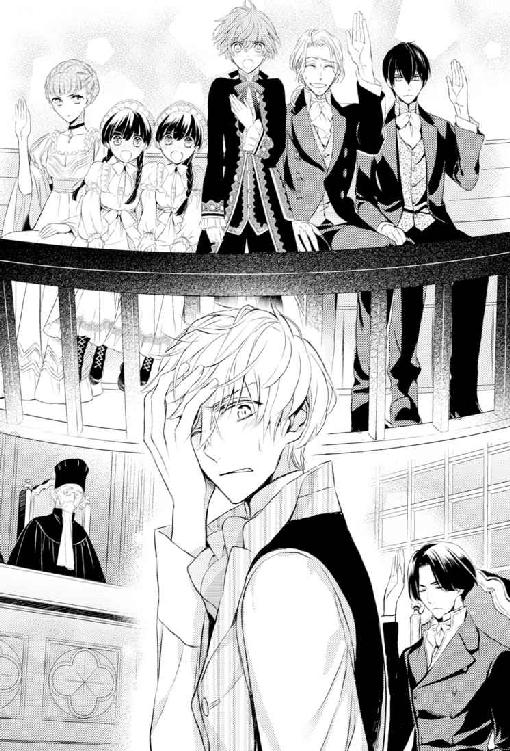
「本物のアッシュ・ローズベリー、前青伯爵の孫、秦皮のアッシュ・ローズベリーは、あんた達の隣にいる。この被告席、罪人のいるべき場所にいるのは、何もかも燃え尽きたあとの灰のアッシュ・ローズベリーいや、アッシュ・ティンカー。あんたらの......」
大きく息を吐いて、ご主人様はアンを真っ直ぐに睨みつけられた。
「僕はあんたの大事なご主人様、ローズベリー青伯爵じゃないんですがぁあああ────!!」
「いいえ!!」
ここぞとばかりに肺活量を誇示されるご主人様に、アンも負けじと強い声で言い返した。
「ご主人様は、私のご主人様です。たとえご主人様が偽者の青伯爵様であろうとも、私にとっては本物のご主人様です!!」
「..............................ぁ？」
ご主人様はアンの言葉に、信じられないとデカデカと顔に書いて、こちらを見詰め返された。
──わ、私......っ！
なんだか今、物凄い事を言ってしまった気がする。
「──騙されたのに、騙されたほうにも罪があるとは、面白いことを言うのですね、アンジー」
青伯爵家の面々の主張に呆気にとられていた裁判官達を横目に、ケント白公爵夫人が内心焦っているアンに声をかけた。
「この偽者のアッシュ・ローズベリー青伯爵は、それほどの人物だったかしら？」
「はい、ロザリンド様！」
アンは気恥ずかしさもあって、ロザリンド・オブ・ケント白公爵夫人のほうへ体ごと向き直った。
「ロザリンド様もご存じでしょう？ この方がいつも同じ礼服を着ていらしたことを。馬車が必要な時は、ケント白公爵家に借りていらしたことを」
「〈呪われた貧乏伯爵〉に金がなかっただけだろう」
傍聴席から誰かが野次を飛ばした。
「新しい服を誂えるお金も、新しい馬車を購入するお金もありました。でも、この方はローズベリー青伯爵として最初に手に入れたお金で、私達使用人のベッドを購入なさったんです」
アンの話に、傍聴席がざわめく。
一般的な貴族の価値観から言えば、最初に入ったお金を使用人に使うなどありえない行動だ。
それはもう奇人変人の域である。
「その後も、領地の改善のために様々なことをなさいました。必要ならば当家の帳簿を全て揃えて提出します。この方が青伯爵になられてから、一銅貨も私腹を肥やしていないことを証明できますから！」
「そのようなことを言っても、そやつが青伯爵を僭称したことに違いはない！」
再びマールバラ白公爵が叫ぶ。
「裁判官、ただの傍聴人に喋らせ過ぎだろう。速やかにその青伯爵を僭称した男に法に則った死刑判決を。──ああ、その男の共謀者として、本物のアッシュ・ローズベリーも投獄すべきだと、マールバラ白公爵の名において助言する」
自分にかけられた疑惑のことは棚に上げてマールバラ白公爵が言えば、裁判官達も彼の発言に納得したようで。
「あ～、静粛に！ マールバラ白公爵閣下の仰るとおり、傍聴人は発言を控えるように」
空咳を入れながら裁判長が言い、それから。
「被告は、本物のアッシュ・ローズベリー青伯爵を騙し、青伯爵家の執事をはじめとする使用人や親族の者達を騙し、畏れ多くも女王陛下さえ騙して、ローズベリー青伯爵を名乗った。それに相違ないか」
「はい」
アンのご主人様は何の気負いもなく、淡々と頷かれる。
「いかなる理由があろうとも、男爵位以上の貴族を詐称した者は、白竜王国、青竜王国、赤竜王国そして、緑竜王国の法律をもってしても、死刑以外の量刑はない。よって」
「お待ち下さい！」
「お待ち下さい。本当にこのまま彼を処刑するつもりですか、グラディス女王陛下？」
その決定的な瞬間。
裁判長の言葉を遮ったのは、それまで無言で裁判を見守っていた老ハワードだった。
老人とは思えぬほど機敏な動作で傍聴席の一廓からアッシュの傍らまで駆け下りると、彼は跪き、一際高い席に座す女王陛下を真っ直ぐに見上げて、再度問うた。
「この〈青い薔薇〉達を、このまま枯らしてしまわれますか？ それが、光竜連合王国の女王として真に正しい判断だと？」
女王陛下は、ヨロヨロと立ち上がった。
段上で一歩前に出る。
「......スコット、では、彼女は......彼女は、本当に......？」
「はい。間違いなく彼女は、エフラム王太子殿下が亡くなったあと、あなた様からお預かりした〈青い薔薇〉です」
──〈青い薔薇〉？
なぜ、ここでその単語が出てくるのか。
女王陛下と老ハワード......に化けていたスコット・ローズベリー以外、誰も二人の会話が解っていないようだった。
......〈青い薔薇〉......？
......女王陛下が、以前から拘っていらした......？
傍聴席の後ろに座っている者達は、互いにつつきあい、どこに青い薔薇の花があるのかと、首を伸ばし法廷の床をくまなく探した。
しかし、女王陛下は驚きざわめく人々を横目に、なぜか証人席に立ち尽くしていたプリムローズの元に猛然と駆け寄り、彼女を両腕で抱き締めた。
そして。
「プリムローズ、ああ、プリムローズ、妾の娘。やっとあなたを抱くことができました」
「......え？」
魔女のように美しいプリムローズが、多分こんなに間の抜けた顔をしたのは生まれて初めてだったと思われる。
アンの頭脳明晰で如才のないご主人様も、あまりの展開に顔を強張らせたまま固まっている。
「スコット・ローズベリー！」
三十秒ほどの沈黙の後、怒りに満ち満ちた声を、ケント白公爵夫人が張り上げた。
「どういうことです？ 事情を説明しなさい！ 事情を！」
元妻に逆上されたスコット・ローズベリーは、へどもどした様子で頭を搔いた。
「あー......つまり、ほぼ先ほどプリムローズ様が説明した通りなんだよ。プリムローズ様の母君は私の実の妹ではなく、義理の妹になるけれども」
「義理の......妹......？」
「そう。当時ぼくの妻だった人の実妹。つまりは、グラディス女王陛下。ちなみにお二人は公にしなかったとは言え、福音教の牧師の前で正式に結婚なさっている。陛下の結婚証明書も王女殿下の出生証明書も、王女殿下と共にぼくが預かった」
「あなた、そんな大事なこと、このわたしには......！」
どうやらアンの推察は正しかったようで、スコット・ローズベリーは妻にもプリムローズの正体を隠していたらしい。
──と言いますか、スコット様に、亡くなったのは老ハワードではなくスコット様だと公表してくれと頼まれて、ロザリンド様にお伝えした私もきっとあとからお叱りを受けますよね......。
そういう噓を吐くのはいかがかと思うと、スコットに頼まれた時、アンも進言はしたのだが、敵を欺くにはしかたがないのだと言われ渋々承知したのだ。
──しかし、まさかスコット様が隠し持たれている（という話だった）〈青い薔薇〉が、女王陛下のお子様のことだったとは......！
ローズベリー青伯爵家の第十三代執事ジョージ・ハワードを襲名したアンにさえ、スコットはこの重大な真実を告げていなかった。
傍聴席の貴族達はもちろん裁判官や検察官も立場を忘れ、傍にいる者達とヒソヒソとお互いの持つ情報を照らし合わせるのも当然だ。
......女王陛下の、娘......？
......エフラム王太子殿下と言ったら、異教徒では......？
......オリバー五世陛下も六世陛下もエフラム王太子殿下を始終王宮に呼びつけていた......。
......そうそうエフラム王太子殿下を小竜島に置いておくのは物騒だと......。
......異教徒共が、よからぬことを企むからと、殿下を人質に......。
......そう言えば、一時期女王陛下が半年ほど静養されたことが......。
......あれは〈対至福艦隊戦〉から三ヵ月ほどあとじゃなかったか......。
......おいおい、スコット・ローズベリーは亡くなったのではなかったのか......？
......女王陛下に娘がいたとして、なぜ、スコット・ローズベリーが......？
......スコット・ローズベリーは女王から嫌われていたが、あれは我々を騙していたのか......？
「噓だっっ！」
ざわめく場に、先刻のナッシュと奇しくも同じ単語での強い叫びが走った。
「陛下がお産みになった子は、スコット、貴様が死産だった己の嫡男の代わりに息子として育てると言ったではないか！ あれが噓だったと言うのか？ ヒース・ローズベリーが、陛下のお子だと貴様が言ったのは......」
「兄上」
マールバラ白公爵の隣の席に座っていた大主教が白公爵の袖を引いた。
「我らが栄光ある白竜王国のグラディス女王陛下が、汚らわしい異教徒の妻となり、その子をお産みになるなど、ありえません」
聖壇で説教をする時のような重々しさで、大主教は兄とアンの祖父の言葉を否定した。
「......お、おお、そうだ。儂としたことが、スコットに釣られてしまった。陛下、スコット・ローズベリーの言葉を信じてはいけません。こやつは儂には、世間には自分の正嫡と公表したヒース・ローズベリーは陛下の隠し子であるなどというとんでもない噓を吹聴していたのですぞ」
自分が口走ったことを誤魔化すためにか、白公爵はアンの祖父から噓を聞いたのだと言った。
「......そのようなことを？」
顔から一切の感情を消した女王陛下が視線でアンの祖父に問えば、彼も慇懃に一礼した。
「あの当時、陛下とエフラム殿下の秘密を知っている極少数の者達は皆、お二人の信頼の厚い者達ばかりでした。それでも、ぼくは用心し、何人かに噓の情報を伝えました。異教徒を異教徒というだけで捕らえ、私刑にかけ、殺す集団が存在していたことはご存じでしょう？ 陛下も殿下もぼくも、細心の注意を払ったけれども、彼らに秘密は漏れていた。......エフラム殿下の息子を、僕が育てていると」
「スコット、つまりあなたはわたくしの息子を囮に使ったのですか？」
ケント白公爵夫人もまた、感情を消し去った顔で問う。
「父親として夫として、最低なことをしたと自覚している。けれども、ぼくは陛下とエフラム殿下のお子を守ることが、光竜連合王国にとって他の何よりも優先されると考えた」
「──ええ。わたくしも、あなたの立場だったら同じ選択をしたでしょう。女王陛下と光竜連合王国のために」
ヒース・ローズベリーの娘であるアンは、祖父と祖母の壮絶な会話を、複雑な思いで聞いた。
「──マールバラ白公爵」
女王陛下が再び、マールバラ白公爵を呼んだ。
「陛下。スコット・ローズベリーは壮大な妄想狂です。どうか〈呪われた貧乏伯爵〉の戯れ言に惑わされませぬよう」
嘆願された女王陛下はその腕にプリムローズを抱き締めたまま、白公爵を射すくめた。
そして。
「......子供をこの世界に産み落としたことを、
忘れる母親がどこにいるかしら？」
その視線の冷ややかさときたら、女王陛下の顔の見える範囲にいた傍聴人や役人達が揃って血の気をなくしたほどだ。
「......へ、陛下、しかし！ それは......いや、しかし」
返す言葉が見つからないようで、マールバラ白公爵の青くなった唇は何度も無意味に開いては閉じる。
「ヘンリー・マールバラ。君は、お二人の結婚式に立ち会ったじゃないか」
「何のことだ、スコット？ 儂は知らん！」
「知らない？ エフラムは君のことを親友だと、いや実の兄とも慕っていたのに、君は......！」
「親友だと!? 白公爵の儂があんな不浄な異教徒を友にするわけがなかろう！」
アンの祖父の糾弾に、マールバラ白公爵は何かが切れたように怒鳴り返した。
「ああ、緑竜王国の王太子という大仰な位を、オリバー五世陛下から授けられた異教徒には、確かに懐かれておったさ。早くに親を亡くし、親族や故郷から引き離された可哀相な子供だと思っていたから、少しばかり優しくしてやっただけだ。ちょっと頭を撫でれば、子犬みたいにつきまとってくるのが面白くて、構ってやっただけだ！」
「......面白くて......？」
女王陛下が震える声で問い返す。
「そうだ。奴は儂の足元に平伏し、儂の言うことは何でも聞く、それはそれは可愛い忠犬だったのだ。だが、あの異教徒は図々しくも、我らが白竜王国の王女であられたグラディス様に言い寄り......！」
マールバラ白公爵は、この場がどこで、自分が誰と話しているのか、見失っているかのようだった。
「異教徒に甘い顔をすると、どれだけ付け上がるか、儂はあの時、よくよく理解したわ。異教徒が我らが聖堂に入り、ヒラの牧師の前で何かわめいたとしても、それに意味などあるものか！ あいつらは汚い。あいつらはずるい。あいつらは存在していること自体が間違っておるのだ......！」
「兄上」
大主教がようやく兄の袖を摑み、白公爵の中で長い年月の間に凝縮されていた憎悪が外へと流れ落ちるのを止めようとした。
だが、箍が外れた白公爵は、弟の腕を振り払った。
「卑しくも我が栄えある白竜王国の女王陛下があの犬のような異教徒と結婚したなど、考えるだけでもなんという不敬！ 我が白竜王国王家に対する侮辱であること甚だしい！ いや我々白竜王国国民全てへの侮辱だ！」
手にしたステッキで床を打ち鳴らし、足を踏みならし、白公爵は自身こそが犬のように吠えた。
「衛兵！」
このような時、〈裏女王〉は頼もしい。
〈裏女王〉の鋭い声に壁際に立っていた衛兵達は弾かれたようにマールバラ白公爵の元へ駆け付け、この気が狂った老人を取り押さえた。
「離せ！ 儂を誰と心得る！ マールバラ白公爵に何と言う無礼を働くのだ！」
衛兵達に両腕を取られ、白公爵は身をよじった。
「しかるべき場所へ連れて行きなさい」
世間から〈血塗られた公爵夫人〉と呼ばれるケント白公爵夫人のその言葉は、裁判官の死刑判決より重く響いた。
「僭越ながら、グラディス女王陛下に申し上げます」
濃い紫の衣を纏ったマールバラ大主教が改めて女王陛下に、弱々しく声をかけた。
先ほどまでは厳粛そのものだった顔に、兄の決定的な失態を目の当たりにした衝撃が垣間見える。
「陛下がエフラム王太子と親しくしていらした時期があったことは存じ上げておりますが、よもやまさか異教徒の彼と婚姻したり、ましてや異教徒の彼の子を陛下がお産みになったりとか、じょ、冗談にもほどがありますよ？」
大主教は強張った笑みを浮かべて、陛下の機嫌を伺うように首を傾げた。
大主教ともあろう立派な（はずの）人物が、こんな卑屈な表情を浮かべるとは、アンは思いもよらなかった。
「陛下、つまらぬ冗談を言ったと、仰って下さい。今なら、今なら間に合います！ 陛下、異教徒と、異教徒と結婚なさったなどと、異教徒の子をお産みになられたなど、ありえない冗談だと......」
女王陛下はゆっくりと大主教を振り返った。
娘の肩をしっかりと抱いたままで。
「......もう三十五年？ 六年になるのかしら？ 出自のあやしい王女、正式な王妃の娘ではない、本当は父王の娘ではないと、王宮で大人達の顔色に怯え小さくなっていたグラディス王女なら、そなたの言いなりになったでしょう」
そう言って、女王陛下はぐるりと場を見回した。
「......あるいは二十年前。ガリア王国の革命に引きずられて連合王国内の各地で暴動が起きていた頃の、まだまだ非力な女王グラディスなら、一部の民衆だけでなく聖職者達から非難されることを憂い、そなたの言葉に頷いたでしょう」
何かと話題の高かったアッシュ・ローズベリー青伯爵の裁判とあって、傍聴席は連合王国の主立った貴族が軒並み顔を揃えていた。
貴族達の誰もが、いや場の役人や衛兵達も含めて全員が、本日の裁判の思いがけない成り行きに動転していた。
その表情の一つ一つをゆっくりと確認してから。
「今の妾は、光竜連合王国女王グラディスにして、光竜連合王国国教会首長。即位して三十年以上この国を大過なく、いいえ、より豊かにより幸いに満ちた国に導いてきました」
女王陛下の声には強い力があり、人々は自分達の女王が真に偉大なる主君であることを、今、再確認していた。
「妾は女王グラディス。妾を異教徒と詰る者がいるならば、今、この場に出て来なさい！」
君主の威厳に満ちた姿に、傍聴席にいた人々も裁判官や検察官達、衛兵なども皆々がその場に跪き、頭を深く垂れた。
誰一人、女王陛下に異を唱えなかった。
立っているのはアッシュとその母、それからマールバラ大主教のみだ。
「──マールバラ大主教」
女王陛下は場に立ち尽くす大主教に、改めて冷たい眼差しを向けた。
「は、は、はい」
「光竜連合王国国教会の長はそなたでしたか？」
「い......いえ」
「首長を異教徒と詰るならば、国教会の教徒はそなたも含めて全て異教徒ということになりますよ？」
大主教は崩れるように跪き、床に額をついた。
朝、地下牢から連れ出されて女王暗殺未遂事件の首謀者として裁判の被告席に立たされたアッシュは、陽が沈む前に王宮の最も高貴な一廓の最上級の部屋に連れてこられた。
女王グラディスの唯一の孫として。
ほんの数時間で運命が変わり過ぎるにもほどがある。
「へっ、えぇええ────」
例の口癖と共にいかにも高級で高価な品々に溢れかえった豪華絢爛な部屋をくるりと見回すと、案内した女王の侍従は見る見る間に青ざめた。
「......なな、何かお気に召さない点がおありでしょうか、王太孫殿下？」
「ぁ？」
──お気に召すも召さないも、暗殺容疑が晴れたのなら家に帰りたいんですけど？
そう危うく口に出しそうになって、アッシュは自分で自分に吃驚した。
「他の部屋がよろしければ、取り替えましょうか、殿下？」
震え上がった侍従の隣で、ケント白公爵夫人がアッシュに冷静な声をかける。
「──べっ、つにー」
意味もなく壁に掛かった絵を見つつ、例のごとく感じの悪い返事をした。
しかし、家に帰りたいなんて生まれて初めて思ったことに気づき、内心アッシュは激しく動揺していた。
──家ってどこだよ？ そんなもの、僕にないだろう？
そう理性は告げるのに、〈家〉という単語に真っ先に胸に浮かぶのは。
「──」
それは、生まれた時から十歳あまりまで〈星見〉やセシリア達と暮らした一族のテントや幌馬車でも、その後十年ほどナッシュと暮らした孤児院の建物でもなく。
僅か一年弱住んだローズベリー青伯爵家の見た目は廃墟寸前......けれど、執事をはじめとする使用人達が毎日大事に掃除し、磨きあげた居心地の良い屋敷だった。
最初はがらんとした、幽霊でも出そうな部屋ばかりだった。
けれど今は、双子達が手がけた空色の美しいカーテンが掛けられたたくさんの窓からは、妖精達がやってきそうなほど気持ちの良い風が入る。
裏の薬草園でアンやベンが育て、オリーブが季節に合わせて調合した香草類で、どの部屋も良い匂いに満ちている。
そんな部屋の床に寝そべり、ナッシュが嬉しそうに絵を描き、その傍らでナッシュの巧みな絵を驚きに目を丸くしてリアノンが見ている。
けして贅沢な材料は用いていないのに、いつもシドニーの料理は飛びきり美味しくて。
アッシュがどんなに頑張って感じ悪く振る舞っても、食べている時は皆、腹立たしいほど幸せな笑みを浮かべていて。
自分だって微笑みを浮かべそうになるのを、必死に我慢したくらいだ。
──そして。
あの屋敷では、いつでもアンが傍にいる。アッシュの横で、ただでさえ金色の瞳を、さらに大きく輝かせて────。
〝ご主人様は、私のご主人様です。たとえご主人様が偽者の青伯爵であろうとも、私にとっては本物のご主人様です！〟
──バカか。
そこまでつらつらと記憶にある屋敷を思い浮かべてから、アッシュはアンをと言うより自身を罵った。
あの日、自分を完全完璧に拒絶した彼女が、いったいどういうつもりで急にそんなことを言い出したのか解らない。
──どうせ死刑寸前の僕に同情しただけに決まっている。善意の塊のような奴だから。
きっと彼女にとっては、大した意味はないのだ。
善良で無駄に優し過ぎる性格の彼女にとっては仕える青伯爵家の当主も通りすがりの浮浪者も、そしてアッシュも、平等に親切にすべき相手なのだ。
──ローズベリー青伯爵の屋敷は、僕の家ではない。
そして、それだけは、間違いようのない真実だ。
ローズベリー青伯爵家は、何もかも燃え尽きたあとの〈灰〉の家ではない。
ナッシュ......何もかもを内包する世界樹の〈秦皮〉のものだ。
「──いいよここで。どこの部屋でも王宮の中なんてこんなもんだろ、地下牢とかは別として」
偽者とあれだけ盛大にばれた以上は、ローズベリー青伯爵家には帰れない。
一族の元に戻るしかないが、一族は土地も家も持たぬ流浪の民だ。
アッシュには帰るべき〈家〉など、どこにもない。
〝あたくし達の体に流れているのは、そんな呪われたカッコウの姫の血〟
母が言うように、巣を持たない鳥のような暮らしをする呪われた一族の人間だ。自分は。
「王太孫殿下には不心得な陛下の侍女達のおかげであらぬ疑いを掛け、地下牢でお過ごしいただくような事態を招いたこと、王宮の管理者として幾重にもお詫び申し上げます」
ケント白公爵夫人は、以前からいつも嫌味のようにアッシュに敬語を使っていた。
が、今日は本気で臣下としての立ち居振る舞いをしている。
──王太孫殿下、ねえぇええ？
片田舎の小さな村の孤児院で弟のように可愛がってきた子供が、由緒正しい青伯爵家の跡継ぎだと知らされた時も驚いたものだ。
しかし、己が世に名高き処女王グラディスの孫だと言われたら、驚きを通り越して何の白昼夢だと問いたい。
美味い話には、裏がある。
アッシュの座右の銘である。
人生哲学と言っても良い。
一族でも期待はずれの役立たず扱いだった自分が、実は光竜連合王国の女王の孫だなんてお伽話にもほどがある。
俄には信じがたい。
今朝方まで、女王暗殺未遂犯として投獄されていたから、なおさらである。
そんな美味しそうな話に釣られて、自分の家を持たないからと、この王宮で王太孫殿下なんてものになって暮らす気など毛頭ない。
──一族の元に戻らなくては。
女王の孫であることより、偉大なる〈妖術使い〉エフラムの孫であることのほうが、アッシュには意味があった。
否。
女王の孫だと言われ、この豪華絢爛たる王宮の次代の主だと匂わされても、そんなことより己が一族にとってエフラムを再来させる不可欠のパーツであることを、アッシュは無視できなかったと言うべきかもしれない。
「ケント白公爵夫人」
「なんでしょうか？」
「できれば、少し話がしたい」
彼女は〈裏女王〉と呼ばれるほどの権力者だ。
今さら降って湧いた王女や王太孫など彼女には迷惑なもの......である可能性に賭けてみようと思う。
「それが王太孫殿下のお望みならば、ご随意に」
チラリとケント白公爵夫人は侍従を振り返った。
心得顔で侍従は頭を下げ、足早に立ち去った。
「改まってお話とはなんでしょうか、王太孫殿下？」
人払いをした豪華な室内で、立ったままケント白公爵夫人はアッシュに尋ねた。
ちなみにアッシュも、部屋には派手な刺繡が施された見るからに高そうなソファーがいくつもあるのに、立ったままだ。
「本当に僕が王太孫殿下とやらになるかはともかく、僕の母が間違いなくグラディス女王の娘だと、あんたは思っているんだ？」
偽者の青伯爵閣下が偽者の王太孫殿下である可能性を考慮せよ──そう言外に含ませれば。
「......殿下を初めて見た時、なんとわたしの母、レティス妃に似ていらっしゃるのだろうかと思いました」
と、ケント白公爵夫人は直答は避けたが、質問に肯定しているも同然のことを言った。
「殿下はレティス妃の曾孫。また、殿下の父君であると思っていたヒースもレティス妃に似ていましたから、それも当然だと思いました」
無言のアッシュに、ケント白公爵夫人は言葉を続けた。
「プリムローズ様をスコットが隠して育てたのも道理です。あんなに女王陛下に似ていらっしゃれば、自分の愛人の子だと言っても、誰にも信じて貰えなかったでしょう。下手すれば女王陛下とスコットの仲が疑われたでしょうね。当時そんなことになれば、プリムローズ様の父君が異教徒であることと同じくらい酷い醜聞になったでしょうから、彼女を隠さないで育てるという選択肢は、彼にはなかったのでしょう。その件で、プリムローズ様にはずいぶん恨まれているようですが」
スコットは女王陛下の姉の夫だったのだから、その仲を疑われれば大変な醜聞になったろうことは、アッシュも理解できた。だが。
「レティス妃の顔はよく知らないけど、僕も母も、女王陛下にはぜんぜん似ていないと思うんですが？」
さすがにその異父姉たる〈血塗られた公爵夫人〉に向かって、「女王陛下は僕より狸に似ていますし」と軽口を叩くほど、アッシュも命知らずではない。
「殿下もプリムローズ様も目方が今の二倍になれば、そっくりに見えますよ。──ああ、そういうこと」
自分で言った言葉に、ケント白公爵夫人は自分で頷いた。
「何？」
「オリバー五世陛下が生きていた頃、陛下は涙ぐましいほど母の......レティス妃の容姿そっくりになるよう努力していらっしゃった。少しでも父王陛下に関心を持って貰おうとね」
短い結婚生活の後、レティス妃を亡くしたオリバー五世は漁色に走り、愛人や新しい王妃の元を渡り歩き、娘を顧みることがなかったと聞く。
レティス妃の弟が政敵に陥れられ、失脚したこともあり、女王になる前のグラディスは不安定な立場にあったらしい。
「とても瘦せていらしたレティス妃の遺品のドレスが着られなくなるほど太ることを恐れて、毎食毎食、小鳥ほどの量しか食べられなかったほど。それがある時から、急に大の男の食事と同じくらい召し上がるようになって。オリバー五世陛下が亡くなって母の遺品のドレスに拘らなくても良くなったからかと思っていましたが......考えてみれば、陛下の食事の量が増えたのはオリバー五世陛下が亡くなってから六、七年は経ってからでした」
「つまり、オリバー五世とは関係ないってこと？ ってか、それって、僕の母を身籠もった時期なんじゃ？」
妊娠したら、食事の量が増えるのはあまり不思議ではないと思う。
「プリムローズ様が産まれてから、三、四年後ですね。ヒースが四つの誕生日を迎える前に王宮に連れて行った時、女王陛下が大量にケーキを食べていらっしゃったと彼が吃驚していたことがありました。その頃からですから」
白公爵夫人の丁寧な物言いに時々、妙な針を感じるのは気のせいではあるまい。
「......そう言えば、あんたは何も知らなかったんだ？」
「ええ。残念ながら陛下が秘密裏に結婚なさっていたことも、王女殿下をお産みになったことも、スコットが陛下の娘を隠して育てていたことも......彼が生きていたことも、わたくしは存じ上げていませんでした」
抑えた声に針どころではないとてつもない怒りを感じて、アッシュは肩を竦めたくなった。
「プリムローズ様が三つか四つになって、お顔がはっきり陛下に似てきたのでしょう。きっとスコットがそんな報告をしたので、陛下はご自身をプリムローズ様から似ていない姿にしようとなさったのでしょうね」
昔は骨と皮しかないような細い姫だったのだと言われても、アッシュは丸くふくよかな女王しか知らないから、想像するのが難しい。
「あの頃、よく髪を真っ赤に染めていらっしゃった。赤毛なんて当時は醜い髪の色だと嫌われていたのに。その上、どんどん太って容貌を落としていく陛下に、求婚者を追い払うためにそのようなことをなさらないで下さいと、頼んだことさえありました。わたくしには、陛下が自身を醜く変えていく理由がそれ以外に思いつかなかった」
「──」
アッシュが今まで知っている女の子は──アンは例外だ──少しでも自分を可愛く見せることに余念がなかった。
アッシュの母が三、四歳の時分なら、女王は二十歳かそこらのうら若い乙女だ。
自分の美貌を際限なく磨き、誇ってもいい立場にあった。
実際即位当初の彼女に対して、絶世の美女扱いした著名人の記録や発言は世辞や追従とは片付けられないほど多かった。
──それでも髪を真っ赤に染め、醜く太ることをグラディスは躊躇いもなくやったのか......我が子を守るために。
「──陛下がエフラム王太子殿下と恋仲であることは、知っていました。そして、わたくしは頭から反対していました」
「彼が異教徒だから？」
「異教徒だからと言うより、彼が緑竜王国の一族を代表する立場にあったからです」
ケント白公爵夫人の返答は意外なような、そうでもないようなものだった。
ともかく、宗教はどうやらケント白公爵夫人にはあまり大きな意味を成さないらしい。
「そんな彼と結婚することは、下手すれば緑竜王国の後ろ盾を得て、謀反を企んでいると疑われる状況でした」
グラディス女王は即位前は彼女を嫌う異母兄オリバー六世により前王の庶子の王女に格下げされ、王宮内でかなり軽んじられていたらしい。
その反面、オリバー六世を嫌う人達からは内乱の旗印となることを期待されていたとか。
──エフラム様がただの異教徒なら、むしろ問題にならなかったのか。
まだ子供のいないオリバー六世には、自分のあとを託せる唯一の王位継承者がグラディスで、グラディスを殺すことは白竜王国王家の直系の血を絶やすことで。
故に彼は自分の息子か娘が生まれるまで、グラディスを無力な庶子の王女として飼い殺しするつもりだったらしい。
そんなグラディスに、緑竜王国の王太子と言われた族長を娶すことは絶対にできなかった。
「女王陛下がプリムローズ様を身籠もり、秘密裏にエフラム殿下と結婚したのと前後して、オリバー六世が戦死し、エフラム殿下は女王陛下と産まれてくる子供、そして光竜連合王国を守るために戦場に行かざるをえなかった。──どれか一つ、時期がずれていたら、わたくしも陛下とエフラム様との婚姻を認めたでしょうし、スコットが二人のために暗躍することもなかったでしょうね」
星の巡り合わせが悪かった。
〈星見〉ならそう言うだろう。
偉大なる〈妖術使い〉エフラムは、〈星見〉達に己が戦死することを告げられていたと聞く。
──それでも、彼は戦場に赴いた。
親友だった──もう一人の親友はクズだとその時点では解っていたのだろう──スコット・ローズベリーに、あとを託して。
「......なんでスコット・ローズベリーはあんたにまで秘密にしてたんだ？」
アッシュの当然すぎる疑問に、ケント白公爵夫人は不機嫌そうに片眉をあげた。
「陛下が口止めをしたのだそうです」
そう厳つい顔で答えて、それから......なんとも言い難い表情でケント白公爵夫人は明後日の方向を見た。
「......陛下は、どうもわたくしに怒られると言いますか、嫌われるのが怖かったとかで」
──子供かよ!?
思わず心の中で突っ込んだが、考えてみれば女王が母を産んだのは、十六か十七くらいのことだ。
大好きな異父姉に嫌われるというのは、他に親族もいない夫を亡くしたばかりの少女にとっては、あまりにも大きな恐怖だったのかもしれない。
「それは......いや、でも、そうは言っても、スコット・ローズベリーは、あんたに話したほうがもっと色々簡単だったんじゃ？」
と、スコット・ローズベリーの判断力に疑いを持って尋ねてみれば。
「──スコットは、話そうとしたことがありました。〈青い薔薇〉を育てると。彼なりにどう言えばいいか、言葉に迷ったのでしょう。──でも、わたくしは頭から〈青い薔薇〉を育てるなど、無駄な努力だと切って捨てました」
「ぁ？ そんな持ち出し方をされたら、あんたがそういう反応をするのも当然じゃないの？」
思わずらしくもない慰めの言葉が口をついて出た。
──いや〈青い薔薇〉が女王の子供を意味するなんて、ノーヒントでは誰も思いつけないだろ、普通に。
「〈青い薔薇〉の花言葉は、〈叶わぬ夢〉。叶わぬ夢を見ることを、わたくしはバカバカしいと思った。無駄な努力だと。──夢を叶えようと足搔く者より、努力している人間をあざ笑う者のほうが愚かなのだと、わたくしは当時、気づかなかったのです」
「......」
「スコットがそんなわたくしに、陛下の秘密を共有することを諦めたのも当然です。一人で〈青い薔薇〉を育てることを選んだその選択が完璧な正解だったとは言えないにしても、スコットがそう選択せざるをえなかったのは、わたくしのせいでもあります。プリムローズ様はスコットの養育に非常に強い不満をお持ちのようでしたが、その報いをわたくし達も十分受けましたわ」
「報い？」
「──女王陛下がエフラム殿下との結婚をひた隠しにしたように、エフラム殿下も自分が福音教徒の王女と恋仲であることを、身内の方にも隠されていたそうです」
ケント白公爵夫人は、また質問とまったく無関係そうな話からアッシュの質問に答え始めた。
「我らが異教徒を嫌うように、あちらも福音教徒を嫌っていらっしゃる。殿下はとても緑竜王国の方々から愛されていたそうで、だからこそ福音教徒の妻など、絶対に許されなかった。福音教徒の血を引く娘が迫害されることを恐れた殿下は、スコットに身内には知らせず、お子は福音教徒として育てるよう遺言をされたとか」
〝その上、あの男はエフラム様の〈青い薔薇〉を奪い、何年も何年も隠していたのサ〟
──コンが以前言っていたのは、このことか。
「今から二十一年？ それとも二十二年前でしょうか？ とうとうエフラム殿下の一族は、プリムローズ様の存在を探し当て、スコットの別邸から王女殿下を掠っていきました。スコットは一族が掠ったのか、それとも異教徒を憎悪する狂信的な集団が殿下を殺害したのか解らないと、当時陛下に報告したとか」
「──」
「女王陛下はスコットの失態に大激怒なさり、必ず王女殿下を見つけ出すよう命じられた。その頃、わたくしは何があったかまるで知らされていませんでしたが、スコットがこの上なく女王陛下を怒らせたことだけは判った。彼がそれまで以上に熱心に、〈青い薔薇〉を探して世界中を旅するようになったことも」
女王陛下から嫌われ、無能な夢見る人に成り下がった元夫を見て、息子の将来を心配したケント白公爵夫人は、ベッドフォード白公爵の令嬢との婚約話を進めたと言う。
「ヒースとセシリアが恋仲だとは知りませんでしたし──いいえ、たとえ知っていたとしても白公爵の婿になることを勧めたでしょうね。彼はローズベリー青伯爵家を継ぐ人間でしたが、できればわたくしは彼の子供をケント白公爵家の養子に迎え、ケント白公爵家を継がせようと考えていました。そして、未来のケント白公爵の母親に身寄りのない孤児を据えることは、当時のわたくしは躊躇ったでしょうから」
「へっ、えぇええ──────」
ケント白公爵夫人にアッシュは例の口癖で相槌を打つと、盛大に鼻を鳴らした。
「別にセシリアなら、問題なかったと思うけどな」
「彼女を知っているのですか？」
「......まあね」
アッシュは言葉少なに返した。
そんな彼を見て、ケント白公爵夫人は何を思ったかは解らないが。
「......貴族の社会は複雑なのです、王太孫殿下」
数拍置いてから、白公爵夫人はそう言った。
「ローズベリー青伯爵家が陛下に嫌われていることや、父が青い薔薇という何かに取り憑かれ、財産を散逸させていることを考えれば、わたくしの心配はヒースには痛いほど解ったのでしょう。自分がローズベリー青伯爵になり、以前の繁栄を取り戻したり、彼の子供達がわたくしの死後もケント白公爵家を盛り立てて行くには、有力な貴族の後ろ盾が必要なことも」
「──けれど、彼が幸せになるには、セシリアが不可欠だった」
おそらくアッシュ自身が今、アンを求めているのと同じように。
「ええ。そうだったのでしょう。──わたくしは、わたくしがヒースを生んだのと前後して、スコットの愛人が娘を産んだということがどうしても許せなかった。だから、スコットと離婚しました。スコットとしても、王宮の表舞台から去ったほうが、プリムローズ様を隠して育てるのに適していると思ったのだと推察します。特に揉めることなく、離婚に応じましたから」
ただ、愛人問題で離婚した両親を見てきたから、セシリアを愛人にしたいとは、ヒースは母親に言えなかったのだろうとケント白公爵夫人は淡々と語った。
父親はずっと〈青い薔薇〉を探して、屋敷には戻ることがなかったから、相談のしようもない。
「プリムローズ様を徹底的に隠して育てている父親を見て、愛人の子供がどれほど惨めな存在かと思ったようで、ヒースは自分とセシリアの子供を、貧しくても陽の当たる場所で育てたいと手紙を残して駆け落ちしました。わたくしは、彼らを捜しませんでした。残されたわたくしやベッドフォード白公爵家の令嬢の気持ちを蔑ろにされた気がして。どうせ貧しい暮らしにすぐに音を上げて帰ってくると思って」
しかし、彼は帰ってこなかった。永遠に。
「──それが、報い？」
「一人息子の命を支払いました。遠い昔、間違った選択をしたことに対しての借金はわたくしもスコットも残っていないと思いますが？」
一人息子の命を捧げたなどと言われれば、母親が惨めな子供時代を過ごしたことに対して、アッシュとしても二人の老人を責める気にはなれない。
「とは言え、間違いを犯したことも事実。その償いも含め、これからはプリムローズ様にも王太孫殿下にも誠心誠意お仕えを」
「ぁ？ ちょっと待て！」
ケント白公爵夫人の言葉に、本気でアッシュは焦った。
「いかがなさいましたか？」
「あんたは僕が......僕か、僕の母が女王のあとを継ぐのに異論はないのか？」
「異論？」
ケント白公爵夫人は小首を傾げた。
「なぜ、異論を唱える必要がありましょうか。......ああ、異論かどうかは解りかねますが、プリムローズ様が次の女王になるより、殿下が国王に即位されることを陛下には提案致しておりますね。国王としての資質は、プリムローズ様より殿下のほうが遥かに上と見ましたから」
──ぁ？ 既に提案済み!?
アッシュが女王の孫だと判明して、二時間も経っていない。どこでケント白公爵夫人はそのようなことを女王に進言したのやら。
決断力というか行動力というか、〈裏女王〉と呼ばれているのも伊達ではないようだ。
「──僕は福音教徒ではない」
戦略を間違えたことに気づいたアッシュは、別方向から攻めてみた。
「プリムローズ様の夫君は、緑竜王国の方だと伺っております」
そんなことは織り込み済みだと言いたいらしい。
「異教徒の王を国王に据える気か？ ああ、あんたは気にしないかもしれないが、一般国民、福音教徒の皆さんのお考えは違うんじゃないんですかぁああ──？」
マールバラ白公爵や大主教の反応は行きすぎにしても、福音教徒にとって異教徒とは穢れた存在だ。
女王が今まで異教徒のエフラムとの結婚をひた隠しにした理由もそこにある。
「先ほど女王陛下が仰いましたでしょう？ 光竜連合王国国教会の首長は、連合王国国王です。陛下が王太孫と認めたあなたを異教徒呼ばわりできる者はこの国にはおりません」
アッシュは溜息を零した。
自身がどういう星の下に産まれたか〈星見〉の彼は確認する方法がない。
が、周りの女性が悉く人の話を聞かないという呪われた運命を背負っていることは、間違いない気がする。
「──ケント白公爵夫人、ともかく僕は、光竜連合王国の国王にはならない」
アッシュの言葉に、気難しい彼女にしては珍しく思わずといった苦笑を漏らした。
「ローズベリー青伯爵家が、そんなに居心地が良かったと仰いますか？」
「ぁ？ あぁああ？ なんだよ、それ？」
ケント白公爵夫人の切り返しに、アッシュは目を剝いた。
「おや、違いましたか。ローズベリー青伯爵家のお屋敷に戻りたいからだとばかり」
すっかりお見通しである。
──そこまで、バレバレな振る舞いをしていたのか、自分は？
そう思うと、頭が痛い。
「ですが、殿下は」
子供に言い聞かせるような優しい言い方をするケント白公爵夫人の台詞を、アッシュは手を上げて遮った。
「ああ、僕は偽者のローズベリー青伯爵だ。あの屋敷に帰れないのは解っている」
「でしたら」
「僕は福音教徒ではない。僕は、異教徒だ」
アッシュは先ほど告げた言葉を繰り返した。
「グラディス女王の孫である前に、偉大なる〈妖術使い〉エフラム様の孫だ。エフラム様の孫として、一族から課せられた義務を果たさなければならない」
「それは、義務ではなく、呪いよ！」
鋭い女性の声が、二人の会話に割って入った。
「プリムローズ様......！」
いつの間に部屋に入ったのか、アッシュの母は大股で彼に近づくと、強く睨みつけた。
「バカなの、あなた？ 四度も失敗したのよ。また、繰り返すつもりなの？」
「五度目は成功するかもしれない。いや、成功する。〈星見〉の託宣が出ている」
「〈星見〉は、あなたが生まれる時も〈この上なく偉大な指導者が生まれ、我らを幸いに導く〉と託宣を出したわ。その託宣が正しかったかは、あなたが一番よく知っている」
そう言って、彼女はアッシュを睨めつけた。
「今度も成功なんてしないわ。あたくし達には祝福されない異教徒の血が入っている。四色の竜と四種の妖精と、天と地の間におわす全ての神々は、祝福されていない者から生まれた肉体に偉大なる〈妖術使い〉エフラム様の魂を入れるわけがない」
「......王太孫殿下、プリムローズ様は何を仰っているのでしょうか？」
「異教徒には理解できない話よ」
アッシュが口を開くより、母が言い返すほうが先だった。
「......あなたは、スコットに福音教徒として育てられたはずです」
「ええ、そう。結婚するまで。いいえ、この子を産むまでは、あたくしは福音教徒だった。でも、今は異教徒だわ。......いいえ、あたくしはどちらにもなれない。どちらから見ても、あたくしは、祝福されない〈異教徒〉でしかない」
母の言葉に、アッシュもケント白公爵夫人も息を飲んだ。
「何もかも燃え尽きた〈灰〉。〈火〉に浄化された者。エフラム様の転生がならなかったと解った瞬間、あたくしはあなたを呪った。何もかも燃え尽きたあとの〈灰〉、〈火〉に浄化された者だと。だから、あなたは祝福されない〈異教徒〉呼ばわりは免れた」
「──ぁ？」
母は、何を、言っているのだろう？
「でも、結局はあなたもあたくしと同じ。祝福されない異教徒の血が混じっている以上、四色の竜と四種の妖精と、天と地の間におわす全ての神々に祝福された聖者を生むことはできない。それなのに、あなたは愛してもいない女を妻にし、彼女は愛してもいない男を夫にする。二人の間に生まれてくる子は祝福されない異教徒の血を引いていて、けして祝福された聖者......〈妖術使い〉になることはない」
まるで〈星見〉のようなことを、母は言う。
「祝福されずに生まれてくる子供が可哀相だと思わない？ 祝福されない子供を産む、あなたの花嫁が可哀相だとは？」
「──」
喉元に近づく母親の鬼気迫る顔に、アッシュは言葉をなくす。
「何度失敗し、何人不幸にすれば、一族もあなたも諦める？ あなたは」
パンと小気味のいい音がして、それが彼女を黙らせた。
「──二度と、グラディス女王陛下の血を祝福されない異教徒の血などとは呼ばないように。王女殿下であっても、女王陛下への不敬は許されません」
頰を叩かれて床に崩れたアッシュの母は、伯母にあたるケント白公爵夫人を睨みあげた。
「王女殿下？ 誰のこと？ ローズベリー青伯爵家の別邸で暮らしていた頃、使用人や周囲の人達にとって、あたくしは祝福されない私生児だった。少し事情を知っている者には、あたくしは祝福されない異教徒の娘だった。そして一族の中でも、あたくしは祝福されない異教徒の娘だった。どこへ行っても、あたくしは常に祝福されない〈異教徒〉の娘でしかなかった」
床の上で握り締められた二つの拳が、震えている。
「女王陛下の血だろうとただの女の血だろうと、叶うことならばあたくしはこの体を引き裂き、夫が祝福されない異教徒の血と蔑むものを流し捨ててしまいたい。息子の体を引き裂き、夫が偉大なる〈妖術使い〉エフラム様の血と尊ぶものを流し捨ててしまいたい。けして混ざり合わない二つの血が、あたくしとこの子の体に流れている。そして、その二つの血が、この子の子供達に、そのまた子供達に引き継がれる限り、一族は延々と叶わぬ夢を見る。そうして失敗を繰り返しては、『エフラム様の再来が叶わないのは、祝福されない異教徒の血が混じっているせいだ』と責めるのよ。異教徒の血を引くのは、あたくしのせいでもこの子のせいでもないのに」
〝あたくし達の体に流れているのは、そんな呪われたカッコウの姫の血。不幸も失敗も、あなたで終わりにするには、あなたが本当の灰になるしかない〟
法廷で母が言った言葉を思い出した。
父王に呪われたカッコウの姫。
お伽話の姫と母は似ていた。
──似ていないのは、母には落ち度がなかったことか。
巣を持たず、愛する者と結ばれることもなく、生まれてくる子供を育てる権利を持たない鳥のような暮らし。
自分だけなら耐えられる。自分一人なら。
──けれど、それが自分の子供にも、そのまた子供にも、延々と続くとしたら？
自分の妻も、自分の子供の妻も、その子供の妻も、祝福されない子供を産んだと責められるのだとしたら？
「──」
母親がなぜ自分を殺そうとしたのか、アッシュはやっと解った。
「地の果て海の果てまで旅しても、居場所のない〈異教徒〉扱いされること。それがどれくらいつらいことか、ケント白公爵夫人、あなたには一生解らない」
今日、その存在を知ったばかりの姪に詰られて、〈裏女王〉は言葉もなく立ち竦んだ。
〈異教徒〉と蔑まれ、疎外されること。
それは確かに光竜連合王国の最も高い場所にいるに等しい〈裏女王〉ケント白公爵夫人にも、そして至上の地位にいる〈表女王〉グラディスにも解らないことだろう。
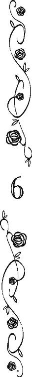
〝認めたくないが、僕はあんたに惚れてる〟
耳にいつまでもあの夜の彼の声が残っている。
アッシュ・ローズベリー改めアッシュ・ティンカーは、アンと共に屋敷に帰ってくることはなかった。
──まさか、ご主人様がグラディス女王陛下のお孫様でいらっしゃったとは！
裁判も無事終わり、アンのご主人様の疑いも綺麗さっぱり晴れた。
法廷でのマールバラ白公爵を見てそうではないかとアンも推察していたが、祖父の話では彼は若い頃グラディス女王陛下の崇拝者の一人だったらしい。
女王陛下が後ろ盾のない王女として不遇を託っていた頃から、彼女のことを何かと気にかけ、いつか白公爵夫人に迎えようと冗談に見せかけた求婚を繰り返していたとか。
異教徒と疎外されていたエフラム王太子殿下に兄のように慕われるほど親切にしていたのも、元々は心優しい人なのかもしれないとアンは思う。
彼は長く慈しんで庇護してきた子供達二人が結婚することを知り、裏切られたような気持ちを抱き、その感情が異教徒嫌いへと歪んでいったのかもしれないと、アンの祖父も言っていた。
秘密裏に行われた結婚式での挙動を怪しく思い、アンの祖父は友人だと思っていた彼に噓の情報を流すようになったという。
アンの父を女王の子だと告げたり、事情を知る陛下の腹心経由で陛下の本当の子供は事故死したと伝えたり、陛下からエフラム殿下との恋を悔やみ、全てを知るアンの祖父を疎むようになったと直接白公爵に言って頂いたりしたとか。
女王陛下の寵愛深い異父姉と離婚し、陛下からも蟄居を言い渡された、薔薇狂いの貧乏伯爵。
偽の情報を流し無能者を装うことで、アンの祖父は自分がそんな重大な秘密を女王陛下と分かち合っているわけがないと、マールバラ白公爵や彼の周辺の秘密を知る者達からの目を眩まし続けた。
二年ほど前、プリムローズが祖父の弟であるトマスに接触したことから、祖父はようやく王女殿下が生存していることを知ったそうだ。
また、トマスは王女殿下と再会したおり、彼女から兄の娘ではなく、エフラム殿下の娘なのだと聞かされたそうだ。
自分達兄弟の異母妹が特段エフラム殿下と仲が良かったわけでもないことや、彼が女王陛下と非常に親しかったこと、王女殿下が若き日の女王陛下に似ていることなどから、トマスは真実を嗅ぎ当てたらしい。
──トマス様は、プリムローズ様が女王陛下のお子ではないかとスコット様を問い詰められたのだとか。
それで言い争いになり、あの事故が起こったのだと、真相を聞かされたアンは本当に吃驚した。
ローズベリー青伯爵家が度々襲われたのも、スコット・ローズベリーが女王から預かった王女殿下やその出生証明書、女王陛下とエフラム王太子殿下の結婚証明書などを奪うためだったらしい。
王女殿下が正当な女王の嫡子であることを証明する書類は女王陛下の元に戻されたし、王女殿下とそのご子息であるアンのご主人様も厳重に警備された王宮の一郭に移られた。
最早、この屋敷を襲う者はいない。
それやこれやで、今夜は久しぶりに安心してゆっくり眠れると思ったが、今度はベッドに入ったものの、アンは興奮してなかなか寝付けなかった。
ご主人様から初めて頂いた贈り物でもあるこのベッドは、若い女性向きとは言い難い──アンは男ということになっていたから当然だが──飾り気のない実用的なものだが、マットレスは極上で、いつもは横たわるだけで心地よさに即眠りにつくアンなのだが。
──王太孫殿下だったとは。
白竜王国の王女と緑竜王国の王子の間に生まれた姫君をお母様にお持ちとは、ご主人様の気品がただものではなかったのも道理だと感心しきりのアンである。
──大変お優しくて、賢くていらっしゃるのも、お祖母様のグラディス女王陛下に似ていらっしゃるからでしょうね。
ご主人様のあの剛胆さは、当時世界最強を謳われた至福艦隊を降したエフラム王太子殿下から受け継がれたのかも知れない......などと、思いを巡らす。
〝認めたくないが、僕はあんたに惚れてる〟
「あ！」
あの夜の記憶が蘇ってきて、アンは慌ててベッドから飛び起きた。
「あ、あれは、ご主人様の気の迷いです......」
自分に言い聞かせるために、アンは声に出して言った。
アンの自慢のご主人様は、偽者のローズベリー青伯爵だった。本物は屋敷の皆が〈ナッシュ様〉と呼んで可愛がってきた少年だ。
彼を新しいご主人様にすること自体に、アンは微妙に納得がいかなかった。
──ご主人様に比べますと、やや見劣りが............。
自分の弟に対して......と言うより弟だから辛辣になる。
だが、そうは言っても弟のナッシュはこの由緒正しい青伯爵家の人間だ。
死んだことになっていた前青伯爵のスコット・ローズベリーが生きていることが公になったのだから、彼が復位するかもしれない。
ナッシュが当主になるにしろ、祖父が復位するにしろ、どちらにしろ明日からまた忙しくなる。しっかり寝なくてはと、アンは再びベッドに入った。
「......王太孫殿下......」
王立裁判所からの帰り際、アンのご主人様だった方は、そう呼ばれていた。
正式な立太子の儀式などがあったわけでも議会で承認を得たわけでなくても、今日の女王の態度を見れば、誰の目にも連合王国の次の王になることは決まったも同然なのだろう。
グラディス陛下は素晴らしい君主だが、王は男が望ましいとする意見も少なくはない。
楽天家で基本他人に優しいアンでさえ、あの気性の激しそうな王女殿下が女王陛下のあとを引き継ぎ、うまく国を治めるのは難しいように思う。
それに引き替えアンのご主人様だった方は、下々への気配りも忘れない大変心優しい方で、またその有能さときたら一晩でも語り尽くせないほどであるからして、母君を飛ばして次の主君にと周囲から望まれるのは（アン的には）物凄く理解できる。
さて、そんな光竜連合王国の輝かしい国王になる方と青伯爵家の執事の自分では、あまりにも身分が違い過ぎて。
オリーブは先日から皆にアンの両親のことを説明し、青伯爵令嬢アンジェリカになるべきだと始終アンに言っている。
けれども、アンはそんな気になれない。
伯爵令嬢になるより、執事のジョージ・ハワードでいたい。
母はこの屋敷で立派に働き、ご主人様やそのご家族様に裏表なく仕え、アンに居場所を見つけることを望んだ。
そうでないなら、最初から伯爵令嬢として育ててくれと、アンを預けたはずである。
──たとえ仕える相手がナッシュ......様であっても。
自分は青伯爵家の執事のままでいて、ご主人様もといアッシュ王太孫殿下は、ゆくゆくは連合王国の玉座に上られる。
「光竜連合王国の、アッシュ国王陛下」
連合王国の国王陛下ならば、万が一アンが青伯爵令嬢だと認められても、ぜんぜん身分が釣り合わないと思う。
外国の高貴な王女様や皇女殿下が妻となるのが相応しい。
「ご主人様は、とても立派な方ですから」
自分ごときにはもったいなさすぎる。
翌日、アンとローズベリー青伯爵家の使用人達は、ケント白公爵夫人から王宮の臨時給仕その他をしないかと誘われた。
今夜はアッシュ王太孫殿下のお披露目を緊急で行うのだという。
一日いや一秒でも早く諸外国にアッシュ王太孫殿下の存在を認めさせたいというのが女王陛下の意向なのだとか。
それで元々予定にあった舞踏会の規模を拡大し、格式を最上のものに変えたため、人手が足らなくなりアン達にお呼びがかかったという話だった。
アンは舞踏会の会場で給仕を、ノラとカラ、シドニーは専ら厨房で裏方仕事だが、時折会場に料理を運ぶ仕事が入っているという。
ベンも駐車場の整理に駆り出されるが、一通り招待客がやってきたら、彼らが帰るまでは目立たない所で舞踏会の見物をしていいという話だった。
──ロザリンド様は、ご主人様の晴れ舞台を私達にも見せて下さろうと考えられたのですね。
しばらく臨時雇いの仕事を断っていたアンだが、喜んで承諾した。
正式なお披露目と言えばナッシュもそうだったが、結局彼は病気のこともあり、老ハワード改めスコット・ローズベリーが、青伯爵に復位することになった。
今夜はその祖父がナッシュやリアノンを王宮に連れて行くことを請け負った。
そんなわけで招待客だったり給仕係だったり立場は様々だが、アッシュ王太孫殿下のお披露目の場に、ローズベリー青伯爵家の人々は立ち会えそうである。
「オリーブ様、必要な物は全て控えの間に揃えておきました。一応確かめて頂けますか。私はもう王宮に行かなくてはなりませんので」
招待客として出かける青伯爵達と違って、給仕その他の仕事を請け負ったアン達はかなり早い時間に王宮に行かなければならない。
オリーブを捜してリアノンの部屋に顔を出すと、彼女は彼女でリアノンのドレスの準備をしていた。
「ありがとう、アン。今、すぐ見に行くわ」
そう応えると、オリーブはアンと共にリアノンの部屋を出た。
控えの間まで歩きながらオリーブはさんざん悩んだ挙げ句、ランズダウン白侯爵の息子の嫁という立場で舞踏会に行くことに決めたと言う。
「ほら、スコット伯父様にあたくしをエスコートさせるわけにはいかないでしょう。伯父様がエスコートすべきご婦人は他にいるんだから」
サイモンとは離婚しましたと常日頃言っているだけにきまりが悪いのか、オリーブはそんな言い訳をアンに零した。
「そうですね、スコット様はロザリンド様を、サイモン様はオリーブ様をエスコートすべきです」
アンがオリーブの判断は当然だと頷くと、オリーブは立ち止まり、なぜだか物凄く大きな溜息を吐いて、アンの肩を叩いた。
「......あのね」
「はい」
アンも大人しく立ち止まって、オリーブの言葉を待った。
「............だからね」
「はい」
沈黙。
「──────オリーブ様？」
二十秒ほど待ってから、アンがさすがに心配になってオリーブに声をかければ。
「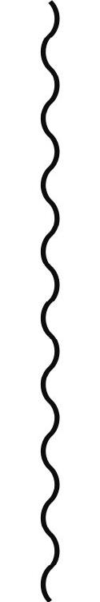もう、あたくしは！」
と、突然爆発した。
「あたくしは、アンが青伯爵令嬢としてスコット伯父様にエスコートされて王宮に行くべきだと言いたいんですがぁあああ！」
淑女らしくなく盛大に叫んだあとで、オリーブは「もう」と頰を押さえた。それから。
「あの偽者のローズベリー卿の下品な口癖が移ってしまったわ。あれで王太孫殿下だったなんて、詐欺もいいところよね」
などと、アンには非常に同意しづらいことをオリーブは口にして。
「ともかくアン、今夜の舞踏会は青伯爵令嬢として行くべきよ。ドレスはこの際、リアノン様のものをカラ達に調整して貰えばどうにかなると思うし」
「とんでもありません、オリーブ様！」
思いもよらぬことを言われて、アンは目を丸くした。
「私は、ロザリンド様に給仕の仕事を引き受けると返事しております。行くと言って行かないようなことはできません。カラやノラ、それにシドニーだって、初めての王宮で心細いでしょうし。それに、私のような者でも、いないと他の給仕の方々が困りますし」
アンの大真面目な言葉に、オリーブはこめかみのあたりを指で揉んだ。
「──でも、王太孫殿下は、アンがドレスを着て会場に現れたら、とっっっても喜ぶと思うわ」
「オリーブ様」
アンは困った顔で笑った。
オリーブはアンがご主人様に告白されたことを知っている。
だから、こんなことを言い出したのだろうと思う。
──ですが、身分が違い過ぎます。
あの夜、自分は彼を拒絶した。
それは、結局、間違いではなかったのだ。
自分はこの四つの王国を統べる光竜連合王国の王になる人の妃になれるような人間ではない。
「私はローズベリー青伯爵家の執事ジョージ・ハワードです」
「アン」
「当家の歴代のジョージ・ハワード達がドレスを着て、王宮に行ったなんて話、聞いたことがないですよ」
そう笑って、アンは会話を打ち切った。
そのまま部屋を出ようと、ドアを開けたところでナッシュの吃驚顔に出会し、アンは瞬いた。
「これは、ナッシュ様。失礼しました」
「ねぇ、待って！ 待って待って！ 今の話、聞こえちゃったんだけどっ！」
アンの腕にしがみつくようにして、ナッシュは彼女を引き留めた。
「アンさんが青伯爵令嬢って何？ 母さんがオレにいつか中央王都に行くことがあったら、アンジェリカって名前の女の子を捜してって言ってたんだけど！ オレより四つ年上なんだって。母さんと同じ蜂蜜色の髪と蜂蜜色の瞳をしてるはずだって。もし、もし、逢うことが叶ったら......」
アンの記憶にあるのは、泣いてばかりの赤ん坊の彼だった。
赤ん坊の頃とまったく変わらず、顔をくしゃくしゃにして弟は言葉を続けた。
「......母さんが、ずっとずっと......姉さんの幸せを祈っていたこと......伝えて......欲しいって......」
「......そうですか......」
胸が温かくなる。
とうとう再会できないまま母が亡くなったことは悲しかった。が。
──ご主人様が母様の傍にいて下さって、本当に良かったです。
あのご主人様に出逢ってナッシュを託すことができたのだから、きっと安心して父の元へ行けたことだろうと思う。
──できれば、私が、このお屋敷で十分幸せに暮らしていることを、知ってほしかったですが。
しかし、天国からきっと今のアンを見て、母も満足してくれるだろうと思う。
「ねえ、なんで、オレの姉さんがここで執事をしてるの？」
「そうでしょう、あなたもそう思うわよね？ アンは青伯爵令嬢として、着飾って王宮へ行くべきだって」
オリーブがやってきて、言葉を添える。
「もちろんだよ！ だって、アッシュはアンさんのことが好きなんだしっっ！」
「え？」
さーっと顔に朱が昇ったのを自覚する。
──あの、それは。
ご主人様は何か私のことを言っていたのですか──と、問いたい気持ちを、アンは全力で抑え込んだ。
──問うて、聞いてもしょうがないです......。
アンから見れば、もう雲の上の人だ。
そうアンは思っているのに。
「殿下はあなたには、アンのこと何か言ってたの？」
「ちゃんとは言ってくれなかったけど、見てたら解るよ！」
「まあ、そうよね......」
あっさりオリーブが問い、ナッシュの回答に彼女がしみじみと頷く。
アンとしては非常に居たたまれない。
「ねえ、アン。次のローズベリー卿もこう言っているわ。観念しなさいよ」
「アンさんがドレスを着てくれたら、きっとアッシュ、大喜びだよ！」
薔薇色の絹のドレス。白い繊細なレース。煌めく宝石の首飾り。
アンだってそういうものに憧れがないわけではない。
──ですが。
アンジェリカが生まれなければ、ヒース様は死ななくても良かったのではないかしら？
ただ一度だけ、父が死んだ夜に母が言った言葉。
身分違いの恋を貫いて、間違いなく父も母も幸せだったとは思う。
その反面、あんなに若くして、貧しさの中で子供を残して亡くなるのは、間違いなく不幸だったとも思う。
──私は、ご主人様にその高貴な身分と高邁なお人柄に相応しい場所で、飢えや寒さに震えることなく、いついつまでも末永く幸せに暮らして頂きたいのです。
それが自分の一番の願いだから。
「私は当家の執事です。──仕事がありますので、皆様より先に王宮に参ります」
礼儀正しく一礼し、アンは二人を部屋に置き去りにした。
その夜、繁栄する光竜連合王国の華やかな王宮では、祝賀の舞踏会が開かれていた。
長らく連合王国の首脳陣を悩ませていた女王の後継者問題が、一気に解決したからである。
女王の一人娘とその息子が見つかったのだ。
女王は両脇に王女と王太孫の席を作り、祝辞を述べる上級貴族や各国の大使に、嬉しくてたまらないと言わんばかりの満面の笑みを振りまいた。
それこそ王女と王太孫の仏頂面を打ち消す勢いの笑顔である。
──そうは言っても、ご主人様もプリムローズ様も並々外れて美しい方ですから、仏頂面であってもまったく問題はないと思うのです。
給仕をしながら、玉座の置かれた雛壇を仰ぎ見て、アンはつくづく思った。
──本当になんて立派な方でしょう。
王宮で一番の大広間は、大勢の貴族達で埋まっていた。
大広間の片隅に料理や飲み物が置かれ、アンは貴族達にその料理を取り分けたり、飲み物をグラスに注いだりする仕事をしていた。
しかし、雛壇のご主人様（だった方）が目に入れば、ついつい立ち止まって見惚れてしまう。
これでは仕事にならないと、アンはなるべく玉座のほうを見ないようにして、給仕の仕事に努めた。
──あれは......？
厨房と会場の間で料理を運ぶ裏通路の入り口に、祝いの席らしからぬ喪服に身を包んだ男がいた。
今日は本当に多くの貴族達が訪れているし、裏通路の入り口前とはいえ、会場内には違いない。
喪服を着ているのも、単に喪中と考えられる。
「ハワード、どうかしたのかい？」
「スコット様！ あ、いえ、失礼しました。お飲み物をご所望でしょうか？」
「そうだね。シャンパンでも」
言って極自然な動作でアンとの距離を詰め、グラスを受け取りながら、アンの祖父は誰にも気取られぬような早業で、アンのお仕着せのポケットに拳銃と数個の銃弾を滑り込ませた。
「......スコット様？」
「ぼくより、君のほうが腕は確かだ」
ポンと肩を叩いて。
「今日は女王陛下もご機嫌が麗しく、どうも悪酔いしている者が増えてきたようだから、ハワードも気をつけて。──〈青い薔薇〉が散らないように、頼む」
給仕と貴族の雑談として、ギリギリ不自然にならない会話を交わすと、片手を挙げ、祖父はアンから離れて人混みの中に紛れていってしまった。
──スコット様の仰りたいことは、女王陛下の機嫌が良いが故に悪酔いしている人が増えているということでしょうか？
つまり、女王陛下の吉事を不愉快に思っている者達がいるということか。
──〈青い薔薇〉が散らないように、とは......ご主人様が命を狙われているということ......？
確かに将来、自身や自分が推す王位継承権保有者が王になることを夢見ていた者達には、アンのご主人様の登場は許し難いことだったろう。
アンには理解しづらいことだが、国王や公爵になるために、殺人も厭わない人間というのは、存在する。
次々に舞い込む給仕の仕事を捌きながら、スコットの忠告を無にすまいと、アンは全神経を張り詰めて会場内の人の動きを探った。
──あ......？
何気なく場を見回していて、違和感を覚えた場所を二度見した。
先ほどの喪服の男が、人混みを搔き分け雛壇に近づいている。
さして急いでいるように見えない。
もっと前で女王ご一家を見ようとしているだけのようにも見える。
だが、アンの目を惹いたのは、よく見れば彼の背格好が知っている人物に似ていたからだ。
──あれは......キアヌス様......？
給仕のためだと思われるようにグラスの載ったトレイを手に、アンも男に近づいた。
彼が玉座に近い位置までやってくると、なぜかプリムローズ王女殿下が座を立ち、壇下に降り、彼を差し招いた。
異例の行動に人々はざわめき、男に道を空けた。
「あたくしの従弟のキアヌス・ローズベリーですわ」
本来スコットの甥キアヌスと彼女は従姉弟の関係にないのだが、スコットの娘として育った彼女の認識では従弟のままらしい。
「ああ、スコットの甥ね」
女王は気乗りしない様子で、キアヌスを迎えた。彼がローズベリー青伯爵家に膨大な借金を被せた挙げ句、逐電したことを知っているのだろう。
「キアヌス、息子を紹介するわ」
雛壇の段上で女王のものよりやや小振りながら豪奢な椅子に座ったアンのご主人様の足元にキアヌスは一度跪き、そして──。
「ご主人様、危ない！」
勢いよく立ち上がった彼の全身から放たれた殺気に、一番早く反応したのはアンだった。
咄嗟に持っていたトレイを彼の頭に目がけて投げつけたのである。
トレイとグラスの直撃を受けて凄い形相で振り返ったキアヌスの手には、隠し持っていたと思われる鋭いナイフがある。
立ち上がる時に胸元から取り出し、襲いかかろうとしたところをアンが投げたトレイに邪魔された形だ。
皆が呆気にとられたのは、一瞬。
アンのご主人様が彼を捕まえようと腕を伸ばした瞬間、キアヌスは身を翻し、傍らにいた王女殿下の体に腕を巻き付け、ナイフを突きつけた。
「さあ、王女殿下の命が惜しければ、動かないで下さい、誰も」
突然現れた脅迫者に、場の紳士淑女達は悲鳴を上げて、壁際によった。
玉座の前に、ぽっかりと空間が空く。
「こんなことをして、何が望みです、キアヌス・ローズベリー!?」
「そこの王太孫殿下の命ですよ、女王陛下」
「なんですって？」
「キアヌスの人生は、もうメチャクチャなのです。マールバラ白公爵は失脚してしまったし、ローズベリー青伯爵家には戻れない。キアヌスは最早、そこらの庶民と同じように道端で野垂れ死ぬしかありません。──全部、そこの王太孫と、その父親のせいです。キアヌスには復讐する権利があります」
──い、意味が解りません、キアヌス様!?
アンだけでなく場の大多数の者にとっても、キアヌスの論理は理解不能だったろう。
「ぁ？ 何、それ？ 八つ当たりですかぁああ────？」
言いながらアンのご主人様は、一歩、キアヌスに近づこうとされた。
キアヌスも王女殿下を抱えたまま、一歩下がる。
「動かないで下さい！ 母親の命が惜しくないんですか？」
「衛兵！」
ケント白公爵夫人が呼ぶ。
「だからぁ！ キアヌスに、近づかないで下さい！ 王女殿下を傷つけてしまいますよ？」
「！」
駆け寄ろうとした衛兵達の足が竦む。
「キアヌス、あなた」
「従姉様、あなたも動かないで下さい。このナイフは本当によく切れるのです。それとも、この綺麗な体を切り裂いて、汚らわしい異教徒の血を抜いてしまいましょうか？」
ナイフを突きつけられた王女殿下は、不敵とも言える笑みを浮かべた。
「あなたにそんなことができるのかしら？」
「できますよ。もっと早くしておけば良かったですね。従姉様が、身も心も汚物のような異教徒になる前に」
「──」
「ですが、まずはおぞましい異教徒の息子を血祭りに上げましょう。ねぇ、アッシュ・ティンカー、このキアヌスの前で死んでくれないかなぁ？」
煙草の火を借りるかのような気軽い口調だ。
それに対して。
「へっ、えぇええ──────」
アンのご主人様（だった方）は、いつものごとくだった。
腕組みしてキアヌスを見下ろす視線は、凍りつくほど冷ややかだ。
「僕に、その女のために死ねと？」
──ご主人様！
「僕を殺そうとしたその女のために、僕に死ねと？」
いつもの声だ。
いつもの言い方だ。
冷たくて刺々しい。
他の誰が聞いても、王太孫殿下はご自身の母君を平然と見殺しになさろうとしていると、判断しただろう。
けれども、その声に潜む悲鳴をアンだけは聞き取った。
どのような母親であれ、その死を願うような子供はいるはずがないと、アンは思う。
──まして、ご主人様は大変お優しい方ですから！
間違っても王女殿下を傷つけるようなことがあってはならないと、アンは彼らを見ながら改めて決意する。
キアヌスが女王陛下や王女殿下、アンのご主人様（だった方）らと話している間、じりじりとアンは場所を移動した。
キアヌスの目に留まらぬように、ゆっくりと、だが確実に。
周囲の人々は固唾を飲んで、キアヌスと王太孫殿下のやりとりを見守っている。
「さあ、早く死ぬがいいよ、アッシュ・ティンカー！ それとも、母親の血を見ないうちには死ねないのかな？」
アンのご主人様の唇の端が、僅かに歪んだ。
──ご主人様......。
いつもの軽妙な返しをなさらないのは、アンのご主人様も母親を人質に取られては打つ手がないのだろう。
ゆっくりと移動していたアンは、ようやく目的の場所に辿り着いた。
改めて〈的〉を見る。
距離と角度と、そして障害物の有無を確認する。
──問題は、ありません......！
自分の腕前の確かさは、知っている。
迷う必要はない。
だから、目にも留まらぬ速さで銃を構え、一秒もかけずにその微妙な照準を合わせ、誰かがアンが銃を持っていることに気づき声を上げる前に、撃ち抜いた。
プリムローズ王女殿下に突きつけられていたナイフの刃を。
「！」
己の真横から絶妙な軌道を描いて飛んできた銃弾にナイフを持って行かれたキアヌスは、何が起こったのか一瞬解らなかったようだった。
空っぽになった右手を、不思議そうに見遣る。
まさかそんな神業的なことができる人間がいるとは、キアヌスだけでなく場の誰もが思っていなかっただろう。
なにせ銃弾は王女殿下はもちろんキアヌスの体にも髪の毛一筋ほどの傷もつけなかったのである。
キアヌスはナイフを持っていた手にかなりの衝撃を受けただろうが。
「キアヌス様、その方を放して下さい」
新しい銃弾を装塡したアンが声をかけると、キアヌスは王女殿下の首に腕を巻き付けたまま、ゆっくりと振り返り、彼女が構えた銃を見詰めた。
「おや、アンジー、お前でしたか」
動揺を一瞬で収めると、キアヌスは小馬鹿にしたような表情で口角を上げた。
「お前から拳銃なんて向けられても、キアヌスは怖くないですね。だってアンジー、お前は人殺しができるような子じゃないと、キアヌスは知ってますからね」
「殺せます」
硬い表情でアンは答えた。
キアヌスが言うとおり、今までアンは人を殺すことが怖かった。
これまで〈青い薔薇〉を狙う盗人達を取り逃がしてしまったのも、結局のところ人を傷つけたり殺したりすることへの躊躇いがあったためだと思う。
技能は磨いた。数十ヤード離れた標的さえ、正確に撃ち抜くほど。
いくつも手柄を立てた。
自慢話は下品だからとご主人様には話したことはないが、実は女王陛下から勲章を貰ったこともある。
それでも人を殺すために撃ったことはないし、傷つけたことも、今までなかった。
しかも、キアヌスはお互い子供の頃から知っている。
同じ屋敷で一緒に育った。それもいつか自分が仕える主になる方として。
──ですが。
「その方を、放して下さい。......この銃で殺されたくなければ」
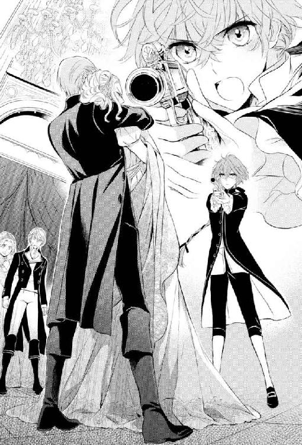
もう一度アンは言った。
最早この引き金を引くことに躊躇いはないのだと、宣言した。
キアヌスはおやおやと眉を大げさに跳ね上げた。
「お前が？ ローズベリー青伯爵家のキアヌスを？ お前がこんな小さい頃から仕えてきたご主人様を？」
できるわけがないと、嘲る口調が言葉よりも明白にアンに語る。
「あなたは、私のご主人様ではありません」
実際キアヌスは正式にローズベリー青伯爵家の当主になったことはない。
だが、そういうことよりも。
「私のご主人様は、アッシュ・ローズベリー様。いいえ、アッシュ・ティンカー様、ただお一人です」
「！」
「ご主人様を守るためなら、私は百回でもあなたを微笑みながら殺すことができます」
「──」
アンの本気を理解したらしい。
キアヌスは顔から笑みを消すと、真顔で視線を左右に動かした。
弾き飛ばされたナイフまたは床に砕け散ったグラスの破片。
そのいずれかを手に入れようとして、距離を目測しているのだと、すぐに解った。
アンから見て右にナイフは転がっており、ガラスは左側。
キアヌスが動くならば、アンは彼を殺さなくてはならない。
その時、誤って王女殿下を傷つけるようなことはできないから、キアヌスが右に動くか左に動くか、重々注意して見極めなければならない............。
「うわぁああ！」
突如キアヌスは奇声を上げて、床に倒れた。
「！」
キアヌスがアンとの会話に集中しているのを見て、アンのご主人様は背後から体当たりを喰らわせ、彼を床に打ち伏せたのだ。
「衛兵！ こいつを縛る縄を」
アンのご主人様はすぐさまキアヌスの両腕を後ろに回し、母親を解放させた。
アンがその足元に跪くのと、女王が段上から娘の元へ駆け下りてくるのは、ほぼ同時で。
「ご主人様、大丈夫ですか!?」
「プリムローズ！ ああ、プリムローズ、大丈夫？」
放心した王女殿下を抱き締める女王陛下。
その横でキアヌスを衛兵に渡しながら、ご主人様がアンに尋ねられたのは。
「......ところで、まだ、僕はあんたのご主人様だったんですかぁああ────？」
「え？」
例の口調でご主人様（だった方）に問われて、アンは一瞬意味が解らず瞬いた。
まだも何もアンにとっては、目の前の華麗でご立派で非の打ち所のないくらい素晴らしいご主人様は、ご主人様以外の何者でもない。
............が。
「あ、あ、あ、あ、あの！ も、申し訳ございません!!」
今現在のお互いの関係と先刻キアヌス相手に大声で宣言した内容の無礼さに気づき、アンは慌てて頭を下げた。
目の前のご主人様もとい王太孫殿下は、最早アンが仕えるローズベリー青伯爵家とは無関係な方だ。
いやいや、無関係どころか将来光竜連合王国の国王陛下となられる方である。
お仕えする者など百や二百ではすまないだろうし、アンよりずっと身分の高いお仕えを希望する貴族の方々も大勢いよう。
ローズベリー青伯爵家の当主ならともかく、アンが彼のことを〈ご主人様〉と呼ぶのは大変大変失礼なことである。
本物の老ハワードに叩き込まれた各種の礼儀作法を思い出し、アンは背中に冷や汗をかきながら、それでもつい、言ってしまった。
「で、ですが、その、もし、ご主人様が許して下さるならば、私をご主人様の執事に......」
「ぁ？」
不審そうな眼差しが降ってくる。
「あ、いえ。あの、執事は無理ですよね」
王宮にはそういう役職の人物は既にいるはずである。
「そのぅ......、執事の見習い、とか」
「ぁああ？」
今度は不機嫌そうな声が降ってきた。
「いえ......、従僕、とか」
「あああぁ!?」
ついには爆発的に叫ばれて、アンは大理石の床の上で小さく縮こまった。
「──何、言ってんの、あんた？」
物凄く頭が痛そうな顔をなさっていらっしゃる。
「申し訳ございません。ただ、あの、もう贅沢は申しません。厨房の皿洗いでも構わないので、どうかどうかご主人様にお仕えさせて下さい!!」
こんな時にこんな所で頼むようなことではないというのは重々承知していたけれども、アンは頼まずにはいられなかった。
──心臓が、止まるかと思いました......。
自分の身分では、彼の妃になれるなんてとても思わない。
妃になろうとも思わない。
だから、遠くで彼を仰ぎ見て、幸せを祈っていればいいと思っていた。
──でも、国王陛下になられるということは、命を狙われることも多くなりますよね？
傍に仕えていたら、今日のように彼を助けることができるかもしれない。
いつかのように、余計なお世話と言われる可能性も高いが。
──それでも、私が知らないうちに知らない場所で、ご主人様が殺されたのを後から知るより、ずっとずっといいです。
「あんた............」
最早二の句が継げないと言わんばかりの溜息混じりの声に、アンはさらに身を縮こまらせた。
──こ、こんな時に、こんなお願いをするなんて、非常識でしたでしょうか......？
アンをマジマジと見下ろしたご主人様は、ガシガシとその青みがかった銀色の頭を搔きむしられて。
それから、意を決したような顔で腕を組むと、アンをもう一度見下ろして。
「生憎、王宮には執事も執事見習いも従僕も従者も、それからなんだ？ 皿洗い？ 全部埋まっている」
「あ......そ、そうですよね..................」
臨時雇いならともかく、王宮では正規の人員に空きが出たらすぐに補充されるのはアンも知っている。
ますます縮こまるアンである。
そんなアンを見て。
「──でも、あんたにできそうな仕事が、ちょうど一個だけあるけど？」
と、今現在のところ〈元〉がつくアンのご主人様は親切にも言って下さった。
「な、なんでしょうか!?」
ガバッと勢い込んでアンは今現在の（略）ご主人様を見上げた。
そんなアンを見て、今（略）ご主人様は気難しい顔で首を捻られた。
「......あんたならできるかもしれないけれど......、でも、難しい仕事だからなぁ。やっぱり、あんたでも無理かもしれないなぁ......」
「やります！ ぜひやらせて下さい！ どんな仕事でも絶対にやりとげてみせますから、お願いします！」
〝可愛いアン。母様は他の鳥になりたかったけれど、カッコウにしかなれなかった。でも、お前は、お前だけはどうかこの屋敷でカッコウ以外の鳥になって〟
〝居場所を見つけて。お前だけの〟
〝どうか巣を持たない鳥のような暮らしを、お前がしませんように〟
母親の言葉が脳裏を過ぎる。
──でも、たとえローズベリー青伯爵家を離れても、母様は許してくれますよね？
自分の居場所は、このご主人様の傍ら以外考えつかないのだから。
「解った。あんたにこの役職は任せる」
ポンと肩を叩かれ、立つよう促された。
主従契約は目出度く成立したらしい。
「それで私は何をすればよろしいのでしょうか？」
「ああ......うん」
珍しく口籠もられてから、ご主人様が早口に告げられた役職は。
「王太孫妃殿下」
「王太孫妃殿下ですね？ かしこ......えっ!?」
耳慣れない単語を言われて、耳に聞こえたまま繰り返して。
アンは固まった。
恐怖で凍りついたとも言える。
「────────お、お、お、お......」
王太孫妃殿下!? それは、つまり、あの..............................とかなんとかかんとか。
言おうとしたが、硬直した喉から声が出ない。
「──何か不満でも？」
そこでご主人様にムッとした顔で言われて、アンは反射的に首を振った。
不満。
不満なんてあるわけない。
あるわけはないから首を振った。
が。
不満はないが恐ろしい。
恐ろしいけれど嬉しい。
嬉しいけれど、自分にそんな途方もない役職が務まるとは思えない。
「......わ、私で、その、よろしいんですか？」
ようやくつっかえつっかえ言葉が出た。
「むしろ、あんたじゃないと困るんですが」
──私じゃないと、困る......？
見上げたご主人様の笑顔が、初めて目にしたような優しい表情で泣きそうになる。
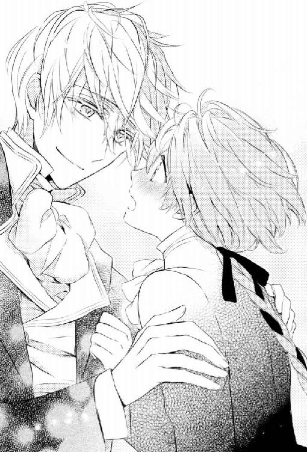
──私が必要だと思って下さっているのでしょうか、ご主人様は？
執事としては失敗ばかりだった気がするのですが──と、この期に及んで、いささかずれたことを思うアンだったが。
「その子を選んだら、妾が困りますよ、アッシュ・ティンカー！」
そこへ我に返ったかのように不満の声をあげたのは、二人の横で暴漢に襲われた王女殿下を抱き締めていた女王陛下である。
「その子は男の子じゃないの！ ええ、ええ、百歩譲ってあなたが平民の子を妃としたいと言っても妾は許しますが、男の子を妃になんて女王として妾は到底許しませんよ！」
「ああ、あんたが気にしそうなことについて、無事、お祖母様の許可が下りたみたいだ」
女王陛下の剣幕を他所に、アンのご主人様は涼しい顔で言った。
「あ、あ、あの......」
何をどう言えばいいか解らない。
「恐れながら女王陛下、アンはこのような格好をしておりますが、当家当主スコット・ローズベリーの孫娘アンジェリカでございます」
茫然自失状態のアンの様子を見かねたのか、オリーブが人混みを搔き分けて前に出ると、アンの正体をさくりと暴露した。
「ぁ？」
「スコット・ローズベリーの孫娘？」
「スコット、あなた！」
何も知らないアンのご主人様や女王陛下はもちろんケント白公爵夫人も悲鳴のような声をあげる。
「え、いや、ぼくは何も......」
元妻に呼びつけられて場に出て来たアンの祖父は、目をシロクロさせている。
「スコット伯父様、アンがヒースお従兄様とセシリアの娘であることを知らなかったのですか？」
「いや、ぼくはアンのことは、メアリの実家に以前仕えていた使用人が彼女に押し付けて行方を眩ませたのだと、そういう風にメアリから説明されて、ヒースとセシリアの娘だとはまったく........................」
オリーブの母はアンの母から彼女を引き取った時、スコットに女の子であることは告げたが、彼の孫であることは告げなかったらしい。
「男の子はキアヌス兄様の爵位継承の邪魔になるからと引き取らなかっただけでなく、アンが本当の孫であることを皆に黙っておくなんて、お母様ったら心が狭すぎるわ」
オリーブが呆れたように呟く。
青伯爵家の財政がすでに傾いていた時代だから、二人も伯爵令嬢を抱えたくなかったメアリの気持ちは、アンには理解できることだった。
「あんた、セシリアの娘だったのか......！」
「あなたが、セシリアとヒースお兄様の......！」
アンの正体には、ご主人様も王女殿下も驚かれたようである。
そんな周辺の騒動を他所に、アンはいまだパニックに陥っていた。
しかしながら衝撃度で言えば親族や関係者以上に、舞踏会に集まった貴族達のほうがより大きかったのかも知れない。
そもそも女王陛下に跡継ぎの王子が現れたことにより、多くの貴族が陛下の婿になるとか跡継ぎになる夢を諦めた。
さらには王太孫妃を夢見た淑女や外戚になる大望を抱いた貴族達を、今この場で瞬殺している。
しかも、ローズベリー青伯爵家の従者で王宮の臨時雇いの従者アンジーは、ご婦人方の人気者だった。
本気で恋していた令嬢も二桁近くいたりするし、同じく十指できかない数の令夫人が、アンジーに愛人になるよう持ちかけた経験があった。
彼女達はアンジーが王太孫妃になった時に、自分の秘密がどうなるのかと真っ青になっていた。そのため。
「何もかも燃え尽きたあとの〈灰〉を返して貰おう、白竜王国の女王グラディス。仮にもエフラム様の妻を名乗るなら、一族の族長の命に従って貰おう。一族にそいつは入り用だ」
突然、風を纏って現れた異教徒に慌てふためくには、もう彼らの神経は参りきっていた。
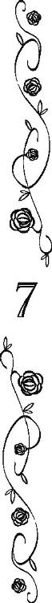
「何もかも燃え尽きたあとの〈灰〉を返して貰おう、白竜王国の女王グラディス。仮にもエフラム様の妻を名乗るなら、一族の族長の命に従って貰おう。一族にそいつは入り用だ」
アッシュが何もかも燃え尽きたあとの灰だと言うならば、アッシュの父は火が付けられる前の墨のような男だ。
髪も瞳も黒く、その肌も浅黒い。
その暗い色彩と対照的に、全身を色とりどりの、何枚もの布で包むような姿は、〈妖術使い〉の正装だ。
今では稀な〈風〉の〈妖術使い〉は、この王宮に〈妖術〉を使って乗り込んできたものと思われた。
「──緑竜王国の者よ、妾の世継ぎを言祝ぎに来たか。大義に思う」
女王はアッシュが呆れるほど素早く、大国の偉大な女王らしい仮面を被った。
「四色の竜と四種の妖精と、天と地の間におわす全ての神々と福音教の主に誓って、光竜連合王国の女王グラディスは、そなたを歓迎しよう」
異教徒の女王から彼女の父の代に定められたお互いへの正式な挨拶をされて、アッシュの父は舌打ちしそうな表情を浮かべた。
礼儀には礼儀を、無礼には無礼を。
それが一族の仕来りだ。
「......福音教の神と、四色の竜と四種の妖精と、天と地の間におわす全ての神々に誓って、吾、緑竜の一族の族長オウァインは女王の世を言祝ごう」
「オウァイン殿は我が夫エフラムの甥にして、我が娘プリムローズの夫、我が世継ぎアッシュの父君と聞いておる。別室にて歓待致そう」
キアヌスの暴挙にくわえ、アッシュの父オウァインがやってきたことで、舞踏会はなし崩しに終了となった。
そして、女王の私室の一つで急遽オウァインとの会見の場が設けられた。
場に集められたのは、この国の表裏両女王にスコット・ローズベリー、プリムローズとアッシュ母子。それからアンもアッシュの婚約者という名目で加えられた。
「一族の望みはただ一つ。何もかも燃え尽きたあとの〈灰〉を返して貰おう」
「あなたの妻のプリムローズ様は、ここに残しても構わないと？」
ケント白公爵夫人が確認の言葉を発すると、アッシュの隣で母が固くなった。
「ローザは......異教徒の母の元が良いと言うのならば、好きにすればいい」
「あなたにとって、あたくしはもう不要な存在ですものね」
「お前の望みどおりにすればよいと言っている」
「ええ、あなたには祝福されない異教徒の娘は不要でしょうから、母の王宮に残ります」
「そのようなことは、吾は言っていない」
「祝福されない異教徒の血を持っている以上、聖者を生むことはできないと」
「吾は、聖者が生まれないのはお前の母が異教徒だったからで、お前のせいではないと言った記憶はある。お前に向かって祝福されない異教徒の娘が不要だと言った記憶はない」
「──なんですって？」
「お前の母が祝福されない異教徒なのは、お前のせいではない。お前が聖者を産めなかったとしても、お前のせいではないと言った」
「あなたは、アッシュがエフラム様の生まれ変わりでなかったのは、あたくしの母が異教徒だからだとしか言っていません」
「確かにそう言ったが......お前が吾の傍で四六時中不機嫌だったのは、そのせいだったのか？」
二十年も前にかけた言葉足らずな慰めが、自分達夫婦の不和の原因になっていたことに、父はようやく気づいたようである。
ああ見えて母に甘かった父は言わなかっただろうが、一族の者が異教徒のことを話す時、必ずのように〈祝福されない〉という言葉をつける。
一族の者から〈祝福されない異教徒〉の話を聞く度に、母の中で父にもそう言われたような錯誤が生じたのだろうとアッシュは思う。
「お前はすでに一族の義務を果たした。番の鳥は共に居るものだが、お前は一族であって一族でない者。義務を果たした後までお前を一族という鳥籠に閉じ込めるつもりはない」
「それは」
何か言いかけた母の肩を叩き、アッシュは黙らせた。
「問題を整理しよう。族長が僕に一族の元へ帰れというのは、一族が選んだ女性と僕が結婚すれば、二人の間の子供としてエフラム様が生まれ変わってくれると信じているからだよね？」
「信じるも何も〈星見〉達の託宣だ」
黒い影のような大男はムッとした顔で答える。
一族の中では目下の者が目上の者に指示を出すことは好まれない。息子が──それが連合王国の王太孫と認められたような人物であっても──族長の父を差し置いて場を仕切るなど天と地が入れ替わってもありえない。
「〈星見〉達がどう言おうと、僕はここにいるアンジェリカ・ローズベリーと結婚する」
自分の隣に座るアンを視線で示して、アッシュは言った。
アンはまだ自分の状況に慣れていないようで、「結婚」という単語にびくりと体を震えさせ、それからアッシュを心配そうに見た。
だから、テーブルの下で彼女の手を握ってやると、頰が赤く染まった。
それを見て、アッシュもなんだかこそばゆい気持ちになる。
アンに出逢ってから、アッシュはどんなに不機嫌を装おうとしても無理だった。
胸に灯った温かなものを、打ち消すことも知らないふりをすることもできなかった。
カッコウの姫の父親がかけた呪いは解けた。
巣のない鳥のような暮らしを、自分達も自分の子供達もその子供達もすることはない。
この手を離さない限り、自分達は絶対に幸せになれる。
アンと己の星を観なくても、アッシュはその未来を確信できた。
「何もかも燃え尽きたあとの〈灰〉。貴様にそのような自由はない」
そんなアッシュに水を差すように父は言う。
何日かぶりにやっと逢えて、やっと求婚の承諾も得た──アッシュ的には、だ。オリーブあたりには非常に不満な求婚劇だったろう──というのに、なぜ、自分はこんなことを言われないといけないのか。
一瞬不満に思ったものの、アッシュは己の立場を思い出し、父の言葉の正しさを認めた。
──一族にとっては、裏切りになるか。
自分がアンを選ぶことで切り捨てるものを思えば、確かにただただ手に入れたばかりの恋人の存在に浮かれるばかりではいられない。
──アンを選んだ僕は、一族に何ができる？
ただの一異教徒アッシュ・ティンカーなら何もできないかも知れないが、光竜連合王国の王太孫なら？
「いいえ、この子は自由だわ。愛してもいない者と番になり、望み通りの子供が生まれなければ、『祝福されない異教徒の血のせいだ』と皆から責め立てられるような、そんな惨めな暮らしはあたくし達だけで十分だわ」
アッシュが考え込んでいると、代わりにと言わんばかりに母親が言い返した。
「──────惨めだったか」
オウァインは衝撃を受けたようで、長い長い沈黙のあとぽつんと言った。そして。
「異教徒の女王グラディスよ、我らはそなたら異教徒から何もかも奪われた」
アッシュの父は暗い視線を女王へ向けた。
「一族から故郷を奪い、エフラム様を奪い、エフラム様の娘を奪い、それだけで飽きたらず、エフラム様の孫もその子供、生まれ変わったエフラム様、その全てを独占するか？ 一族には何一つ残さずに？ そのようなことをエフラム様が許すとは到底思えぬ！」
魂が震えるような怒りと悲しみに満ちた緑竜王国の一族の声に、さすがのグラディスもケント白公爵夫人も言葉を返せなかった。
「何もかも燃え尽きたあとの〈灰〉。貴様は一族の辛酸を見てきてなお、祝福されない異教徒の娘と結ばれ、エフラム様の血を穢していくというのか」
「異教徒は、祝福されない存在なのでしょうか？」
唐突なアンの発言にオウァインはぎょろりと彼女を睨みつけた。
「唯一神アドナイだけを信仰し、四色の竜と四種の妖精と、アドナイ以外の天と地の間におわす全ての神々を否定する者は、我らの神々から祝福されない存在だ」
それでも無視せず回答するのは、アンの全身から溢れる善良さによるものだろうとアッシュは思う。
「逆にわたし達の信仰では、父なるアドナイからの祝福を拒む異教徒達は不浄な存在になりますね」
格別信仰深いわけでもないくせに、ケント白公爵夫人がそんなことを言った。
お互いにお互いを祝福されていない不浄な者達と蔑み合う。
それがもう何百年と続く福音教徒とアッシュ達の一族の関係だった。
「私は、薔薇を育てたことがあります」
険悪な空気の中、アンが突然にこにこしながらそんなことを言い出した。
「スコット様に教わって一生懸命育てました。そうしたら、とても綺麗な薔薇が咲いて。こんなに綺麗な花を咲かせることができる自分は、神様に祝福されていると思いました」
「異教徒でも、祝福されていると言いたいのか？」
相変わらず冷たい視線を向けるオウァインに、怯むことなくアンはいつものように微笑んでいる。
「はい。でも、同じようにコン親方の仕事を見ていても思うのです。コン親方は......ご存じですよね？ エフラム様の大工をなさっていた方です。私が子供の頃、小さな木片を彫って、あっという間にとても美しい小鳥を作って下さったんです。こんなに綺麗なものを作ることができるコン親方は、とても神様に祝福されていると思いました」
自分の父親であるコンのことを祝福されない異教徒の娘から誉めあげられて、オウァインはなんとも言えない顔で己の息子を睨んだ。
この娘はなんなのだ？ ──そんな心の声が聞こえてきそうな顔だ。
「神様がお一人なのかそうでないのか、私には解りませんけれども、この世界に生まれた生き物達は皆、神様から祝福されていて、不浄な存在などないと思うのです」
誰も彼も皆、この世界に生まれてきたのは、神様に祝福されたから。
──そういう考えだから、何もかも全肯定できるのか。
やや呆れた気持ちで、アッシュは一生懸命話すアンの横顔を見詰めた。
「......お前一人がそう思っていても、福音教徒の大部分が、一族を祝福されぬ存在だと貶めている」
「だからと言って、福音教徒を祝福されない異教徒と呼んでも、問題は解決しない。不毛なだけだ」
「では、吾らにどうしろと？ 何もかも燃え尽きたあとの〈灰〉。お前は一族に異教徒になれとでも言うのか？」
──あ！
父親の苛立ちを隠せない発言に、アッシュは回答を見つけた。
「僕も一族も異教徒にはならない。そして、アンも異教徒にはならない」
アッシュが二回繰り返した〈異教徒〉という言葉は、前者と後者で微妙に響きが違った。
「一族が福音教徒であることを、光竜連合王国国教会の首長であるグラディス女王陛下が認めるから」
「......一族が福音教徒だと？ つまり、一族に異教徒になれと言うのか！ そのようなことができるわけがない！」
「僕が言いたいのは、一族は非常に個性的な聖書の解釈をしていて、〈異教〉と間違えかねないほど〈異端〉な解釈の元、独特の儀式を行っている宗派だけれども、福音教徒には間違いないということだ」
「......なんだと......？」
「一族で生まれて最初の十年を一族で、次の十年を福音教徒の牧師の元で暮らした僕が保証する。聖地ヒエロソリマの教皇が認めなくても、光竜連合王国国教会の首長である女王が、そして次代の王たる僕が認めるかぎり、四竜諸島では一族は福音教徒だ。四色の竜と四種の妖精と、天と地の間におわす全ての神々の名において、彼らの信じる神々は、福音教の神が違う姿をしてみせただけ。福音教徒と一族の信じる神は同じだと」
「......詭弁だ......！ そんな説明がまかり通るとはとても思えぬ」
「妾の言葉を詭弁とは言わせませんよ、たとえ妾の娘婿のそなたでも」
アッシュの案を理解したらしい。
女王グラディスはアッシュの父を睨み、それから威厳たっぷりに言う。
「妾は光竜連合王国の女王、光竜連合王国国教会の首長。妾の言葉は絶対です」
「御意。今、陛下が緑竜王国の民の信じる神々が、福音教の神と同一だと宣言なさっても、教皇も異端審問官もそれに異を唱えないでしょう」
ケント白公爵夫人が頷く。
「──────そんな、そんなことができるのであれば、なぜ」
なぜ、エフラムが死ぬ前に同じことができなかったのか。
そう言葉にならない疑問が宙を舞う。
「......エフラムと恋に落ちた時、妾にはそれだけの力がなかった。けれども、今の妾には教皇をはじめ他国の神父や牧師達からの批判や非難を撥ね付けるだけの力がある」
そう女王は答える。
「福音教徒も一族の者達も、己が信じる神々を己が信じる方法で祀ればよろしい。アンジェリカが言う通り、この世界に生まれた者は皆、神々に祝福された者。不浄な者など誰もいない。光竜連合王国の全ての民がそう信じるようになれば、プリムローズ、そなたの体に流れる二つの血は、世界中の誰から見ても祝福されない〈異教徒〉の血ではなくなるでしょう」
夕べのプリムローズの慟哭を、異父姉から伝え聞いたのだろう。
女王は優しく娘の手を叩いた。そして。
「アッシュ、そなたは王太孫、緑竜王国大公として、マールバラ白公爵の代わりに小竜島を統治なさい」
「──マールバラ白公爵は、悪辣非道な男だった」
オウァインが恨みの籠もった目で女王を見遣った。
「ええ、聞いたわ。彼は、スコットと同じくらいエフラムと仲が良かった。きっとエフラムの民に寛容な領主になると思った。妾の見込み違いだった。また、妾は一般的な福音教徒がどれほど一族を差別するか、よくは解っていなかった。彼の報告書を鵜呑みにした」
「何十年も......！」
一族の、短いが鋭く重い糾弾を女王は真っ向から受け止める。
「どう責められても甘んじて受けましょう。妾が愚かであった。だがオウァイン殿、これからはそなたの息子が緑竜王国を統治する。一族の者達を異教徒と呼ぶこともなくす。だから......だから、妾から......光竜連合王国から、そなたの息子を連れ去らないでほしい」
女王の提案と懇願にオウァインはぐるりと場の者達の顔を見回し、そして、最後にアンの顔を長々と見詰めた。
「何もかも燃え尽きたあとの〈灰〉。お前がその祝福された異教徒の娘を妻とし、番として二人で小竜島を治めるというのなら、それは」
深い深い溜息が一つ入る。それから。
「──それは、一族にとって偉大なる〈妖術使い〉エフラム様が再生するのと同じくらい、きっと喜ばしいことになるだろう」
何かを振り切るようにオウァインは言った。
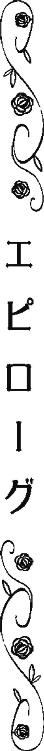
空は突き抜けるほど青く、陽射しは温かだった。
光竜連合王国の女王グラディスが王太孫を王宮に迎えてから、ローズベリー青伯爵家は怒濤のような三ヵ月を過ごした。
青伯爵だと思っていた人が王太孫だったり、客だと思っていた人が前青伯爵の本当の孫だったり。
亡くなったことになっていた前青伯爵が実は生きていたと判ったり、執事だと思っていた人物が実は青伯爵令嬢だったり。
さらにはその令嬢が本日光竜連合王国の王太孫に嫁ぐとあって、早朝から屋敷は大わらわである。
「ソロウ、お前、船、平気か......？」
そんな喧噪から一人外れて、ベンは裏庭の片隅で馬の背にブラシをかけながら声をかけた。
この馬は青伯爵令嬢の嫁入り道具の一つとして、ベンと共に海を渡って小竜島にある緑竜王国大公の城で暮らすことが決まっていた。
とは言え、本日、結婚式に列席し、さらに王太孫ご夫妻を乗せて港まで運ぶ御者役を仰せつかったベンは、暢気にこんなことをしている場合ではなかったのだが、なんとも気持ちが落ち着かずにソロウの世話を始めてしまった。
自分があがり症だと思ったことはなかったが、光竜連合王国どころか世界中から注目を集めている王太孫ご夫妻の婚礼後の祝賀披露パレードみたいな道行きの御者である。
──しかも、アン様はほとんど娘みたいなものだしなぁ......。
その門出の日に失態を犯してしまったら、目も当てられない。
「船ってどんなものなんです？」
らしくもなく不安に戦いているベンのシャツを、いつの間に来ていたのか双子のメイド達が引っ張っていた。
「カラは、初めて乗るので、解らないのですよ」
「ノラもお船は初めてなんです」
二人もアンの侍女として、小竜島に行くのだ。
以前は二人とも同じ顔で同じ髪型で同じ服を着ていて、声や話し方もそっくりだった。
けれども、あの偽者の青伯爵に別々の髪型にしろと指示されて以来、二人には少しずつ個性が出て来ているようにベンには思える。
「船は、揺れる。......とても」
どこからともなく現れたシドニーが、ベンの代わりに答えた。
前は自分から話しかけることがなかったが、このところ連立王国語の習得に前向きになっているシドニーは、こんな風にベン達の雑談にも積極的に口を挟むようになった。
大陸からやってきた彼は、もちろん船旅経験者だ。
「いや、大竜島から小竜島への場合は、大陸から大竜島へ渡ってくる時ほどは、揺れないから......多分」
ベンのいささか自信のなさそうな声に、双子達は首を傾げた。
「もしかして、お船嫌いなんです？」
「お船って、あんまり良くないものなんですか？」
いつもは豪放磊落なベンが元気がないので、双子達の顔色も悪くなる。
「い、いや、自分は、別に、そんなことは」
「あら、あなた達、こんな所で油を売って！ 結婚式が終わったら、すぐ船に乗らないといけないのよ。荷物はちゃんとまとめた？」
ベンがあたふたしていると四人のうちの誰かを探しに来たのか、この青伯爵家のもう一人の伯爵令嬢オリーブが母親みたいな小言を言いつつやってきた。
「ノラはもう馬車の所に持って行ったのです」
「カラも準備万端なのですよ」
「俺も、終わってる」
「はいはい、自分も完了しています。あとはソロウだけであります」
「そう──皆がいなくなるなんて、寂しくなるわね」
オリーブが面々の顔を見ながらしんみりと言う。
「いやいや以前に比べたら、この屋敷も、人がずいぶんと増えたし、オリーブ様が寂しいことなんてないでしょう」
青伯爵家が一時期〈呪われた貧乏伯爵〉と揶揄されるほど零落したのは、スコットが青薔薇の研究に勤しんでいるふりをしたり、行方不明になった王女殿下を捜すことに大金を費やしたせいもあるが、実は貧乏伯爵を装うために財産の大半を処分して女王陛下に預けるという荒技をやったことが主因だった。
王女殿下を女王陛下に返し、彼女の息子が王太孫殿下となった後、陛下は預かっていた青伯爵家の財産を返してくれた。
おかげでローズベリー青伯爵家はかつての栄光を取り戻し、屋敷には大勢の使用人達が働いていて、この四人が抜けてもさして問題がない状態にあった。
「あら、これからずっと家ではシドニーの料理が食べられなくなるなんて痛いわ。すっかり舌が肥えちゃったし。それに、カラやノラの代わりに針仕事を安心して任せられるメイドを探さなきゃ。二人と同等の腕前のメイドなんてそうそういないでしょうけどね。馬のことだって、ベンが一番信頼できたし」
「──オリーブ様も、ご一緒に小竜島にいらっしゃいませんか？」
ベンの誘いにオリーブは溜息を零した。
緑竜王国大公の幕僚の一人として、彼女の夫も海を渡ることになっている。
「サイ......じゃない、アン様も喜ばれると思うのです」
「今日からは王太孫妃殿下と呼ばないといけないのですよ、カラ」
「カラには、これからもアン様でもいいと、アン様は仰ったのです」
「ノ、ノ、ノ、ノラはそんな話、聞いていないのです！」
「あああ、アン様はどういう呼び方でも気にされないと思うわよ」
珍しくケンカをしかけた双子達に、オリーブは仲裁に入った。
「アン、様」
「え？」
「オリーブ様が、一緒だと......喜ぶ」
普段は余計なことは一言も口にしないシドニーにまで言われて、オリーブは観念した。
「そうね。別にサイモンに何か言われたからってわけでもないけど。と言うか、別にちゃんとは言われてないけれども、皆がせっかく誘ってくれたのだし」
オリーブの拗ねたような脹れっ面に「サイモン様ってば、何を言ったんだ......？」とベンや他の面々は心配になった。
今日、婚礼を挙げる王太孫ご夫妻は、もちろん彼らの敬愛する主だが、オリーブだって主達の大切な親族だ。
「アン様だって、知らない場所に行くのは心細いわよね。たとえあなた達やあの────な殿下が一緒だったとしても」
何か今、王太孫殿下を形容するには不適切過ぎる単語が複数個発せられたような気がしたが、賢明なる王太孫ご夫妻の使用人達は聞こえなかったふりをした。
王太孫の結婚を祝う大勢の参列者を搔き分け、厳かな聖堂の己が立つべき場所に辿り着いたスコット・ローズベリーは、間もなく自分の隣に立った婦人に驚いた。
だが、彼女は今日の花嫁の祖母だ。
親族席にいるのも当然と言えようと、思い直す。
「──青い薔薇の花言葉は、叶わぬ夢」
それでも思わず、二人が夫婦として最後に交わした言葉が零れた。
親友に託された〈青い薔薇〉のために失われた家族や友人達のことを思い出したのだ。
「──いいえ」
「！」
独り言のつもりだったのに、隣に立つ元妻から返されて、スコットは驚き、彼女の方をチラリと盗み見た。
何十年も前に別れた妻は、髪は白く、顔には深い皺が刻まれていた。
けれども、凛とした横顔と躊躇いなく他者の意見に逆らうところは、子供の頃から変わっていない。
「昔はどうあれ、今の青い薔薇の花言葉は、〈叶わぬ夢〉ではない」
ふと、自分達の結婚式もこの教会だったと思い出した。
結婚式の日、彼女とはこの日から何年も何十年も一緒に暮らしていくのだと思った。
共に異界へ旅立つまで、ずっと。
「あなたは見事に青い薔薇を咲かせたのだから」
彼女が示す視線の先に、青みがかった銀髪の背の高い青年がいる。
その奥に、彼に良く似た美しい王女。
スコットが自分の家族を犠牲にして育て、守り抜いた〈青い薔薇〉達だ。
「だから、今の青い薔薇の花言葉は、〈夢は叶う〉だわ」
遠い昔、二人の結婚式の日。
いつもは気難しい表情ばかりの妻の顔に、はにかんだ笑みが浮かんでいた。
あの日とまったく同じ表情で、一歩、彼女が近づく。
その一歩は物理的にはたった一歩に過ぎなかったけれど、彼女がスコットの人生に戻ってきたのを理解するのに十分な一歩だった。
掌の中に彼女の手が入り込む。
「──ああ、そうだね」
昔、彼女に誓った。彼女の異父妹を護ると。
昔、親友に誓った。彼の民を幸せにすると。
昔、戦場で死に行く部下達に誓った。世界の何十分の一に過ぎない小さな島々の上で、四つの王国が争うことのない国を作ると。
昔、自分に誓った。〈異教徒〉と互いを罵り、警戒し合うことのない国を築くと。
そして──彼女と死ぬまで共に暮らすことを、若きスコット・ローズベリーは夢見たのだ。
「──ああ、〈夢は叶う〉だね」
老人となったスコット・ローズベリーは老妻の言葉を嚙み締めるように繰り返した。
そんな彼らの前を、霞のようなヴェールに覆われた美しい孫娘が孫息子に手を取られて、祭壇前で待つ花婿の元へ歩いて行く。
花婿は白竜王国の女王と緑竜王国の王子の孫。
花嫁は青竜王国の王家の血を引く伯爵令嬢。
彼女の弟の婚約者は、赤竜王国の王家の末裔。
偉大なる女王グラディスの次の世代を担う彼らは、四つの国の歴史と王家の血を一つにまとめ、グラディスが統一した連合王国を真に偉大なる一つの大王国にすることを予感させた。
──失われた家族は帰ってこないが。
その輝かしい未来と引き替えに命を落としたも同然の息子夫婦や、弟のことがスコットの胸をきしませる。
祝福の鐘が鳴り、人々の歓声が轟く。
心から幸せそうな孫娘や孫息子達の姿に、彼らがすぐに新しい家族を連れてくるだろうことを確信する。
そして、自分は明るい笑みを浮かべた妻と共に彼らを迎えるだろうと、掌の中の妻の手に思った。
新しく大主教になった牧師は一族に寛大で、女王の言う通り一族の信じる神々も福音教徒の神と認めてくれた。それどころか。
「四色の竜と四種の妖精と、天と地の間におわす全ての神々と、福音教の主に誓って、アッシュ・ティンカー・オブ・アングル、そなたはアンジェリカ・ローズベリーを妻としますか」
王族の結婚式をこんな異教徒的な言葉で取り仕切るとは、かなり大胆だとアッシュは内心苦笑した。
カラやノラ達が寝る間も惜しんで縫ったドレス──余談だが、花婿のアッシュの衣装にも双子達は大奮闘した──に、アッシュの母が編んだ一族の花嫁が身につける特別な花冠を被ったアンは、驚くほど可愛らしかった。
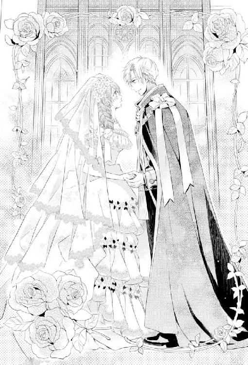
そのアンの向こうに見える列席者の中に、母と父が並んで立っていた。さらには祖父やら〈星見〉の長たる巫師やら、一族の主立った者達の姿を認めて。
「アッシュ・ティンカー・オブ・アングルは、アンジェリカ・ローズベリーを生涯の番の相手だと〈聖誓〉しよう」
一族風に誓った。
福音教徒には風変わりだと思われるようなアッシュのこの誓いの言葉に、大主教はにっこりと微笑んだ。
「──エフラム王太子殿下の分まで、どうかお幸せに」
小さく告げられる。あとで聞けば、彼は女王とエフラムの秘密結婚を取り仕切った牧師だった。
「福音教の主と、四色の竜と四種の妖精と、天と地の間におわす全ての神々に誓って、アンジェリカ・ローズベリー、そなたはアッシュ・ティンカー・オブ・アングルを夫としますか」
「はい。ご主人様を......」
──おい！
思わず睨むと、相手も「しまった！」という顔をした。それから。
「私、アンジェリカ・ローズベリーは、アッシュ・ティンカー・オブ・アングル様を生涯の番の相手だと〈聖誓〉します」
教えたわけではないのに、アンはアッシュがやった一族風の誓いをした。
普通に誓ってくれても構わないんですがぁああ──とか言いかけてアッシュは思わず口元を綻ばせた。
アッシュ・ローズベリーを演じていた一年ほどの間、感じ悪く振る舞うことを意識していたせいか、未だについついこういう発言をしようとしてしまう。
緑竜王国国王代理たる大公、そしていつかは光竜連合王国国王なんて者になるからには、この癖は改めなくてはなるまい。
──アンが僕のことをご主人様と呼ぶのを改めるのと、どっちが早いかな？
一瞬思ったが、おそらく自分の口癖が直るのが断然早いだろうと星を仰ぐまでもなく己に予言した。
なにせ三ヵ月ほどあった婚約期間、名前を呼ばれた覚えがない。
──まあ、いいけど。
お日様の塊のようなこの花嫁から〈ご主人様〉と呼ばれるのは、実はそう悪くはないと思っている。
彼女にとって、自分が他の何にもまして一番の存在なのだと解る呼び方だから。
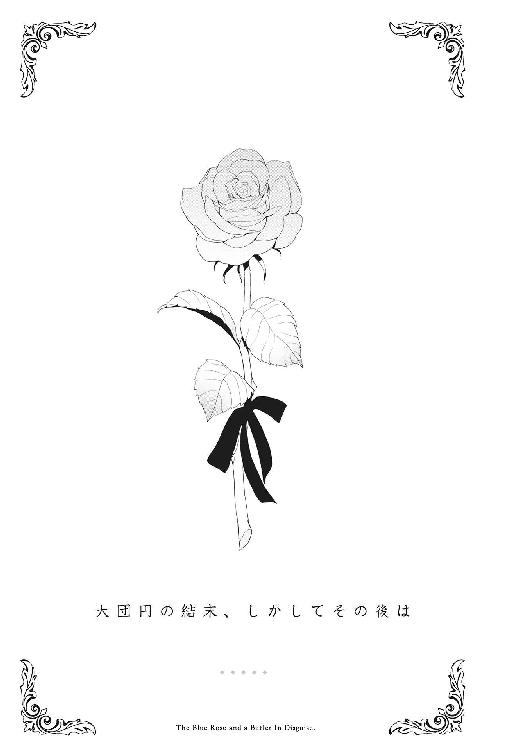
「まぁ......！」
王宮の彼女の支度室から気恥ずかしげな顔をして現れたアンジェリカ・ローズベリー青伯爵令嬢が初めて見せたドレス姿に、あたくしオリーブ・ローズベリーは一瞬言葉を失ってしまったわ。
それはもう息を飲むほどに美しかったので。
なのに彼女は自信なさそうな様子で、あたくしを上目遣いで見遣った。
「......どう、でしょうか......？」
「どうも何も、完璧よ、アン......様」
敬称が付け足し気味になったのは、ご愛敬様。
「そうでしょうか......？」
「大丈夫よ、アン様、どこからどう見ても完璧な王太孫妃殿下だわ」
あと十日足らずで正式な王太孫妃殿下になられる彼女に、あたくしは最大の讃辞を送った。
ちなみにあたくしが幼い頃から〈アンジー〉と呼んでいた彼女を〈アン〉と呼ぶようになったのは、あの顔と頭は極上品だけれども性格と態度と喋りが最悪な王太孫殿下が、スコット伯父様の孫のふりをして我が家に乗り込んできた時からだ。
日に日に人が減っていく青伯爵家で彼女は、
〝じゃあ、私はオリーブ様の従者の〈アンジー〉兼ご主人様の従僕の〈ピーター〉になりますね！〟
と張り切って宣言し、最後には執事の〈ジョージ・ハワード〉まで兼任して、八面六臂の大活躍をしていた。
職務に応じて使用人の呼び名が決まっているのは我がローズベリー青伯爵家の伝統なんだけれども、彼女はまるで役者が舞台で様々な役を演じわけるみたいに、それぞれの名前で呼ばれ役割を楽しそうにこなしていた。
その様子ときたら、周りで見ているあたくしや他の使用人達も笑顔になるくらい。
でも、あの顔と頭は極上品だけれども（略）な殿下は、なぜかそれを嫌った。
彼女に〈アン〉と言う愛称を与え、絶対に〈ジョージ・ハワード〉とか〈ピーター〉とか男性名では呼ばなかったし、他の者達にも〈アン〉と呼ぶことを強いたのだ。
──今にして思えば、結構早い時期に彼女が女の子だって判っていたのよね、あの殿下は。
しかも、彼が彼女に名付けた愛称が、見事本名をもじったものになっていたのも、偶然なのかはたまたお二人の愛の奇跡なのか解らないけど、凄いとあたくしも認めざるをえないわ。
ともかく当時の彼女はローズベリー青伯爵家の執事だったけれど、本当はスコット伯父様の実の孫だったことが公となり、今やこの光竜連合王国の王太孫殿下の婚約者様である。
だから、青伯爵の姪に過ぎないあたくしは、彼女を敬称付きで呼ばなければいけない立場になった。
それに不満など欠片もないけれども、十数年来の主従関係を逆転させるのは、なかなか難しい。
でも、無理もないと思うわ。
なぜって、あの顔と頭は極上品だけれども（略）な殿下ときたら、衆人環視の中で「ちょっとあなた、何様なんですの？ ああ、王子様でいらっしゃいましたわね、そう言えば！」的傲岸不遜なプロポーズをした挙げ句、なんやかんやもっともらしい理由をつけて──まあ、女王陛下やケント白公爵夫人が彼女の暗殺を恐れて、強く望まれたこともあるそうだけれど──求婚直後からアン様を王宮に留め置いてしまったんですもの。
そんなわけで、彼女が殿下と婚約してから三ヵ月弱。
あたくしが彼女とまともに会話をしたのは、数えるほどしかない。
だからあたくしが彼女を敬称付きで呼ぶのに慣れてないのもしょうがないし。
「ですが、オリーブ様......」
「オリーブ！」
いまだに執事と主家の令嬢という関係のままあたくしに敬語を使うアン様もしょうがないと思うの。
──もっとも頭ごなしに叱りつけるあたくしも何様かしら？
しかも微妙に敬語が足りてないかも。
気をつけなくては──と、あたくし達の様子を渋い顔で見ているアン様付きの女官達を見て、あたくしは反省する。
「はい、オリーブ。......あの、本当に問題ないでしょうか？ もちろんノラとカラがとても綺麗なドレスを作ってくれましたけれども、こういう格好は何分初めてで......」
さて。
叱られた理由を即座に理解し敬称は省いたものの、やっぱり位が下の人間に対してどうかと思う丁寧な物言いと、いつも明るくハキハキしている彼女らしくもない弱い口調で、アン様が尋ねてくる。
「とてもよく似合っています。──ノラとカラが裁縫上手だとはあたくしも知っていたけれども、これほどとは思わなかったわ。とても素敵なドレスだわ」
ちなみに裁縫が大得意で大好きな我がローズベリー青伯爵家の双子のメイドは、あの顔と（略）な殿下のご指名を受けて、アン様のドレスを──普段着から婚礼衣装まで何もかも一式──作ることになったのだ。
前半をアン様へ、後半をこの部屋の扉の前で固まっていたカラとノラに向かってあたくしが言うと、アン様はもちろん双子達もホッとしたように緊張していた顔を綻ばせた。
「まったくサイモン・ランズダウン夫人の仰る通りです。こんなに美しい姫君になられるとは」
──ぁ？
と、女官の言葉に思わず、あの顔と（略）殿下の口癖が出てしまいそうになったわ。
ええ、正式な離婚が成立していない以上、あたくしの社交界での名前は〈サイモン・ランズダウン夫人〉になりますけれどもね。
まったく、サイモンがなぜ何ヵ月も前に家を出た妻と正式な離婚をしないのか不思議だわ。
──まあ、あの殿下に扱き使われて、殿下の部下となった者達はろくに家にも帰れないでいると評判ですものね。サイモンも自分の離婚申請書を書いて裁判所に持って行く暇もないのでしょうね。
本来、福音教徒は離婚が望ましくないこととされ、離婚を認めていない福音教国も多い。
しかし、我が光竜連合王国の国教会は元々女王陛下の父君オリバー五世陛下の離婚問題に絡んで立ち上がった宗派なため、離婚に寛容だ。
裁判所にて双方の離婚の意志とか婚姻関係の破綻状況などが認められれば、法的に離婚が成立する。
ただ、原則的に夫からの書類提出がないと離婚手続きが進められないあたり、欠陥のある制度だけれど、まったく離婚を認めない他国よりはマシだと思うわ。
──先日、王宮内で偶然見かけた時も、サイモンったら目の下にくっきり隈ができていたものね。別に急いで離婚してもらわないと困るような事情があたくしにあるわけでもないから、せっつくのも少し気が引けるわ。
あ、でも、離婚して欲しくないわけでは、絶対にないし！ ──とかなんとかあたくしが心の中でブツブツぼやいていると、別の女官も感極まった様子でアン様にさらに誉め言葉を追加した。
「〈アンジー〉様のお姿の時も麗しかったですけれども、ドレス姿も素晴らしいです！」
──え......と。それ、誉めてるのか、微妙な感じが......。
とは言え、超美貌の従者〈アンジー〉として王宮でも度々臨時職員をしていたし、王太孫殿下の婚約者として王宮に入ったあとも男装姿を続けていた彼女の初めてのドレス姿とあっては、女官がこんな言葉を口走るのも解らなくはない。
あたくしも女官達も、今日まで男の格好をしている彼女しか知らなかったけれど、それでも彼女が並はずれて綺麗な顔立ちをしているのは判っていた。
──その上、こんなにきちんとドレスを着て、髪を綺麗に整えて、おまけに化粧まで施したら、もう誰も太刀打ちできないわよね。
今日のアンは両方の耳のところで髪を緩くカールして一筋だけ垂らして、あとは青い薔薇の造花で作られた飾り櫛を使って高く結い上げていて、染み一つない白い襟足が剝き出しになっている。
おまけに正式な晩餐会用に相応しくドレスは肩や背中が露出したデザインとなっているから、アンの首の細さや肩の華奢さがよく解る。
男装している時は上着に綿とか仕込んで肩に厚みを出していたから見過ごしていたが、本当はこんなに華奢だったんだとあたくしは今さらながら思った。
「──」
そして、彼女が男装を強いられた原因が己の母にあるあたくしとしては、改めて落ち込まずにはいられなかったわ。
──母様だけでなく、兄様も父様もアン様やあの殿下に酷いことしたわよね......。
特に監獄送りになった兄のしでかした罪状を考えると、あたくし、よくも王宮を追放されなかったものだと思う。
と。
「王太孫殿下がいらっしゃいました」
あたくしが落ち込んだタイミングで思いがけず、侍従が先触れに現れた。
女官達は血相を変えて──たいして散らかってはいないけれども──パタパタと室内を整える。
あたくしはあたくしで、少しばかり呆気にとられた。
王宮の正式な晩餐会では一旦ご婦人方はご婦人方で殿方は殿方で、それぞれのサロンに集まり、そこで同性同士の軽いお喋りをしてから、合流して晩餐会の会場に行くのが通例だもの。
──それをこのタイミングでアン様の部屋までやってくるって、つまりは彼女のドレス姿を一秒でも早く見ようとされたと。
あの捻くれ者の王子様にしては、対応が率直過ぎて微笑ましい。
そんな風にほっこりしていたのだけれども、あたくしとあろう者が甘かったわ。読みが。
「────────却下」
我らが偉大なる光竜連合王国の顔と（略）な王太孫殿下は、通常不機嫌そうな表情をしていらっしゃる。
しかし、今日はいつもの倍くらい不機嫌そうにアン様の前に立つと上から下まで三回くらいじっくり凝視した挙げ句、こともあろうか「却下」なんて言葉を言い遊ばされましたわ。
「──さて、どんな理由で、この素晴らしいドレスが却下なのでしょうか、王太孫殿下？」
哀しそうに肩を落としてしょげているアン様と項垂れたカラやノラ達の代わりに、あたくしは一歩前に出て悪魔みたいな王太孫殿下に精一杯の冷静さをかき集めて問うたわ。
生まれて初めてのドレス姿を問答無用で否定されたアン様も、この三ヵ月あまり寝る間も惜しんでドレスを縫い上げたカラ達も可哀相過ぎるもの。
そうしたら、あたくしに負けないくらい強い口調で、殿下が仰ったお答えときたら。
「ぁ？ 駄目に決まってるだろう。こんな肩も背中も剝き出しのドレスなんて！ 胸元だって開けすぎだ！」
──..................は？
宮中の礼儀も作法も何もかも忘れて、あたくし、思わず殿下の顔を真っ正面からマジマジと見詰めてしまいましたわよ？
あたくしだけでなく、他の女官達もポカンと間の抜けた顔をして固まっていましたわ。
だってそうでしょう？
正式な晩餐会用のドレスですわよ？
「......お言葉を返すようですが、殿下」
だから、あたくしはこめかみを押さえつつ、言いましたわ。
「殿下もご存じのように、正式な晩餐会用の夜会服というのは、肩や背中や胸元を露わにするものでございますが？」
「ぁ？ なんで食事するのに肩や背中を剝き出しにする必要があるんですかぁああ？」
即座に無茶苦茶な切り返しをされて、またまた、言葉を失ってしまいましたわ、あたくし。
「──殿下も！ ご存じのように！」
──ああ、血管が切れそうだわ......。
「王宮にはドレスコードというものがありまして！ 青竜王国一の名門であるローズベリー青伯爵令嬢にして畏れ多くも王太孫殿下の婚約者の姫君、我らが光竜連合王国の未来の王后陛下たるアンジェリカ様が、そのドレスコードを破ったドレスで晩餐会に出席するわけにはまいりませんわ！」
と、懇切バカ丁寧に、この王子歴三ヵ月あまりの殿下に説明をして差し上げましたわよ、ええ。
一応、この殿下だってローズベリー青伯爵を騙っていた頃を含めて、今日までにもう百回は正式な王宮の晩餐会に出席なさったはずで。
その数々の晩餐会の場で、女王陛下以下並み居る貴族や外交官のご婦人方やらの夜会服をただの一度も見ていないなんてありえないのに。
──今日のドレスができるまでなんだかんだ理由をつけてアン様に男装を続けさせたのは、何を隠そうこの王子様だけれど、だからこそ初めてのドレス姿は、きちんと宮中のドレスコードに則った正式な礼装でなければならないって、子供でも判る簡単な理屈じゃないの？
なのにこの顔と（略）な殿下ときたら、ムムッと唇を引き結んだ挙げ句、短い溜息を吐いて。
「──これだから、異教徒は」
──い、言うに事欠いて、そんなこと言いますか？ 福音教徒の国の王太孫殿下が、福音教徒の国民に！
あたくしだけでなく、場にいた女官達も顔色を変えている。
この殿下と殿下の父君、そして祖父君が福音教徒ではない緑竜王国の王族（みたいな立場の人）であることは世に知られたことで。
それでも、女王陛下が殿下方が信奉する神と福音教徒の神は同一であると宣言をなさったから、皆、異教徒に対する様々な思いを飲み込んで、彼を次期国王たる王太孫として迎えたのだ。
──そこのところをちゃんと解っていらっしゃるのかしら、この傲岸不遜な王子様は？
「......あの、ご主人様」
と、それまですっかり蚊帳の外にいたアン様が、そろりと声をかけてきた。
──アン様ったら、相変わらず殿下を〈ご主人様〉と呼んでいるのね。
それって正式な婚約者としてはどうなのかしらと思いつつアン様のほうを振り返ると、なぜか彼女は霞みたいな薄絹を二枚ほど頭からふわりと被っていらっしゃった。
上品な淡い淡い青と黄色の薄絹は、重なったところは淡い緑色になっている。
淡い淡い青と淡い淡い黄色と淡い緑。
絹の柔らかな光沢の下、赤みがかった蜂蜜色の髪、雪のように白い肌が微かに透けて見えるのだけれども、その姿ときたらまるでお伽話の仙女様か女神様みたいで。
あたくしも殿下も、うっかりしばらく見惚れてしまい、口が利けなかった。
「こんな風にしたら、どうでしょうか？」
溺愛する婚約者の姫君に尋ねられた殿下は、もう一度彼女の姿を上から下までじっくり眺めて。
「......その布をずっと被っているなら、いい」
と、実に偉そうに許可を出されたわ。
──それは、つまり。
まさか王太孫殿下におかれましては、婚約者の姫君の肩とか背中とかが露出しているのが気に食わなかったとか、仰いますか？
もしかしなくても、アン様が婚礼まであと十日という今日の今日まで男装を続けられたのは、従者の格好よりドレスのほうが露出が多いと言うか、体のラインが出やすいからだとか仰いますか、殿下？
......などともう少しであたくし、質問するところでしたけれど、さすがに止めましたわよ。ええ。
畏れ多くも次代の国王陛下にこんなことを肯定されたら、あたくしもこの場の女官達も、光竜連合王国民の一人として王国の行く末を儚んで、イシス河に身を投じたくなりそうでしたからね、ええ。
「......アン様、そんな風に布を被られるのは」
それはともかくとして。
どんなに美しくて素晴らしく似合っていても、こんな風に薄絹を頭に被るのは正式な晩餐会に相応しい装いではない。
それで異議を唱えかけたあたくしの言葉を、アン様は目顔で制された。
「これは、緑竜王国のドレスコードに則った服装なのです。そうですよね、ご主人様？」
あの誰もが逆らいがたい善意の塊と言うか幼い子供みたいな純粋極まる笑顔に、不機嫌な顔がデフォルトの殿下も相好を崩す。
「ああ......あんた、よく知ってたな」
「プリムローズ様に教えて頂きました」
春の日だまりのように温かい笑顔を互いに交わし合う恋人達は、美しかったわ。
真面目な話、この二人は双方ともが吃驚するくらいの美貌の持ち主で、二人並んだ姿は眼福物なんだけれども。
──なんだけれどもねぇ........................。
「アン様、アン様！」
「ア、ア、アン様！」
王宮の常識人たるあたくしが非常識を敢行しようとしている近未来の王太孫夫妻に言葉に詰まらせていると、まだまだ王宮の常識には疎いカラとノラが青い薔薇の造花を差し出した。
「今、大急ぎでカラ達作りました」
「これで留めて下さい！」
カラ達は髪飾りの造花の余りで、器用にも大至急で作ったようだ。
小振りの造花と青いリボンで作られた小さな花束に見えたそれはブローチになっていて、アン様は左右から鎖骨の下あたりで布をひとまとめにしてそのブローチで留められた。
それがまたとてもお似合いで、異国的なんだけれどもさらに綺麗で愛らしくて美しくて......言葉に言い尽くせないほど素敵だった。
彼女の婚約者の王子様もあたくしと同じ感想を持ったらしく。
この高慢で独善的で俺様な殿下に悪感情をたっぷり持っているあたくしでさえ、うっかり見惚れるような笑顔を零してアン様の耳元に何か──まあ、聞こえなくても想像はつきますけど！ ──囁き、アン様の頰を染めてから部屋を出て行かれた。やれやれ。
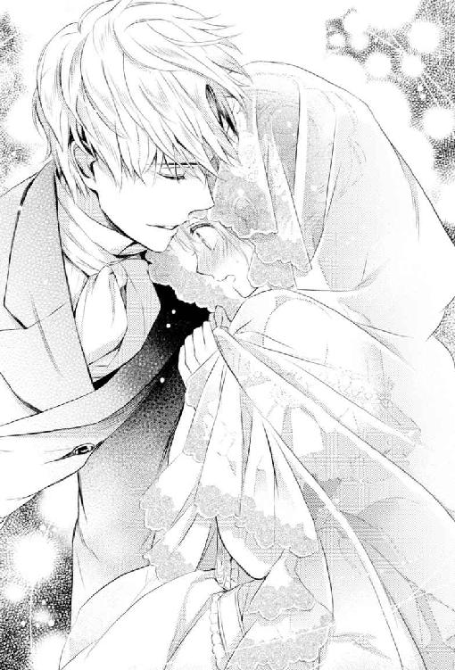
「──アン様、その格好はとても素敵ですけれども、光竜連合王国のドレスコードには引っかかりますわよ」
さて。
たとえどんなに麗しかろうと、あの顔と（略）な王太孫殿下がなんと言おうと、常識的な宮廷の貴婦人としてあたくしは極々真っ当な提案をアン様に再度行ったわ。
けれども、王宮の儀礼典範の類はあたくしよりもずっと頭に入っている──このあたり、前ローズベリー青伯爵家の執事の薫陶は厳しかった──はずのアン様は、ニコニコと微笑みながらやっぱり拒否された。
「このままで参ります。ご主人様のお望みですから」
「......ですが、緑竜王国式の装いだと、白竜王国のお偉方に悪い印象を与えかねませんわ」
元々白竜王国の方々は光竜連合王国の宗主国という意識が強過ぎて連合王国内の他の三ヵ国を見下す傾向があるのだけれども、非福音教徒国である緑竜王国に対する蔑視感は格段に強い。
ただでさえ次代の王后陛下が白竜王国出身じゃないというのは彼らにはあまり面白くない話だから、刺激するような衣装は避けたほうがいいとあたくしは思ったのだけれど。
「オリーブさ......、オ、オリーブが懸念する通りかもしれませんが」
例のごとくあたくしに敬語を使いそうになって、アン様は少し咳き込まれた。
「ご主人様がワガママを仰るのは珍しいことですから、お望み通りにして差し上げたいのです」
「──ぁ？」
今度こそ淑女らしくなく、あたくし、あの殿下の口癖を声に出してしまいましたわ。
あの殿下の嫌味と皮肉たっぷりの口癖って、実は恐ろしいほど伝染力がありますわよね。
へっ、えぇええ──？ ワガママを仰るのが珍しい？ あたくしに言わせれば、あの殿下ときたらいつだってワガママ百パーセント全開だと思いますわよ？ ──なんてあたくしの心の声が聞こえたのか、アン様は小さく苦笑された。
「多くの案件でご主人様は強引に事を進められているように見えますが、それは単純なワガママとは違って、ただ政治的にあるいは論理的に正しいことをなさっているだけですから。ご主人様は、ご自身の気持ちや感情はいつも二の次、三の次になさっていて、ワガママを仰ったことなど、私が知る限り、今回が初めてです」
「────まあ、そうかもしれませんわね」
殿下が我がローズベリー青伯爵家の当主を騙って当家に施された数々の事柄を思い出し、渋々ながらあたくしもアン様の言葉を認めた。
そもそも〈呪われた貧乏伯爵〉と揶揄されたローズベリー青伯爵家を病弱な跡継ぎに代わって財政再建しようなんて、本当に自己中心的な方なら思いもつかないでしょうし。
「確かに、アン様を他の名前で呼ぶなと命じられたことくらいかもしれませんね、純粋にワガママから生じた殿下の命令は」
「それだって、私を本名で、そうでなければ本名に近い名で呼ぶのが正しいと思われたからです。親から授かった名前を、緑竜王国の方はとても重んじますから」
どうやらアン様がこの三ヵ月ほどで緑竜王国について詳しくなったのは、噓ではなかったようで本当に勉強なさったのだと、あたくしは感心する。
「あら、それでしたら、緑竜王国式に殿下も名前で呼んで差し上げればよろしいでしょうに」
ふと思い立ってそう言うと、アン様は顔を曇らせた。
「ご主人様は......あまり、ご自身の名前がお好きでないようなのです」
──ああ。
何もかも燃え尽きたあとの〈灰〉。
アン様の言葉に、あの殿下が実のご両親からそんな風に酷い言葉で呼ばれていたことを、あたくしも思い出したわ。
殿下のご両親は普段は小竜島のほうにいらっしゃるのだけれど、時折、中央王都に女王陛下や殿下に会いに来られる。
その時々のご様子を遠くからながら拝見するに、今はそれなりに仲がよろしいように見受けられる。
けれども初めてお目にかかった時は、一傍観者に過ぎないあたくしでさえ、色々複雑な感情やら事情を抱えたご一家だと解る冷ややかさが三人三様にあった。
──親から授けられた名前を重んじる一族の一人なのに、その名前が嫌な思い出にまみれているのは、あの顔と（略）な殿下といえどもちょっと可哀相かもしれないわね。
「でしたら、なおのことアン様がアッシュ殿下のお名前を口になされば、殿下の、ご自身のお名前に纏わる嫌な思い出も上書きされるのではないでしょうか？」
そう思ってあたくしが提案すると。
「......そう。そう、そうですね、オリーブ！」
と、目から鱗が落ちたと言わんばかりの顔でアン様は、熱く強く頷かれた。
「凄いです、オリーブ！ 私、そこまで思い至らなかったです！ オリーブはやはり賢くて素晴らしい、尊敬に値する貴婦人ですね！」
根が素直で善良過ぎるアン様は、感嘆しきりであたくしの手を両手で握り締めた。
......ほ、誉めてくれるのは嬉しいけれども、そこまで手放しで誉めるほど立派な提案をしたつもりはないので、ちょっと気恥ずかしいわね。
女官達もなんだか苦笑しているし。
「......あ！ アン様、あたくしを尊敬すると仰るのであれば、あたくしのもう一つの助言にも頷いてくれますか？」
「それはできません」
アン様ときたら、これ以上ないくらいにこやかな笑みを浮かべているくせに、キッパリと退けられた。
ええ、ええ。アン様は婚約前からあの顔と（略）な殿下至上主義者でしたけれども。
「......確かに、あの殿下の珍しいワガママかもしれませんけれど」
あたくしは言葉を探して、ゆっくりと首を巡らせた。
──そう、あの殿下が天下一のワガママ者だと、あたくしがなぜ思っていたかと言えば。
「アン様は既に殿下の大きなワガママを聞いていらっしゃるのですから、今回は常識を優先なさってもよろしいのではないでしょうか？」
「殿下の大きなワガママ、ですか......？」
「ええ。あの殿下ときたら、色々無理を言ってアン様を婚約者にして、しかも婚約からたった三ヵ月ほどで結婚式まで強行しようとなさっているじゃないですか。ワガママの極みですわ」
もちろんお二人は相思相愛ですもの。
婚約自体に問題は──個人的に、あのプロポーズの言葉はどうかと思うけれども──ないですわ。
ただ、我がローズベリー青伯爵家は光竜連合王国随一の古い歴史を持つ名家で、アン様はそんなローズベリー青伯爵本家の正真正銘のご令嬢でしてよ。
その青伯爵令嬢が光竜連合王国の王太孫殿下ともあろう方に嫁ぐと言うのに、準備期間が三ヵ月なんてありえないにもほどがありますわよね。
──そりゃあ、衣装はノラやカラが凄く頑張ってくれたし、女王陛下やケント白公爵夫人、スコット伯父様も殿下方のために権力と財力の限りを尽くしてアン様の花嫁道具を調えて下さいましたし、あたくしも微力ながら食器や小物を揃えたりと頑張りましたけれど。
でも、もっと本当に色々時間をかけて準備したいものじゃない、花嫁道具って？
しかし、あたくしが発言した途端、アン様はこちらが驚くほど真っ赤になられた。
そして。
「......そ、それは、私も望んだことなので、ご、ご主人様のワガママとは違います......！」
「────────────ああ、それは失礼を申しましたわ」
謝罪の言葉がやや棒読みになってしまいましたけれど、アン様は許してくれますわよね？
結果的に言えば、アン様の初めてのドレス姿を披露する晩餐会は大成功に終わった。
緑竜王国のドレスコードという名目で頭から背中まですっぽり薄絹を被ったアン様の姿は神秘的で異国情緒溢れていて女神様のように神々しかったので、〈緑竜王国式のヴェール〉と名付けられて翌日には王宮内のご婦人方の誰も彼もが薄絹を被っていたくらい。
「......あ」
さて。
とうとう明日はお二人の結婚式という夜のこと。
式後すぐに緑竜王国へ旅立たれるため、祝賀の晩餐会は変則的に前日の夜に行われることとなり、あたくしはスコット伯父様がエスコートにやってくるのを王宮の広間の壁際で待っていた。
ところが、なぜかやってきたのは、あたくし的には〈元〉が付く夫サイモン・ランズダウンで。
「......その、スコット・ローズベリー青伯爵閣下は、今夜はケント白公爵夫人のエスコートをせねばならなくなったと」
と、ひどく言いにくそうにサイモンは言い、腕を差し出してきた。
今まで王宮の大きな祝賀の晩餐会では、独身の女王陛下やケント白公爵夫人を外国のお偉方がエスコートするのが通例だった。
しかし、ケント白公爵夫人とスコット伯父様、お二人の孫娘であるアン様の婚礼を祝う席だ。
落ち着いて考えれば、ケント白公爵夫人とスコット伯父様がご夫婦らしくお二人で並んで出席なさるのは、何の不思議でもない。
──と言うか、スコット伯父様ったら、最初からそういう予定だったのでは......？
スコット伯父様が謀ってこの状況を作り出したのか、サイモンがスコット伯父様と共謀したのか。
一瞬問い質そうかと思ったけれど、結局、あたくしは言葉を飲み込んだ。
後者を問うことは、まるで「サイモンはあたくしと復縁したがっている」と、あたくしが思っているようで、そんな自惚れた考えを持っているのかとサイモンに嘲笑されそうだったから。
前者だったとしても、ご自分を殺しかけた弟の娘をいつまでも屋敷に置いておく義理はないんだから、伯父様があたくしを屋敷から出そうと算段をしても不満は言えない。
──もちろん伯父様は優しい方だから、そういう意地の悪いことを考えられたのではなく、単純にあたくしがいつまでも正式な離婚をしないままローズベリー邸にいるので、サイモンと仲直りするよう画策されただけだと思うけど。
そんなわけで、あたくしは黙って差し出されたサイモンの腕に手をかけた。
そうして、短い夫婦時代にそうしていたように、並んで歩き出す。
「......その、君は」
数歩、晩餐室へと歩いたところで、サイモンがやっぱり言いにくそうに言葉を切り出した。
「〈緑竜王国式のヴェール〉は被らないのか？」
「ええ」
今、連合王国の中でもっとも愛されている女性じゃないかというアン様を真似て、似合う似合わないに拘らずヴェールを被るご婦人方は大勢いる。
でも、あたくしはその流行に逆らっていた。
なぜなら、あたくしみたいな焦げ茶の髪にはどの色のヴェールを被っても映えることがないと言うか、あたくしの平凡で地味な顔立ちに問題があるのか、絶望的に似合わないのだ。
「それは、その..................」
サイモンは眉間に深く皺を寄せ、先刻までの倍以上言いにくそうに言葉を詰まらせた。
「なんですの？」
「いや、その、つまり、......財政的な？」
怒る気力も萎えるような失礼極まりない質問に、あたくしは乾いた笑いを零したわ。
確かに以前のローズベリー青伯爵家ならありえそうな話だけれども、スコット伯父様が女王陛下に預けていた財産は返還されたし、今やうちは近未来の王太孫妃殿下の実家で、女王陛下の寵愛も深く、しかも当主は〈裏女王〉と呼ばれるケント白公爵夫人の夫に戻りそうな状況だ。
ランズダウン白侯爵の次男様ごときに心配されるような家では、最早ない。
──まあ、あたくしは立場的には居候ですけれど。
でもねぇ......。
「──スコット伯父様は、行き場のない姪に辛く当たるような方ではありません」
言ってしまってから、〈うちに戻ってこい〉と言わせるために言った言葉に聞こえないようにと、あたくし、必死に祈ったわ。
そんなつもり、まったくなかったんですもの。ええ、もちろん！
「ヴェールを被らないのは、せっかくの夜会服が隠れてしまうから。それに、正式な光竜連合王国のドレスコードではヴェールを被るようにはなっていませんし」
話が変な方向に行かないようにあたくしは早口で、流行に逆らっている理由を言った。
絶望的に似合わないのだということを説明しなかったのは、一応、あたくしにも女性としてのプライドがあるわけで。
「......俺は、ヴェールを被ったほうが、いいと思うが」
家に戻ってこいという方向に話が流れなくてホッとしつつも、〈緑竜王国式のヴェール〉の話を続けるサイモンにあたくしはムッとした。
婦人の服飾関係にはあまり口を挟まない人だったのに、性格が変わったのかしら。
「どうして？ ああいう異教徒的な格好って、あなたも好きではないと思ったけれど？」
普通に白竜王国の貴族らしいプライドを持ち、格別熱心とは言えないまでも模範的な福音教徒だったサイモンが、異教徒的な〈緑竜王国式のヴェール〉を勧めるのは意外だった。
「別に異教徒的とは思わないし、ほら、その......肩とか背中も隠れるし......」
しどろもどろに言うサイモンの言葉に、あたくしは眉を上げた。
自分でもハッキリ判るくらい声が低くなる。
「──それ、は、あたくしの肩とか背中が見苦しいシロモノだと言いたいんですの？」
「そうじゃない！ 逆だ！」
突然サイモンが大きな声を出したので、あたくし達と同じく晩餐室に向かっていた他の人達が吃驚してあたくし達を振り返った。
そんな彼らに何度か会釈や目礼をしてやり過ごすと。
「............お、俺は、君の肩や背中が見苦しいなんて、これっぽっちも思っていない」
小さな声で囁くように、でも、不思議なくらい熱心にサイモンは言った。
「だったら、どういう理由でヴェールを被れと？」
あたくしの声も釣られて小さくなる。
お互い声が小さくなったせいか、気がつけば顔を寄せ合うような状態になっていることに気づいて、あたくしは少し気まずいんだけれど、サイモンも気まずそうな顔をして言うには。
「それは......つ、妻の肩とか背中とか他の男に見られたくないのは当然じゃないか」
──......はぁああ？
さっきまでの気まずさも忘れて、あたくし、サイモンの顔を至近距離からマジマジと見詰めてしまったわ。
こんなバカなことを言う人だったかしら、と。
「......おかしなことを言うのね？」
「き、君はまだ法的には俺の妻だ」
「そうじゃなくて」
キミハマダホウテキニハオレノツマダと言うサイモンの声が、なんだかくすぐったい。
──そ、それはともかくとして、ね。
「肩とか背中とか見られたからって、減るものじゃないでしょう？」
「減る。確実に減る」
「何が？」
「それは......、それは解らないが、俺の中で何かが確実に減る」
再びあたくし、サイモンの顔をマジマジと凝視したわ。
「............あなたの中の何かが。その、〈妻〉の肩とか背中が他人の目に晒されると、減ると仰るのであれば」
「うん」
「あなたが離婚許可申請書を裁判所に提出すれば、問題は解決するのではなくて？」
「はぁっっ!?」
またまた大声をあげたサイモンに、周囲の人々が怪訝そうに振り返る。
耳元で大声をあげられたあたくしも、耳を手で覆ったわ。
「......ど、ど、どうして、そんな話になるんだ......？」
「だって、あたくしがあなたの〈妻〉だから、何かよく解らないものが減るのでしょう？ 〈妻〉でなくなれば、減るものもなくなるのではなくて？」
あたくし、理論的に間違ったことは言ってないと思うんだけれど？
「違う！」
なのに、またまたまたサイモンは大きな声をあげた。
「──もう、サイモンったら」
あたくしは悪戯な子供を叱る時のように彼の耳をひっぱりたい衝動を堪えて、彼の腕を軽くつねった。
「あなた、王太孫殿下の幕僚として緑竜王国へ行くのでしょう？ 王宮内の回廊でこんな礼儀知らずなことをして、評判を落としても知らないわよ？」
「......き、君が変なことを言うからだ......」
「変なことって......？ 理論的に間違ってないでしょう？ そもそも離婚の書類を作るのに、何ヵ月かかっているの？」
「......き、君は、そんなに俺と離婚したいのか？」
今さらながら改まって訊かれて、あたくしは自分でも不思議だけれど、視線が泳いだ。
──サイモンがあの顔と（略）な殿下に銃を向けた直後に問うてくれたのなら、間違いなく頷けたのに。
〝あの時は、サイモン様は魔が差されたのですよ〟
善良を具現化したようなアン様はあっさりサイモンを許したし、銃口を向けられた殿下などそのことを盾にサイモンに無料奉仕を強要していた。
最終的に緑竜王国の国王代理に就任されるにあたり、ご自身の幕僚に選ばれるくらいだから、サイモンのことを殿下なりに信頼しているのだろう。
──それなのに、当事者でないあたくしがサイモンを許せないと思うのは、傲慢なのかしら......？
それに、あたくしの兄が殿下方にしたことを思えば、あたくしもサイモンを批判できる立場にない気がしてくるし。
「その、......子供に銃を向けるような男と暮らせないという君の気持ちは解るが、俺も......反省した。もう二度と、あんなことはしない。誓う」
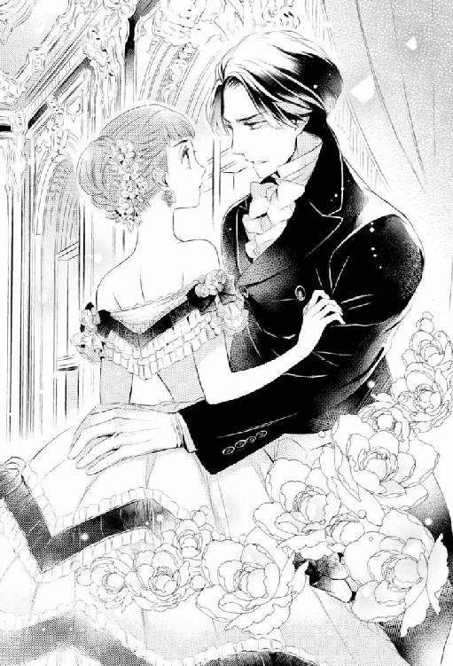
あたくしの泳いでいた視線が、サイモンの瞳の上に留まる。
見たこともないような真剣な光がこちらに向けられていて、あたくしは息を飲んだ。
以前、彼があたくしを妻にしたのは、ローズベリー青伯爵家にあると噂された〈青い薔薇〉を手に入れようとしたためだし、あわよくばローズベリー青伯爵になろうという野心からだったと思う。
けれども、今となってはスコット伯父様の次のローズベリー青伯爵はナッシュになるだろうし、その後もナッシュとリアノン様の子供が継ぐだろうから、サイモンが青伯爵位を手に入れる確率は半パーセントもない。
──おまけに、あたくしは、アン様のような美貌の女性でもないし。
サイモンにとって、今やあたくしは銅貨一枚の価値もない女に思える。
──それでも、サイモンがあたくしに固執するのは......？
「..................妃殿下の従妹叔母の夫だからって、あの殿下はあなたに優しくなったりしないと思うけど？」
精一杯考えて思いついたことを言うと。
「そんなことを、あの殿下に期待するほど、俺はバカじゃない!!」
今日、最大の音量を発揮したサイモンの声に、今度は振り返る人は誰もいなかった。
あたくし達がぐずぐずしている間に、他の人達は皆、晩餐室に入ってしまったからだ。
「......でも、それなら、あなたがあたくしを妻にしているメリットは、ただの一つもないと思うわ」
「メリットとかデメリットじゃなくて！ いや、メリットはあるんだ。俺も吃驚したが、君が家にいるのと家にいないのとでは家の空気がぜんぜん違う。そもそも君は好き嫌いで物事の判断をするような、その辺のくだらない女性じゃなくて、いつも誰よりも正しく賢くて」
......誉められていると言うか口説かれているのだと思うけれども、世に溢れる一般の恋愛小説のヒロインが囁かれるような言葉と違うのは、サイモンよりあたくしに問題があるのでしょうとも。ええ。
「......だから、頼む。俺や殿下達と明日、君も緑竜王国へ」
「サイモン・ランズダウン卿ご夫妻、定刻でございます」
こちらの会話が聞こえていたのか、いなかったのか。
絶妙のタイミングで女王陛下の侍従長が、数メートル離れた晩餐室の扉の前で低く静かに言った。
その「早く晩餐室に入れ」と言う言外の圧力溢れる侍従長の冷淡な言辞に、サイモンは言いかけた言葉を飲み込み、あたくしもその言葉の続きを促さず、足早に晩餐室の扉を潜った。
そうして、王太孫殿下の婚礼の祝賀晩餐会とあっては、あたくしもサイモンも周囲の貴族達との社交的な会話に終始せねばならず、回廊で交わした話の続きを行うことはできなかった。
が、あたくしはその夜何度もサイモンの言葉を胸の中で反芻した。
〝......だから、頼む。俺や殿下達と明日、君も緑竜王国へ〟
その言葉の続きを、明日、サイモンは言ってくれるかしら？
それとも、あたくしがサイモンに言うのかしら？
あ と が き
こんにちは、和泉統子です。
ナンバリングされていませんが、この本は『青薔薇伯爵と男装の執事』の第二巻でございます。
もしもこの本を単独一冊の本と誤って購入されていましたら、どうぞ一巻の『青薔薇伯爵と男装の執事～出逢いは最悪、しかして結末は～』から、お読み下さいますよう。
また、一巻でサブタイトルが「～結末は」なのに、結末まで書いてない！ と、友人から叱られました。同じ感想を持たれた方には申し訳なかったですが、今回は大丈夫です。この本で本篇終了です。
ただ、この本が発行されたあとの二〇一六年五月発売の『小説ウィングス』春号に番外篇が掲載されたりしますが......。ま、まあ、番外篇は別腹ということで。
本篇で最後いきなり三ヵ月ほど時間が飛んでいますが、番外篇はその三ヵ月の間にローズベリー青伯爵家の使用人達に何が起こったのかという話です。主人公二人がらみで大きな事件があってどうこうという話ではないのですが、使用人達それぞれの過去とか本篇で明かせなかったことを書いていますので、できましたら本篇と併せて読んで頂けると大変大変嬉しいです。
本当は、使用人達もちゃんと本篇で活躍させたかったのです。
アッシュが青伯爵家を立て直すのに具体的にどういうことをしたかや、ちゃんと領地に行かせて領民達とアレコレ交流を重ねて、意図せず人気者になってしまうエピソードなどもやりたかったのです。
が、主人公二人の恋愛問題を片付けるだけで、予定のページ数を使い果たしてしまいました......（と言うか、予定オーバーです......今回ページ数のせいで本が高くてすみませんすみませんすみません）。
人間関係も作者ですら混乱するほど複雑怪奇になってしまいました。このあとがきの後ろに思いっきりネタバレな人物相関図を載せておりますので、本文読了後にご参照頂ければ幸いです。
あ、それから一巻時に注意書きを入れるのを忘れておりましたが、この世界は「刺のない薔薇はない」という設定になっています。今回出て来ました毒香芹や天使の薬草と同名の植物も現実にございますが、この物語はあくまでフィクションで異世界の話で実在の人物・団体・事件そして植物とも、一切関係ございませんので、作中記載の特徴等には突っ込まないで下さいますようお願いします。
それにしても、なぜこんなに複雑な話になったのか......。
私は単に「愛する人の為なら、人殺しも辞さないヒロイン」というのをやりたかっただけなのです。
色んな小説やドラマやマンガで「彼女の為なら、世界を滅ぼしてもいい」みたいなヒーローって、けっこう見かけませんか？ でも、その逆は私の守備範囲が狭いのか、とんと見なくて。
それで、「ないなら、自分で書くわ！」と思い立ったのですが、担当さんから、
「少女小説のヒロインが人殺しをしては駄目です」
と、極々真っ当なストップが掛かりました。
......そ、そうですね。そうですよね。
世間で見かけないのは、それに萌える人が世界にほとんどいないということですものね......（涙）。
もうそろそろプロデビューして十年を迎えようとしておりますのに、毎回このパターン（超レアシチュ萌え体質とでも言うんでしょうか？）に嵌まるのは、なんなんでしょうか。学習能力０なの、私？
そんな私ですが、なんとかここまで作家活動が続いているのは、偏に担当さんのご指導ご鞭撻の賜です。本当に担当さんには感謝の念に堪えません。
感謝の念に堪えないと言えば、今回も素晴らしく美しいイラストを描いて下さった雲屋ゆきお先生にもお礼の言葉もございません。無事にこの物語を最後まで書ききることができましたのは、雲屋先生のイラストがあってこそでした。どのキャラもどのキャラも私の想像以上にそのキャラらしく、そして細部まで丁寧に描いて頂いて、とても嬉しかったです。
また、このシリーズの装丁を担当して下さったデザイナーの方にも感謝です。タイトルの文字だけでなく、章タイトルまで美しくデザインして頂いてありがとうございました。
その他、新書館の皆様のおかげで拙作が素敵な本になりましたこと、本当に感謝しています。
例のごとくＣ上司以下職場の皆さんと家族、小梅さん他友人達にもお世話になりました。色々いつも世話を焼かせてしまって本当にすみません。
実は「愛する（略）」というのとはまた別に、エフラムの話を書くのは私の長年の夢でした。
作中エフラムは凄い〈妖術使い〉だと書いていますので、「なんで彼は大人しく白竜王国の国王の下についたの？」と思われた方もいらっしゃると思います。
〈妖術使い〉達は鉄製の物が体に触れていると妖術が使えないという弱点があり、それを白竜王国の人達にばれてしまった上に、エフラムは母親を人質に取られたので逆らえなくなってしまったんですね。
まるで犬のように鉄製の首輪をつけられ、〈王太子〉とは名ばかりの扱いを受ける彼が、同じく酷い境遇の少女と出逢って恋をし......と脳内でぐるぐるお話を作っていたのですが、その時は少女を歴史上のある人物として史実ベースで話を作っていたので、どうしても悲恋になってしまいまして。
悲恋オチは駄目だなと自主的に没にし幾星霜。そのまま日の目を見ないところでしたが、今回「愛する（略）」な話を書くに当たって、コレをやるなら主従モノ。主従と言えば、ご主人様と執事。執事と言えば大英帝国。大英帝国と言えば......と連想していくうちにエフラムの話を混ぜることを思いつき、十年越しくらいで彼を世に出すことができました。
......今回の物語が複雑になったのは、ややこし過ぎる背景を持つエフラムとその恋人を盛り込んだせいな気がしてきましたが、長年の夢が叶ったので個人的には大満足です。
最後になりましたが、こうして長らく温めていた物語を書くことができましたのは雲屋先生や担当さん、新書館の皆様や周囲の方々の尽力もありますが、何と言っても一番は読者の皆様の応援のおかげです。
何かと作者の趣味に走った物語ですけれども、少しでも楽しんで頂ければ幸いです。
和泉統子
引用資料：『パプーシャ その詩の世界』パプーシャ／イェジ・フィツォフスキ他著 ムヴィオラ発行
参考資料：前巻記載資料に加え『マリー・アントワネットの植物誌』エリザベット・ド・フェドー著 原書房発行、他
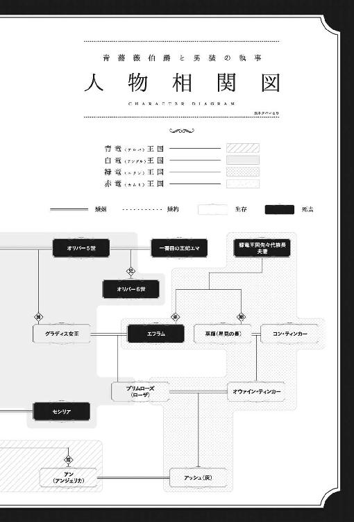
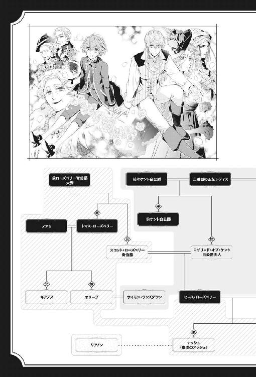
書名 青薔薇伯爵と男装の執事 発見された姫君、しかして結末は
著者名 和泉統子［わいずみ・のりこ］
(C)2017, Noriko WAIZUMI/SHINSHOKAN
初版発行 ２０１６年４月10日
電子版制作 ２０１７年３月１日
発行所 株式会社 新書館
本作品は、二〇一六年四月十日、小社よりウィングス・ノヴェルとして刊行されたものを電子書籍化したものです。デジタル版は一部紙版と異なる場合がございます。
作品はすべてフィクションです。実在の人物、団体、事件などにはいっさい関係ありません。
本書の無断複製（コピー、スキャン、デジタル化）等並びに複製物の無断譲渡及び配信は、著作権法上での例外を除き禁じられています。また、本書を代行業者等の第三者に依頼して複製する行為は、たとえ個人や家庭内での利用であっても一切認められておりません。